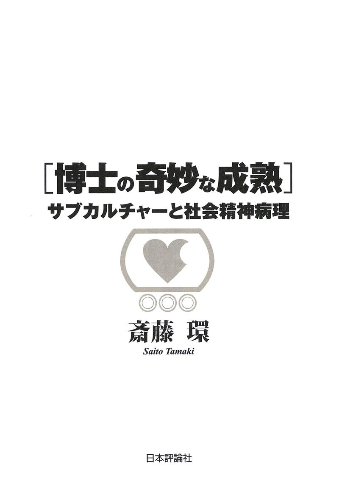
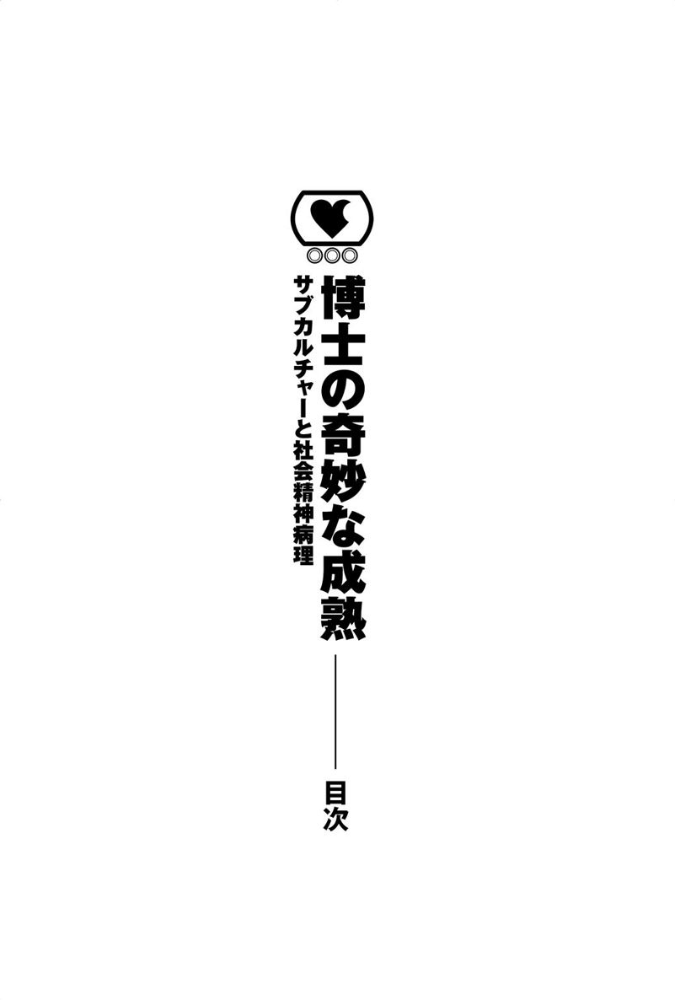
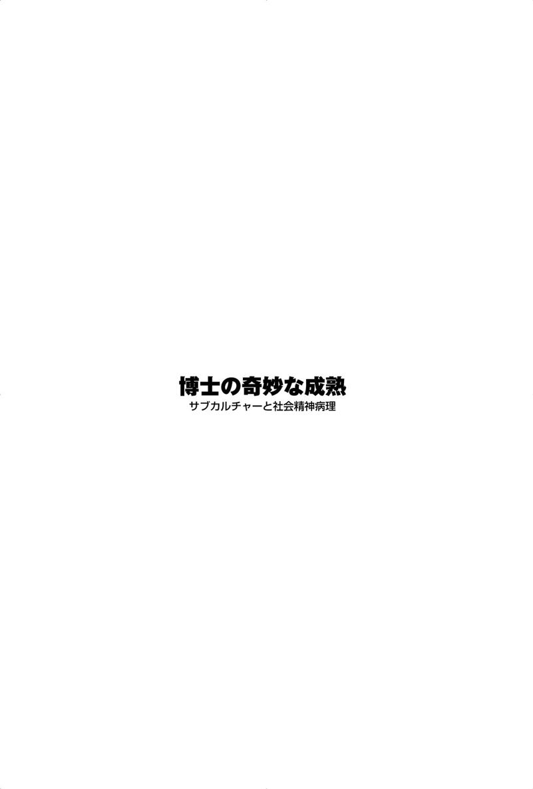
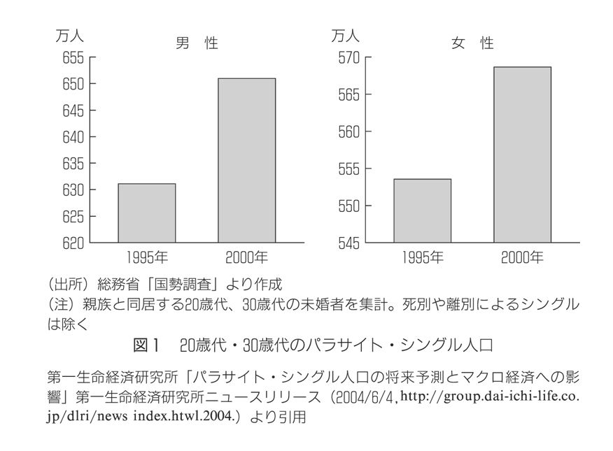
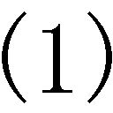
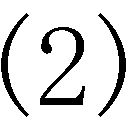
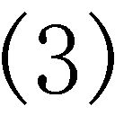
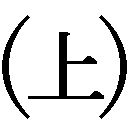

| 博士の奇妙な成熟 | |
| 斎藤 環 | |
| (2017) | |

この電子書籍は、縦組の底本を元に作成しました。

博士の奇妙な成熟
サブカルチャーと社会精神病理
──対人関係の欠落がいかに「成熟」を阻害するか
思春期との関わり／ 変遷する思春期─対人恐怖症をめぐって／ 「ひきこもり」をめぐって／ 変遷の構図／ 果たして「成熟」は可能か
なぜ「成熟」は不可能になったのか／ 『ガンダム』という近代／ 『エヴァ』というポストモダン／ 「セカイ系」のなかで大人になること
状況としての「ニート」／ ニートのリアリティ／ ニート文学と「他者」
これは「おたく」ではない／ 教室空間とおたく／ おたく差別の構造／ おたくという「症状」／ おたくであることの希望
ボーダーラインの時代？／ 太宰治からサリンジャーへ／ 尾崎豊のアンヘドニア／ ボーダーラインのメタ･フィクション
──ロリコン文化はいかに消費されたか
ロリコンの歴史／ ペドファイル≒ロリコンの構造／ おたくとメディア
パラサイト･シングルとは／ ＰＳ化の背景／ 儒教文化圏との関連性─母子密着について／ 「自立」イメージの差異／ ＰＳへの対応策は可能か
はじめに／ 「追っかけ」という現象／ 「押しかけ」の病理／ 事 例／ 自己愛の病理／ 自罰パラノイアについて／ おわりに
枠づけとしての「叱ること」／ 演技･タイミング･順番／ 「叱る」ことと治療関係
最初の問い／ 東浩紀による精神分析批判への反批判／ メタレベルと「同一化」／ ジジェクのポストモダン／ 最後の問い
解離を語る前提／ 視覚化と操作主義化／ 「再帰性」とはなにか／ 解離をもたらす「固有値」
「メランコリー親和型」の消滅／ 双極スペクトラム／ 世代論と操作主義
分裂病の消滅？／ 隠喩としての「分裂病」／ 隠喩の価値／ 隠喩としての「ひきこもり」／ 分裂性分析の倫理

第１章 終わらない思春期
対人関係の欠落がいかに「成熟」を阻害するか
思春期──純粋さゆえの矜持と悲惨。ひとはその最中にあって、この季節を素朴に誇らしげに語りえない。ただナルシシックな郷愁のみがそれを可能にするだろう。
「ぼくは二十歳だった。それがひとの一生でいちばん美しい年齢だなどとだれにも言わせまい」（ポール・ニザン著、篠田浩一郎訳『アデン アラビア』晶文社、一九六六）
いったいどれだけの人が、自分もこのような断言をかつてなしえていたら、という願いに抵抗できるだろうか。私自身おそらく、この言葉の通俗性に辟易する程度の「成熟」には至っている。しかし一瞬幻惑され、立ち止まってしまう程度には思春期の尻尾を引きずっていることもまた事実だ。
精神科臨床医として思春期事例につきあいはじめて二〇年以上になる。恩師である故・稲村博氏の研究室では、不登校や家庭内暴力などの調査研究に関わった。以来「思春期」は、私の標榜科目のひとつだ。どこの病院でも若い（面倒そうな）患者とみるや私の担当にさせられるのには閉口もしたが、これほど多くの精神科医が苦手と自負する「思春期」について、ときおり発言する機会も増えてきた。私の考えでは、思春期事例の治療は入り口がいくつもあって、出口がひとつしかない迷路のようなものだ。症状としての見かけは多様だが、目標となるのはほぼ一点、「成熟」の一語に尽きる。したがって治療的対応は意外に単純素朴なものであり、患者との信頼関係が実に治療の八割を占める。さまざまな技法をこらす意味があるのは、おおむね関係が出来た後のことだ。思春期問題の治療者に欠くべからざる資質があるとすれば──「有名過ぎないこと」は自明であるとして──「みずからの思春期の葛藤をいつでも想起できること」と言いうるのではないか。もしそうなら私のように、思春期の尻尾を後生大事に温存しておくことにも意義があるわけだ。
それでは、ここでいわれる「成熟」とはいったい何だろうか。おそらくその答えは単純なものではない。思春期について考えることは、成熟について考えることと重なるだろう。ここはひとまず、一臨床家に見える現代の思春期について素描を試みておこう。
おそらく各時代によってさまざまな思春期があり、それに応じた病理があり得ただろう。たとえば神経症──いまや廃れた診断ではあるが──のひとつである対人恐怖症は、思春期にその起源を持つ病理であり、日本人特有とされる。その病像は、時代とともに変遷してきた。よく言われることだが、四〇年ほど前の日本では、「赤面恐怖」の症状がもっともポピュラーで、民間療法の格好の標的となっていた。しかし今や、外来で赤面恐怖症を訴える患者さんに出くわすことはほとんどない。大まかにみて「赤面恐怖」の次に来たものは「自己臭症」だったようだ。この患者は別称「思春期妄想症」などとも呼ばれ、自分の体から嫌なにおいが漏れてしまうため他人から避けられてしまうと信じて疑わない。かなり治療しにくい事例が多く、印象としては七〇年代から八〇年代中盤にかけて増加したように思う。しかしこの疾患もまた、ひところよりは初診で出会う機会が減少してきている。かわって主流となりつつあるのは「醜形恐怖」と「ひきこもり」である。自分の顔に致命的な欠陥があるために、人前には出られないと信じ込むこと。あらゆる対人関係の葛藤から撤退し、何年間も自分の部屋にとじこもりつづけること。これら二つの症状は、しばしば合併してあらわれる。
ここに述べた変遷については異論もありうるし、主観的な見取りに過ぎないことを再度確認しておこう。しかし赤面恐怖─自己臭─醜形恐怖という系譜が正当なものであるなら、そこに思春期の様相的変遷を読み込むことは十分に可能だ。それはひとことで言うなら「葛藤の表層化」という傾向である。
対人恐怖の葛藤はかつて、自分の内面を見透かされはしないかという恐怖だった。それはみずからの性生活─主に自慰行為─を暴かれる恐怖としばしば重なった。自己臭にもそうしたニュアンスは残っており、それは「いやな臭い」の正体が精液の臭いと表現される場合などに明らかだった。しかし自己臭への葛藤の反映は、かなり限られたものである。私は自己臭の本質とは、「自分が自分であること」に必然的に伴う「主体臭」のごときものではないかと考える。それは必ずしも内面的葛藤のみを代表しない。
そして醜形恐怖に至り、対人恐怖の葛藤のありようはいっそうの表層化をこうむった。ただし注意を促したいのは、それが必ずしも皮相化・浅薄化ということではない点である。「表情」ではなく「顔の形」に反映されるものは、もはや内面的な葛藤などではありえないだろう。ただ「自分が自分であること」ゆえに疎外されるという恐怖、それこそが醜形恐怖の中核をなすのではないだろうか。ふと気がつけば、かつてはあれほど饒舌だった対人恐怖の患者たちが、次第にみずからの葛藤を語る言葉を失いつつある。そのように感じているのは、果たして私だけなのだろうか。おそらくこれもまた一つの「表層化」の効果にほかならない。みずからの固有性というもっとも深い部分において悩むとき、言葉は欠乏のあまり表層化するほかなかったのだ。
近年増加しつつある「ひきこもり」事例の増加もまた、思春期のこうした表層化傾向と軌を一にしているように思われる。私が精神科医になりたてのころは、対人恐怖症状を抱えつつも、苦しみながら就学・就労していた事例のほうがまだ多かったように記憶する。しかし最近の事例については、みかけ上は軽い対人困難が、あまりにもあっさりと社会参加の全面拒否に結びついてしまう。これは果たして単純に「欲求不満耐性」が乏しくなったと考えるべきなのだろうか。しかしそれもまた、おそらく「みかけ」上のことだ。言うまでもなく若者とは、いつの時代も無限に幼稚化し、自己中心化し、こらえ性がなくなってゆくとみなされがちな存在なのだから。
「ひきこもり」事例の現状について、正確な記述はむずかしい。しかし一説に言う「全国で数十万人」という数には、現場の実感としてかなりのリアリティがある。ひきこもりが不登校から引き続いて起こりやすいことを考えるなら、不登校人口が一〇万人を越えた今日、ひきこもり事例数の増加もまた必然のなりゆきだ。私の推測では、すべての不登校児のうち、少なくとも二割程度は長期化・深刻化する可能性を持っている。不登校の深刻化とは、すなわち長期化したひきこもり状態にほかならない。
冒頭でふれた稲村氏は、早くから「アパシー」という表現でひきこもり問題に注目し、さまざまな媒体で啓蒙活動を続けていた。それは先駆的であると同時に、しばしば急進的過ぎるとして批判にさらされる場面もあった。しかし氏が先鞭をつけなければ、わが国の「ひきこもり」理解は、かなりの遅れを余儀なくされただろう。私の博士論文は、まさにこのひきこもり問題に関するものだった。ところが院を卒業して一介の勤務医となってからも、外来で出会うひきこもり事例はいっこうに減らず、むしろ少しずつ増加しつつあるように思われた。ほかの医師たちからも同様の経験を聞くにつけ、不可解なのはむしろ「精神医学」の無策ぶりである。そう、学術としての「精神医学」は依然として、ひきこもり問題に沈黙し、あるいは否認を続けている。それは一九九九年四月の時点でも変わらない。問題意識はむしろ各地の保健所や精神保健センター、青少年センターといった、現場スタッフのなかに芽生えつつあるが、いまだに十分な連帯には至っていない。
たまたま思春期臨床について本の出版企画があり、私は躊躇なくそれを引き受けた。構想はすでに定まっていた。博士論文のデータに臨床経験を加味した「ひきこもり」啓蒙書である。こうして出版された『社会的ひきこもり─終わらない思春期』（ＰＨＰ研究所、一九九八）は、おおむね好評をもって迎えられた。宣伝よりは口コミによって流通したらしく、多くの感想や問い合わせが私のもとにじかに寄せられた。こうした反響はある程度予想されたものではあったが、しかし私はここに至って、臨床現場だけからはみえなかった「ひきこもり」問題のすそ野の広さを、あらためて確認したのである。
私は同書のサブタイトルを「終わらない思春期」とした。これはいささかも比喩的表現を意図したものではなく、ひきこもっている青少年の状態をありのままに形容したものである。私が彼らとつきあう中で、つくづく感じ入ったことの一つは、対人関係の欠落がいかに「成熟」を阻害するか、という事実だった。思春期以降「成熟」の壁を越えるためには、本人と家族の努力だけではどうにもならないのだ。徹底して対人関係からひきこもる青年たちは、カプセルの中で成熟を知らずに暦年齢を重ねるのみである。私の外来では、三〇代の男性があたかも一五歳の少年の葛藤を語ることがまったく珍しくない。中学時代の「いじめられ」体験が昨日の記憶の鮮烈さをもって語られ、あるいは両親への痛烈な批判が、反抗期の少年のように容赦なくなされる。ここに「成熟」をもたらすことが、いかにして可能になるか。それは治療としてなされうるか。私の著書は、こうした問いに対する暫定的な解答の試みでもあった。
対人恐怖や「ひきこもり」をはじめとする思春期の葛藤は、自我理想と理想自我の葛藤として理解できる。つまり「かくあるべき自分」と「ありのままの自分」との葛藤である。適応している成人においては、両者は必ずどこかで折り合っている。夢はかなわなかったけれども、今の生活はこれはこれで悪くない、そのような「折り合い」である。思春期事例はほとんどの場合、ほどほどで折り合うということを知らない。彼の「あるべき自分」が常に「現実の自分」を監視し、批判し、否認しようとする。この葛藤が他人に投影されると、出会う他人がすべて自分を非難し疎外するように感ずるのだ。
思春期において他者イメージというものは、基本的に自分をひな形にして作られる。この時期の他者イメージはみずからの影のような二次元的なものである。だから他人への評価も極端に二元論化し、辛辣化しやすい。それは必ずしも善─悪のような素朴なものではないが、たとえば「クール」─「ダサい」といった区分が、何にもまして絶対化されるのもこの時期の特権である。この時期にはじめて対人恐怖を発症するものが多いのはこのためでもある。なぜなら二元論的価値観はわずかな矛盾も許容できず、容易にダブルバインドのワナに陥るからだ。思春期に独特の自縄自縛構造である。それを変えうるのは唯一経験だけであり、対人経験によって他者のイメージははじめて変容される。それは言うなれば、三次元的な深みの獲得である。その獲得によってはじめて、対人関係に必然的に伴うであろう矛盾や軋轢に耐えることが可能になる。もしその獲得がかなわなければ、葛藤構造も温存され、「成熟」は徹底して阻害されるだろう。
それでは現代の思春期において、葛藤構造はどのように変わっただろうか。
現代を特色づけるひとつの顕著な傾向として、視覚イメージの特権性があげられる。マスメディアをはじめとして、医療や教育など、多くの領域で急速に視覚化が進行した。「視覚化」とは、単に見えるようにすることのみを意味しない。それは認識のありようを、「視覚」を規範的モデルとして変容させる。認識はいっそうの明瞭さと単純さを求め、俯瞰的・総覧的であることを要請し、さらに可能な限り高速に、一挙になされることを理想とする。メディアはわれわれを好色にも攻撃的にもしなかったが、しかし少なくとも「すべからく認識は視覚のごとくあるべし」という規範をわれわれに強制したのだ。それは世代や階層、知性や感性の如何を問わず、まったく無差別になされたのである。
かくして自己認識のありようも変化した。われわれは性急に自己イメージの獲得を求め、ついにはイメージを巡ってあらたな葛藤を作り出した。この葛藤の性急な解消を求める行為が「自分探し」であり、葛藤のおおもとを性急に放下しようとすれば「癒し」願望になる。いずれも「性急」である点において現代的である。
こうした変化は思春期の葛藤構造にも影響せずにはおかない。自己認識が限りなく視覚化された結果、葛藤の中心には視覚的な自己イメージが置かれ、それが症状化されれば「醜形恐怖」となる。いっぽう性急に葛藤解決を求めれば、かぎりなく明快で非妥協的な手段しか与えられないだろう。「ひきこもり」とは単に症状というよりは、おそらくそのようにして選択された解決策の一種なのである。かくして現代の思春期は、果てしなく表層化を被り続けることになる。
ここまでの検討から私なりの「成熟」のイメージは、次のようなものになる。すなわち「自己イメージ」と他者性をめぐる葛藤に対して、常に折衷的・妥協的であろうと試みる姿勢である。おそらくこうした姿勢は「去勢」によって、いいかえるなら「あきらめを知る」ことによって獲得されるだろう。いそいで註釈しておくが、「あきらめを知る」ということをすぐさま「おのれの分を知る」と読み替えないでほしい。「分を知る」とは、単にあきらめること、抑圧することに過ぎないが、私はそれを成熟とは呼ばない。
「あきらめを知る」ことは、そのまま断念を意味しない。ただ断念という行為がありえること、それはみずからの上にも起こりうるという事実を受け入れることだ。こうして自己イメージ獲得の副作用である「万能感」と「ナルシシズム」──「未熟さ」の二大要因──が中和される。私はそれこそが真の成熟であると信ずるが、しかしそれが困難であることには、あらためて愕然とせざるをえない。
たとえば異性との恋愛というハードルを越えること。かつてはそれこそが成熟の契機となり得たはずだった。しかし問題は、異性という他者性までもが表層化をこうむってしまい、その結果恋愛が去勢の契機として機能しなくなりつつあることだ。いまや恋愛は、メディアを通じて大量消費される幻想を、模倣と反復によって男女間で共有することに過ぎないのではないか。そこにはもはや、いかなる他者性もありえず、去勢は無限に延期されるだろう。「恋愛」が不可能である時代、やはり「成熟」もまた不可能なのだろうか。私はひとまず、この問いを開いたままにしておこう。
「成熟」について問われたとき私と同世代かそれ以下の書き手がゆきあたる困難は、おそらく「成熟」や「大人になる」ということに、どのような価値があるかを論理的に明示できない、というものではないだろうか。それというのも、成熟の問題は、その障害態においてしか可視化されえないからだ。つまり成熟しない大量の若者が存在するという前提からしか、この問題意識は芽生えてこない。しかし、この世代の誠実な書き手に共通するのは、幸いなことに（そう、本当に幸いにも！）「私は成熟した大人です」ときっぱり述べることになにがしかのためらいを感ずるであろう人が多い、という印象である。
ところで、本章のテーマは成熟の発達心理でもなければアイデンティティの病理でもない。「サブカルチャー」である。私の考えでは、成熟の問題とサブカルチャーの受容のありようは、きわめて密接な関係にある。さらに言えばこの領域は、形式と文脈のカタログ的宝庫なのである。
サブカルが知識人の必須アイテムになる傾向は、あきらかに一九八〇年代のニューアカデミズム（１）以降に全面化したのだが、当時「子どもであること」を称揚する知識人たちによって成熟（「スキゾ」に対する「パラノ」？）に対する深い軽蔑もまた、広く啓蒙されてしまったのは残念なことだった。加えて、今のサブカルチャー全般を見わたしたとき、「成熟困難」にまつわる問題を探し出すのはそれほど困難なことではない。ここで問題となるのは、いまや「成熟」なるキーワードは、珍重されるべき奇蹟として理解される必要があるという点である。なぜだろうか。
まず、背景的な流れを理解しておこう。「成熟の困難」とは、近代化と工業化の必然的な帰結なのである。イギリスの社会心理学者マスグローブは「思春期は蒸気機関とともに発明された」と述べた。なぜこのように言いうるのだろうか。極論すれば、工業化と近代化以前の社会には、子どもと大人しか存在しなかったからだ。子どもは「小さな大人」として、早くから労働に従事させられ、今で言う「思春期」の年齢ともなれば、すでに一人前の労働力として大人同然とみなされた。要するに、当時の子どもは、なんら猶予期間をおかずに、いきなり大人にさせられたのである。それゆえ子どもが労働力に組み入れられる時代にあっては、思春期、青年期なるものはありえないか、せいぜい特権階級の贅沢品だった。
そうした価値観は決して過去の遺物ではない。その証拠に、私たちは国民作家・宮崎駿が大好きだ。あれほど多様なテーマを扱う宮崎アニメが、ほぼ例外なく勤勉の美徳を基調にしており、しばしば虐待すれすれの過酷な労働を幼い子どもたちに強いていることに注目すれば、私たちがどんなに「はたらく子ども」が好きだったかが実感されるだろう。
しかしそもそも「近代化」とは、子どもを労働から解放する過程であった、とも言える。経済的なインフラが豊かになるとともに少子化が進み、「子どもであること」の価値は相対的に高まっていった。子どもから大人に至るまでの期間としての思春期・青年期は、まずモラトリアム（猶予）期間としての学生時代にあたり、この期間はみるみる長期化した。このプロセスを精神科医のＴ・Ｓ・サズは、次のように表現する。「『大人』というのは、子供時代と老年期との間で、限りなく短縮し続ける期間だ。なぜなら近代社会とは、この期間を最小にすることを目的としているのだから」。もっとも、これに近いことを私自身も、よりシンプルな命題として語っている。すなわち「個人の成熟度は、社会の成熟度に反比例する」と。
もちろん、成熟困難の背景にあるのは、必ずしも労働問題のみではない。一般に成熟社会においては、個人のモラトリアム期間が著しく延長され、成熟度は必然的に低下するのである。これに関連する要因は複数ある。経済的豊かさが「就労」の必然性や「家族」の生存上の必要性を緩和し、地縁や血縁の希薄化は個人が何かを犠牲にしてまで「関係」に接続する意義を失わせる。その結果、共同体意識で支えられていたさまざまな価値観がゆらいでしまう。「殺人の禁忌」「就労の義務」「大人と子どもの区別」など、従来は自明であるがゆえに疑いの余地もなかった諸価値が懐疑にさらされ、根拠の曖昧なものから順に廃れていく。なかでも「成人式」などの通過儀礼が真っ先に形骸化することは周知のとおりだ。こうした価値観を徐々に内面化・自明化していく過程もまた「大人になること」であるならば、ここにも大きな困難が横たわっているわけだ。
価値観はまた、アイデンティティ（自己同一性）を支える重要な柱だ。アイデンティティとはさまざまなカテゴリにおいて自己定位をするナビゲート感覚を指すが、このＧＰＳに座標を提供するのが安定した価値観と、その基礎をあたえる共同体なのである。それらが弱体化すればアイデンティティ拡散が起こるのはほとんど必然だ。
もちろん以上の変化は、日本だけに起きていることではない。そもそも近代化された成熟社会とは、ある種の（「すべての」ではない）未成熟さに対して寛容な社会のことだ。だから未成熟な若者が増加したとしても、そのまま若者の不適応が増大するということにはならない。しかし若者のすべてが適応可能であるような社会もまた、残念ながら存在しない。適応度の正規分布を考えるなら、平均以上の適応を示す才能のある若者が存在する一方で、平均以下の不適応にあえぐ若者が析出することはどうしても避けられない（まさに不可避であるがゆえに、場当たり的ではない対策が求められるのだ）。たとえば私が専門とする「ひきこもり」はたしかに日本に多いが、欧米では日本にはほとんどいないヤングホームレスが急増中である。要するに、未成熟や不適応の問題はどこにでも存在し、異なるのはその形式のみ、ということになる。
さて、サブカルチャーを支えるエネルギーは、本質的に「未成熟さ」に由来する。自分が何ものであるかを知らないこと。常に不安定であること。性的に混乱していること。漠然とした喪失感を抱いていること。不可能な理想と同じくらい、死や終末に魅入られていること。こうしたことがサブカルチャー的人間の特性であることは言うまでもない。そしてこれらの特性は、時代や国境を超えて普遍的だ。
やや唐突だが、ここで『機動戦士ガンダム』（一九七九─一九八〇）の話をしよう。ガンダムこそは、紛れもなく思春期のためのドラマだったからだ。無数に作られてきたアニメ作品の中で、宮崎アニメでもエヴァンゲリオンでもなく、ガンダムこそがオタクの古典たりえたということ。若いオタクを啓蒙する際、実質的な基礎教養として要求されるのは、とりあえずファーストガンダムをみておくことであるという。なにしろオタク会話中で最も引用頻度の高いガンダムの名セリフを知らなければ、会話が頓挫してしまうほどなのだから。
そういえば、かの『アニメ新世紀宣言（２）』に、こんな一節があった。「この作品は、人とメカニズムの融合する未来世界を皮膚感覚で訴えかける。しかし戦いという不条理の闇の中で、キャラクター達はただ悩み苦しみあいながら呼吸しているだけである。そこでは、愛や真実は遥か遠くに見えない」。ここには、いわゆる思春期心性に強く響きあう言葉が、いくつもちりばめられている。なによりも、みずからの変容に対する強い願いが。
富野喜幸（現・由悠季）監督は『海のトリトン』（一九七二）において、正義なるものがいかに相対的なものであるかを、子ども心にはトラウマになりかねないほど容赦なく描き出してみせたが、ガンダムにおいてはそれが全面化した。従来のアニメのほとんどが、基本的には勧善懲悪的な世界観のうえで成立していたとすれば、ガンダムはそれを一挙に転覆したのである。
物語の基本設定はこうだ。地球の人口増対策として「宇宙移民計画」が進められていたが、地球連邦の人々とスペースコロニー住民との間に次第に意識の溝が広がり、ついには宇宙移民者たちが腐敗した地球連邦政府からの主権独立を求めて戦争が起こる。このような戦争で、どちらか一方だけに正義があるということはありえない。だから万人に支持されるような、完全無欠な強いヒーローの居場所もない。主人公アムロ・レイもまた、戦うことに傷つき、ためらい、苦悩する。ここでは「いかに強敵を倒すか」は問題にならない。「なぜ戦うか」という問いに悩み、それでも成長を遂げていくヒーローは、まさしく一つのエポックだった。
批評家の東浩紀は、ガンダムの放映された一九七九年からの五年間を、アニメの短い近代であり、結果的にそれは流産に終わったとしている。類似の指摘はほかにもあって、アニメ『新世紀エヴァンゲリオン』（一九九五─一九九六）の位置を境界例（人格障害）的とみなすなら、ガンダムは神経症的なドラマであったという発表が、かつて日本病跡学会でなされたことがあった。この発表は、「エヴァのポストモダン」に照らしたとき、はじめて「ガンダムのモダン」がはっきりみえてくるという関係性を指摘したという点でも重要なものだった。
モダン＝近代にあっては、アムロのような「内省の構造」が大衆レベルで共有されていく。つまり「自分は何もので、何を欲しているのか」という存在論的苦悩である。家族も故郷も喪失し、戦う根拠もはっきりしないまま戦うアムロの姿は、思想も信仰も失いながら欲望を追求する私たちの姿に重なってみえはしないだろうか。このときガンダムのモダンをモダンたらしめている要素が「成熟」をめぐる葛藤である。
実際、ガンダムの中には、まだ成熟に価値を置いた発言がしばしばみられる。たとえばあまりにも有名なシャア・アズナブルのセリフ「認めたくないものだな......自分自身の、若さゆえの過ちというものを」、あるいは「坊やだからさ」などのように。善と悪、敵と味方の区別が決定的ではないにもかかわらず、仲間達のために戦い続けることが、否応なしに成熟を生み出してゆくこと。これは近代以降において、成熟の数少ない制度的契機のひとつとして「戦争」が残ったという現実に対応するだろう。まさに成熟した価値判断抜きには、戦いを勝ち抜くことはできないのだから。その意味で、ガンダムに登場するジオン軍大尉、ランバ・ラルは、敵ながら実に魅力的な大人として描かれており、ファンの人気も高い。
しかし言うまでもなく、『ガンダム』は成熟にすら絶対的価値を置かない。アムロたちとジオン軍との戦いが、あたかも子ども対大人の戦争という様相を呈するとしても、子どもの側はニュータイプという特殊能力によって、しばしば大人を凌駕することになるからだ。
相対化され不安定化した価値観のもと、（神経症的）内省が生まれ自問自答を繰り返し、最終的には成熟が選択されるということ。この過程は、作品の内容にかぎらず、ジャンルそのものが辿る過程としても繰り返されてきた。たとえば漫画のジャンルにおける、つげ義春の作品群。特撮のジャンルで言えば『ウルトラセブン』（一九六七─一九六八）などの作品。映画であればゴダールや大島渚。ロックにおけるジョン・ライドン（セックス・ピストルズ）。彼らはジャンルそれ自体への内省や不満に基づいてまったく新しい作品を生み出し、結果的にそのジャンルを鍛え、さらなる成熟を促すことになった。大衆表現として出発した表現の形式が、形式に自足しえない若い才能を取り込んだとき、その方法論的懐疑は若い主人公に託される。ガンダムもまた、そのような「表現の近代」の産物だったのではないか。ただし、富野自身が自伝『だから僕は......』（角川文庫）で明かしているように、富野のあがきはコンプレックスを克服し成熟を目指すという方向に明白に照準されている。
しかしアニメに関して言えば、富野以降、成熟問題は次第にフェードアウトしていったかに思われる。押井守は『うる星やつら２ ★ビューティフル・ドリーマー★』（一九八四）において永遠に終わらない学園祭を描き、宮崎アニメはしばしば通過儀礼を描きながらも、そのヒーロー＝ヒロインは決して成長しなかった。一九九〇年代、『美少女戦士セーラームーン』（一九九二─一九九三）にはじまるおびただしい「戦闘美少女」たちの到来は、一挙に「萌え」のハイパーインフレーションをもたらし、結果的に美少女達はより低年齢化、幼若化したようにも思われる。
この流れをある意味決定的なものにしたのが、九〇年代半ばにアニメ史のエポックとなった作品『新世紀エヴァンゲリオン』である。
西暦二〇〇〇年に世界を壊滅させたセカンド・インパクトからようやく復興しつつある二〇一五年、箱根に建造された第三新東京市が、本作の舞台である。一四歳の少年、碇シンジは父親である碇ゲンドウの命令で特務機関ネルフに所属し、汎用人型決戦兵器エヴァンゲリオンに搭乗することを命ぜられる。与えられた任務は、「使徒」と呼ばれる正体不明の敵の襲来から東京市を守ること。しかし一四歳の少年少女（チルドレン）たちにしか操縦できない特殊な兵器「エヴァ」もまた、その正体が謎に包まれたままであり、どうやら「敵」である「使徒」と同じ起源を持つ存在でもあるようだ。謎と言えば、特務機関ネルフの目的とする「人類補完計画」なるものが、いかなる手段で何を目指してなされるのか、最後まで判然としない。このように本作は、多くの謎をばら撒きながらも、前半は痛快なロボット・アニメのフォーマットを守って人気を集めた。
エヴァは当初、これは制作に当たったＧＡＩＮＡＸの作風でもあるのだが、既存の作品における設定やキャラクター、その他のガジェットのデータベースから、自在にサンプリング、リミックスすることで制作された作品という印象だった。ロボット、戦闘美少女、特撮映画、戦隊ものなど、ネタ元が容易に指摘できるほどの無節操な「引用」ぶりは、世代を超えたファン層を生み出した。事実、大量に出回ったエヴァの謎本では、そのほとんどがネタ元のカタログ的な様相を呈することになる。
しかしシリーズ後半、主人公である碇シンジの内面的葛藤が前景化するにつれて、物語も破綻の様相を呈してくる。そして『エヴァ』はまず、そのＴＶシリーズの最終二話によって社会的事件となった。ドラマの後半まで、それは誰も見たこともないほどスタイリッシュな巨大ロボット・アニメだった。ところが最終二話に至って、主人公シンジが突然えんえんと内面的葛藤を語りはじめ、そのあげく内面的に救済されて終わりを迎える。その結末に、ファンの大部分は激怒した。この経緯は、作家である庵野秀明と主人公の葛藤が過剰に「シンクロ」してしまったためともっぱら解釈された。
エヴァから一五年後の現在、ようやくこの作品がもたらしたインパクトが、冷静に評価できるようになりつつある。いまだ毀誉褒貶はありうるとしても、もはやアニメ史上にこれだけの存在感を獲得してしまった作品を、今ことさらに軽視してみてもはじまらない。批評関連の仕事をする中で、若い漫画家からライトノベル作家に至るまで、この作品の影響がいかに大きかったかをしばしば痛感させられる。とりわけ中学生くらいの年齢で経験したエヴァのインパクトを熱心に語るものが多いことには驚かされる。彼らは大げさに言えばエヴァで人生を変えられたわけで、これほど幸福なフィクションとの出会いが、果たして今後もありうるのだろうかと、奇妙な不安に駆られるほどだ。
閑話休題、さまざまな点で画期的であった本作について、今あらためて私が感ずるのは、その徹底した成熟拒否ぶりである。そこで誰が成熟を拒否しているのかは簡単に言えないが、少なくともその徴候は至るところにある。とりわけ主人公である碇シンジは、徹底して「成熟」から逃げまくる。追い込まれてキレた時には異常な戦闘能力を発揮するが、それは彼自身の意図を超えた暴走をもたらしてしまう。つまりシンジは、みずからの意志で決然と戦いに臨み、戦闘経験を積み重ねながら成長するという身振りからはもっとも遠い主人公なのだ。ヒロインの一人である惣流・アスカ・ラングレーもまた、月経痛に悩まされつつ女性として成熟しつつあるみずからの身体を呪う。もう一人のヒロイン、綾波レイに至っては、どうやら出自はクローンであり、巨大化はしても成熟とは最後まで縁がない。
先にも述べたとおり、本作は後半から終盤にかけて、物語と作家自身の葛藤が過剰にシンクロした結果、物語展開は急速に観念的なものになっていった。それゆえ、ここから先は必然的に庵野秀明の作家論にならざるをえない。集団作業による制作という制約上、しばしば作家論が難しいジャンルであるアニメという形式において、それでも作家論への誘惑を喚起する特異性。
私はその特異性を、仮に「境界例」という病名になぞらえて解釈しようと試みたのだった。庵野自身や野火ノビタらは「分裂病（現・統合失調症）」の概念に親近感を覚えたようだが、その後の影響力を考慮したとしても、やはり「境界例」とみるのが妥当だったように思われる。
これは簡単に言えば、人格障害の一種であり、「永遠の未成熟さ」とでも言うべき病理を指している。彼らの感情や認識、関係や行動は常に不安定であり、しばしばリストカットなどの自殺企図を繰り返す。彼らの判断は、いつでも「白か黒か」「敵か味方か」を問題にしつつ、グレーゾーンを受け容れない極端なものだ。有名な事例としては『キャッチャー・イン・ザ・ライ』のホールデン少年を思い浮かべてくれればいい。
その後庵野は『ラブ＆ポップ』（一九九八）、『式日』（二〇〇〇）、『キューティー・ハニー』（二〇〇四）といった実写作品のほうに向かったが、皮肉なことに作家性は徐々に希薄になりつつあるようにも思われる。といっても、「職人」化したというわけではない。作家性よりも趣味性が前景化することで、逆説的な匿名化が起こりつつあるように思われるのだ。「境界例的オタク」から「一人のオタク」への変化と言うべきだろうか。これは果たして、エヴァ一作で「治癒」したとみるべきか、あるいは庵野の作家性が、集団制作の中でしか発揮されないという特異なものだったのか、単純に結婚したことによる変化なのか、もちろんそれはわからない。これもまた「大人になること」の一つの形ではあるだろう。ただ、仮にそうであるにしても、かつて境界例的であった庵野の作風がアニメに「成熟拒否」の決定的身振りをもたらし、それゆえにこそ大きな反響を呼んだという事実は忘れられるべきではない。
今あらたな註釈を付け加えるとすれば、やはり劇場版『新世紀エヴァンゲリオン Ａｉｒ／まごころを、君に』（一九九七）のラストシーンに関してのものとなるだろう。破綻に終わったＴＶシリーズを補完すべく制作された劇場版では、サード・インパクトによって登場人物達がつぎつぎと液状化し、（なぜか）巨大化する綾波レイにとりこまれ死んでいく。その中で、「父の名」そのものにも見えた碇ゲンドウの弱さや逃避ぶりが露呈する。しかし主人公であるシンジ少年は、最後まで一人融合を拒絶するのだ。孤独のリスクと引き替えに死を免れたシンジはしかし、もう一人の生き残りである少女アスカの首を絞め、「気持ち悪い」と拒絶される。
このラストシーンはかなり複雑だ。シンジは果たして、最後まで成熟拒否を貫いたと考えるべきなのか。ここで液状化＝レイとの融合を選択することは、ある種の共同体の成員として社会化されることの隠喩とも考えられ、その限りにおいて「融合拒否」は「成熟拒否」に重ねられる。しかしシンジの拒否は、一貫して他者への恐怖ゆえのものだ。だからアスカの首締めも、ほとんど求愛行為に等しくみえる。それを拒絶されることで、はじめてアスカという他者との関係性が生まれるだろう。そう考えるなら、こちらにも成熟への徴候的契機があるとも言える。この両義性におそらく決着はないし、それゆえにこそ本作は、まさに古典的傑作の名に値するだろう。
『ガンダム』から『エヴァ』へ至る「成熟」のありようを整理すると、その歴史はほとんど不登校のそれに重なって見える。不登校はかつて「学校恐怖症」と呼ばれた。それが一九七〇年代になって「登校拒否」となり、さらにニュートラルな用語である「不登校」として定着した。これを言い換えるなら、「恐怖」 「拒否」「状態として一般化」という過程、ということになる。この流れを、ガンダムにおける「成熟恐怖」からエヴァにおける「成熟拒否」、そして現代における「成熟の欠如」という見取りになぞらえることは、必ずしも不可能なことではないだろう。
「拒否」「状態として一般化」という過程、ということになる。この流れを、ガンダムにおける「成熟恐怖」からエヴァにおける「成熟拒否」、そして現代における「成熟の欠如」という見取りになぞらえることは、必ずしも不可能なことではないだろう。
エヴァ以降、これに匹敵するような「大作」は残念ながら作られていない。しかし何作かのエポックはあった。たとえば新海誠『ほしのこえ』（二〇〇二）のような。この作品は一人の作家がＣＧ技術を駆使して約半年がかりで制作し、きわめて高いクオリティを達成し得たという点で、まず画期的だった。ストーリーはごくシンプルで、登場人物はたった二人、中学の同級生で同じ部活のミカコとノボルである。中学三年の夏、ミカコは国連軍の選抜メンバーに選ばれる。火星探検隊を全滅させた異生命体タルシアンを「調査」するためだ。地球を後にしたミカコと高校に進学したノボルは携帯メールで連絡をとりあうが、国連軍が太陽系の深淵に向かうにつれて、メールの往復にかかる時間は開いていく。そして八年後、まだ一五歳のミカコから、二三歳のノボルにメールが届く......。
「セカイ系」、という言葉がある。
「はてなキーワード セカイ系」の解説にはこうある。「過剰な自意識を持った主人公が（それ故）自意識の範疇だけが世界（セカイ）であると認識・行動する（主にアニメやコミックの）一連の作品群のカテゴリ総称」であり、代表的な作品として『新世紀エヴァンゲリオン』『ほしのこえ』『最終兵器彼女』（二〇〇二）などが挙げられている。ポイントは「［きみとぼく社会世界］という３段階のうち、『社会』をすっ飛ばして『きみとぼく』と『世界』のあり方が直結してしまうような作品を指すという定義もある」とされている。
『ほしのこえ』に描かれるのは、宇宙空間で繰り広げられる異星人との戦いと、メールだけでつながる「ノボルとミカコ」の淡い交流だけだ。ノボルの高校生活や就職、国連軍の宇宙船におけるミカコの生活、あるいは近未来の日本社会や世界情勢などは、ほとんど描かれない。私はこうした事態を、劇作家の別役実の用語を用いて「中景」の喪失、と捉える。ちなみに皮膚感覚でお互いに感じ取れる距離が「近景」、家族や地域社会といった共同体的な対人距離で構成されるのが「中景」、神秘的なものや占いを信じるような態度は「遠景」ということになる。いまや近景と遠景はネットワークを通じていきなり接続されてしまい、これを媒介していた「中景」がみえにくくなりつつあるのではないか。ここで「中景」に該当するのは、「社会」や「イデオロギー」、ないし「価値観」などだろう。
本稿の文脈において「セカイ系」が重要なのは、それがついに「大人になること」とは無縁のジャンルとして確立されてしまった点だ。「セカイ系」の提唱者は「はてなダイアリー」のブログ「ぷるにえブックマーク」氏である（http//d.hatena.ne.jp/tokataki/）。氏は西尾維新の作品を例にとり、セカイ系作品においては、主人公も敵キャラも最初からやたらと強く、非日常な出来事にもクールな態度を貫き、ヒロインは最初から主人公に好意的で向こうから接近してくれるのだという。それは主人公の成長や変化を描く「マンガ・アニメ的リアリティに立脚」しておらず、それゆえ登場人物はけっして成長しない。つまりこれらは、ことごとくが反ビルドゥングスロマンなのであって、そのような系譜の作品が数多く作られ、若者から一定以上の共感と支持を受けているという現実を、ひとまずは受け容れる必要があるだろう。そして、すでにおわかりのとおり、「大人になること」もまた、失われた「中景」の一部にほかならない。
人はつながりあうために「社会」と「成熟」を必要とした。しかしこうした中景という媒介を、今はネットワークが置きかえる。ミカコとノボルがつながりあうのに必要な媒介は、携帯メールだけだった。ドラマをもたらすコミュニケーションギャップも、ネットワーク上の時間差からしか生まれない。「山を動かす技術のあるところでは、山を動かす信仰は要らない」と述べたのは哲学者のエリック・ホッファーだ。畢竟、テクノロジーがコミュニケーションを媒介してくれるなら、誰がそれ以外のものを求めるだろう？ だからセカイ系の要諦はこうだ。「キミとボク（＝コミュニケーション）」と「セカイ（＝ギャップ）」さえあれば、いつでも「物語」を開始し、また終わらせることができる。ならば、果たして本当に、「成熟」は不要になったのだろうか？
おそらく、そうではない。
本稿ではこれまで、主にフィクションを素材として、さまざまな様相において示唆された成熟の不可能性を眺めてきた。しかし本当は、「成熟」概念がまさにそうであるように、「成熟の不可能性」もまた一つの幻想であり、そういって良ければ「イデオロギー」なのだ。いかに成熟困難の訴えが数多くなされようと、現実に成熟は否も応もなく起こり続けるだろうし、そのための場所も確保され続けるだろう。ただしそれは、より広義の「成熟」であり、これを「適応」や「去勢」などと言い換えても同じことである。
そう、おわかりのとおり、かつて理想とされたような全人的な性格に至るための「成熟」は、もはや不可能なのだ。たとえば「メタ視点」について考えてみよう。事象とその外側（メタレべル）の双方を常に視野に入れておこうという姿勢は、おそらくある種の未成熟さに由来する。たとえばネットカルチャーでよく言われる「ネタをネタと見抜く」能力は、メタ視点なしには不可能だ。
ところが、通常の社会生活を営んでいく上では、メタ視点は必要とされない。それは日常生活において、いまだインターネットが必須ではないのと同じことだ。ネットもメタ視点もなしに、「日常」は淡々と営まれうる。そんなロハスな生活人こそが「大人」なのだと言われもするだろう。しかし、ひとたびこうした「大人」たちが「現代社会」を語り始めるや、それがことごとくズレた発言になっていくのも、すでに見慣れた光景である。彼らの「ネット批判」「ゲーム批判」の外しっぷりをみれば、それがよくわかる。
「メタ視点」や「ネットカルチャー」への配慮抜きに、適切に現代を語ることはできない。「中景」に参加するには未熟のままでいなくてはならないという逆説がそこにあらわれている。だとすれば、そのような能力を指して、いつまでも「未熟」呼ばわりすることは、あきらかに不当なことだ。考慮されるべきは「成熟の不可能性」ではなく、「成熟フレームの変容」のほうではなかったか。
たとえば、成熟とは去勢のことだ。去勢によって奪われるものは何か。それは「万能感」である。それでは「万能感」の対義語は何か？ 「あきらめ」や「分際」を知ること？ そうではない。万能感の対義語は「自由」だ。そう、私が考える成熟の定義は「去勢によって自由になること」、これである。
一般に精神分析における「去勢」を経ることで、人間は「語る存在」になるとされる。別に精神分析によるまでもない。言語という能力を獲得することは、人間の思考と行動に、言語というフレームをはめ込んでしまうことだ。それを窮屈に感じるのか、「言語なんて越えてやるぜ！」と、特に男の子は言いたがる。しかし、それは無理だ。なぜなら「窮屈さ」や「言語を超える」という発想自体が、言語的に導かれたものなのだから。私は美術評論業界にもちょっとだけ接点を持っているが、非言語表現を目指した身振りくらい「紋切り型」を量産するものもない。ならば言語はなんのためにあるか？ 認識と行動のため、つまり「自由」のためだ。私たちは「自由に語る人間」であるために、「大人になること」を選択する。そのように考えるなら、むしろ「大人」は、至るところにいるはずだ。
第３章 「ニート」など存在しない
なぜ『ユリイカ』（青土社）が「ニート」を特集するのか？ 「ニート」がカルチャーであるからか？ つまりそれは「自己表現」の一種ということなのだろうか？ それにしても、それがたちの悪い冗談ではないといったい誰に言えるのか？ 私にはそれがよくわからない。しかし、かつて「フリーター」や「ひきこもり」がそうであったように、「ニート」という言葉には、どこか単なるレッテルを超えた、過剰な象徴化への欲望を喚起するような契機が含まれている。たとえば「ニート」ブームの剰余として、キャラクターとしての「ニート君」が産出されてしまうように。この剰余にこそニート的リアリティが宿るとするならば、なるほどたしかに「ニートはカルチャー」なのかもしれない。
とはいうものの、さしあたり基礎的なことがらを確認しておくのは無駄ではないだろう。知られるとおり、もともと「ニート」はイギリス由来の言葉であり、一六歳から一八歳の、修学・就労・トレーニングを受けていない若者すべてを指していた。労働政策研究・研修機構の小杉礼子氏が、イギリス版に修正を加え、「日本版ニート」を定義づけた。それによると、ニートとは一五～三四歳の若年層のうち、学校を卒業したあと家事も通学もせず、職業訓練もしておらず、働く意志もなく結婚もしていない者を指すことになる。このような、失業者でもフリーターでもない無業の若者たちは、厚生労働省の調査では二〇〇三年で五二万人にのぼり、近年急速な増加傾向にあるという。
しかし、ブーム化するにはさらなる一押しが必要だった。二〇〇四年には経済学者の玄田有史がフリーライター・曲沼美恵との共著『ニート』（幻冬舎）を出版し、本書は広く読まれることになる。少なくとも私の知る限り、「ニート」という言葉の浸透は、徹底して戦略的になされたと言ってよい。玄田は就労支援政策の予算を獲得するため、まずは大衆的な問題意識に訴えかけようと目論んだ。しかし、いくら正確な統計資料で事態の深刻さを示しても、およそ人々にはアピールしない。必要なのは常にキャッチーな「レッテル」と「物語」だ。玄田の読みは見事に当たった。はじめは新奇な外来語だった「NEET」が、和製英語めいた流行語として浸透するのに、さして時間はかからなかった。そのなりゆきは私の目には、退潮気味だった「ひきこもり」への世間的注目が、「ニート」という意匠を獲得して再燃したとも映る。ただしそれは「いかに就労させるか」という身も蓋もない要請を伴ってはいたのだが。
もちろんこうした状況に対する批判もある（というか、あるべきなのだ）。内藤朝雄は「ニート」を、青少年に対するネガティブ・キャンペーンの一つとして捉える。つまり、「パラサイト」や「ひきこもり」といった「『先行ヒット商品』のイメージに上乗せする仕方で、ニートが流行したと考えられる」というのだ（内藤朝雄「憎悪の社会空間論」『10＋１』40号、二〇〇五）。だからこそ「ニート」は、グローバルな問題でありながら、日本においてのみ流行語となった。
内藤はこれに先立つ論考でも、次のように述べている。「昔から、さまざまなニートが世に棲んでいた。金持ちの馬鹿息子とか、道楽者の父さんとか、いい年をしてぶらぶらしている『ろくでなし』は、悪口を言われながらも、世の風景にとけ込んでいた。それが文学の広い裾野でもあった。一昔前の学問は金持ちの馬鹿息子が身代を食いつぶして行う道楽の一種ではなかったか。出家や隠遁へのあこがれもあった。宗教というサブカルチャーは、そういうあこがれと深く結びついていた。考えてみれば仏陀もイエスもニートのガキたれではなかったか」（内藤朝雄「お前もニートだ」『図書新聞』第二七一八号、二〇〇五年三月一九日付）。そう、そして「天皇」もまた、象徴としてのニートにほかならない。あたかも中井久夫の伝説的論文「世に棲む患者」を彷彿させるような内藤の視点には、精神科医ならずとも一定の説得力を覚えるだろう。
内藤は、玄田が前掲書で例示する中学校での「強制労働」やジョブスポットでなされる対人スキルの注入などについて、心がけや生活態度を第三者の介入によって変えさせようとする姿勢であるとして批判する。政治が教育を利用する結果、強制労働的な条例や政策がエスカレートしてゆき、市民社会がメルトダウンする可能性を内藤は危慎している。
ここで私が玄田の姿勢を部分的にせよ擁護しようと試みるのは、必ずしも玄田との共著本に関わった経緯ばかりからではない。玄田は経済学者として異例ともいうべき態度においてニート青年達の内面に照準し、彼らが単なる怠け者ではないという前提を維持しながら、強制ではなく誘惑によって就労支援を試みようとしているかにみえる。少なくとも私の知る限り、玄田はベタなニート批判を口にしたことは一度もないし、ニート対策として強制労働を持ち出すほどナイーブな論者でもない。これは政策に関与しうる立場からこの種の問題に対応するうえでは、ぎりぎりの妥協ラインではないか。さすがに「希望学」はどうかと思うが、ニート提唱者がニート批判者にそのまま重ならなかった点はやはり幸運ではなかったか。もしこれ以上の寛容性を求めるならば、まさに内藤が述べるごとく、「ニートなど存在しない」と断ずる他はない。それがもはや不可能である以上、私は内藤の論の正当性ではなく、戦略の正当性にあえて異を唱えたい。玄田の全面否定のみでは単に「内藤朝雄」というキャラが立つだけで終わり、になりはしないか。「プロレス」ではなく、実効性を求めて戦略的に振る舞うとすれば、玄田と正面から対立するのではなく、一定の評価と共に監視を続けるといった姿勢のほうが有効ではないだろうか。
「ひきこもり」流通に一役買った覚えのある私にとっても、むろん「ニート」問題は他人事ではない。私は自身の活動について、ひきこもり批判勢力と、ひきこもり擁護勢力から等分に批判されてきた経験を持つ。まさにそのバランスにおいて、私はみずからの立ち位置がそれなりにフェアなものであることを再確認するという、いくぶん倒錯したモニタリングを試みてきた。そうした自覚に基づいて言うなら、玄田のとっている戦略は、みずからの行使しうる影響力を十分に自覚した上での穏健なバランス感覚に基づいている。「奉仕活動義務化」をうたった平成一二年の教育改革国民会議報告のような愚かしい提案を平然となすような「有識者」を、政策立案の現場でこれ以上のさばらせないためにも、玄田のバランス感覚に対しては一定の評価を与えておくべきなのだ。これは政治的要請というものである。
もう一度確認しておこう。内藤論文は、玄田批判というよりは、留保なきニートブーム批判──それはしばしば「わが子をニートにさせない」という形式で語られる──が蔓延しつつある現状に冷水を浴びせかけるという点において、まず画期的なものだった。しかし、そこから一気に教育そのものへの批判に向かうとき、内藤は無意識に、ニート批判と同型の論理を採用しているように思われるのだ。それは現状の問題を一種の「徴候」として捉え、そこから一気に憂慮すべき未来図を描いてみせるという、社会学的外挿とでも言うべき想像的手続きである。敵側と同じ論理を批判に用いるというアイロニーはしばしば両刃の剣だ。ニートブーム批判から一気に全体主義批判へと向かうことは、単に飛躍が過ぎるという以上に、ある種の繊細さを犠牲にせずにはおかないだろう。たしかに現状のニートブームには大いに問題がある。しかしそれを「全体主義的」と評するだけでは、この言葉が否応なしにまき散らしてしまうリアリティを捉え損なうのみならず、なによりも自身の中のニート性すらも否定してしまうことになりはしないか。
それでは「ニートのリアリティ」とは何だろうか。
ここで文脈を変える。ニートの定義などはいったん忘れよう。たとえば私は、「ホリエモン」をついニート的な存在とみなしてしまいがちである。さすがにライブドア社長当時ほどの権勢は失ったとはいえ、誰がどう考えても「勝ち組」側に分類されるであろう存在であるにもかかわらず、彼の存在からは言いしれぬ「ニート臭」のごときものが立ち昇るからだ。もちろん堀江自身の表面的な言動は、ニートの対極にあると言ってよい。にもかかわらず、堀江のメンタリティは、ひきこもりやニート青年たちのそれにきわめて近いように思われるのだ。たとえば、世間で自明とされるさまざまな価値への不信。ときに露悪的ともとれるほど、あけすけに手の内を語る率直さ。親や故郷、家族に対する、やや理不尽なまでの否認ぶり。年長世代への反射的とも言える嫌悪と反発。コミュニカティブではあっても関係性には至りえないような不器用さ。自信に裏打ちされない万能感。しかし最大の共通点は、「物語の欠如」と「欲望そのものへの欲望」であろう。こうしたことに基づいて、かつて私は、彼を「社交的ひきこもり」と呼んだこともある。
ニートたちを悩ませるのは、みずからの欲望が実現できないことでも、行動力が不足していることでもない。（どういうわけか）人並みの欲望を持つことができないことだ。いっぽう堀江は「宇宙旅行」や「世界一の会社」などについての「欲望」を語りはする。しかし、これらの対象には、およそリアルな手応えが欠けている。なぜか。それらは単に「欲望の拡大」そのものを意味しているだけだからだ。そもそも無名時代の堀江に強烈な印象を残したというインターネットの可能性自体が、価値や理念とは無関係に、欲望を無限に拡大するための形式にほかならない。そう、堀江が欲するのは、「他人の欲望」そのもの、あるいは「欲望を可能にする形式」そのものなのだ。そして、「欲望そのものが自己目的化する」という一点において、彼は「ニート」や「ひきこもり」青年と同じベクトル（「欲望」を持ちたい！）を抱え込むことになる。
だからニートを政治化する際に、しばしば見られるような「ニート＝マルチチュード」といった図式は適用しにくい。少なくとも「マルチチュード」には何らかの「欲望」が想定されている。しかしニートの欲望は困難だ。さらに言えば、彼らは連帯や交流とも親和性が低く、そこからはマルチチュード的混沌や多様性すら生成する気配はない。そうしたニート的存在に対し、たとえば次のような「苛立ち」の表明があるほどだ。
でもさ、素朴にこう感じるんだよ、フリーター階層の人々は本当はもっと怒っていい、臓腑を焼かれ怒りに身悶えして構わない、そしてその《怒り》を社会の方へ投げつけていい、って。......なぜぼくらは怒りを投げつけられないんだろう？ 毎日毎日、疲弊と不安の水底で消耗し続けるだけなんだろう？ 状況がひどいんじゃない、この状況のひどさに気づきもせず、本気で怒ることさえできないことが「ひどい」んだ。ぼくはまずこの無感覚な「なんとなく」の皮膜を切り裂いて、あなたたちの「本当の声」を、本当の怒りや呻き声を聞きたいって思うんだ。
（杉田俊介『フリーターにとって「自由」とは何か』人文書院、二〇〇五）
テロの指嗾すれすれにもとれる、この不穏かつ切実な告発は、まずそれ自体が貴重なものだ。しかし、政治的論議にはいる手前で、私はやはりこの告発にすらにじむ、「敵」の見えない焦燥感、怒りを表現できないのではなく、苦痛や怒りすら感じられないことへのもどかしさのほうに注目しないわけにはいかない。ここで杉田は、果たして「本当の怒り」の可能性を、心から信じているのだろうか。あるいは、ここにも自己目的化すれすれの「怒り」への欲望があり、それはけっして遠くはない迂回路を経て「欲望そのものへの欲望」に接続しているのではないか。ところで、言うまでもなく「欲望」という言葉は、本来「欲望の欲望」を指している。だから正確には、ニート的欲望こそが、もっとも欲望そのものの本質に近いとも言いうる。問題はニートにおける「身も蓋もなさ」、つまり無造作に本質的なものが露呈してしまうような脆弱さにあると言い直しておくべきかもしれない。
「ニート的なるもの」は文学に親和性が高い。というよりむしろ、理論的に語ろうとすると容易に陥る袋小路を回避するためにも、文学的迂回を経たほうが接近しやすい。ここで私が「そもそも小説家なんてみんなニート」などと決して言わないのは、この韜晦的な言い回しこそが、およそニート的ではないという理由による。それでなくても、私はかつて「小説家なんてみんなひきこもり」という紋切り型に食傷してきた覚えがあるのだ。もちろん、ほんとうのニート小説家は、こんなことは言わない。彼は言うだろう。「他の立派な書き手に比べたら、僕なんかニートそのものですよ」と。ならばニートは「自称」なのか？ 近いが、これでも不正確だ。内藤論文の卓抜なタイトル「お前もニートだ」が示すとおり、ニートとはまずなによりも「自己への呼びかけ」のための言葉、なのではなかったか。
文学以前に、ニート的な漫画はすでに数多く存在する。いや、雑誌そのものがニート度において色分けできるくらいだ。最もニート色の強い『ヤングマガジン』（講談社）と、ニート色が希薄、なのではなく反ニート色の濃い『モーニング』（講談社）を両極として、その中間に『ビッグコミックスピリッツ』（小学館）が位置する、という具合に。いうまでもなく少年誌は対象外となる。作品で言えば古谷実『ヒミズ』『シガテラ』、石原まこちん『ＴＨＥ３名様』、真鍋昌平『闇金ウシジマくん』、のりつけ雅春『中退アフロ田中』などが典型的だ（『スピリッツ』掲載作が多いのは私が定期購読しているからで他意はない）。そして、この意味においてニート的な小説家は、まだそれほど多くはない。
例としてここでは、佐藤友哉と滝本竜彦を挙げておこう。かつて私は彼らを「ひきこもり文学」の書き手として論じたが（『文学の徴候』文藝春秋、二〇〇四）、本稿ではいくぶん考えをあらためた。むしろ彼らにおいて示されていたのは「ニート文学」の可能性ではなかったか？ 彼らにおいて特異に思われるのは、私小説的ファンタジーという形式を全面化して見せたことだ。これは一部「セカイ系」なるジャンルに接続する形式でもあるのだが、今はそちらには深入りしない。佐藤なら「『世界』の終わり」（『世界の終わりの終わり』角川書店、二〇〇七）、滝本なら『超人計画』（角川書店、二〇〇三）などが典型だが、ファンタジー世界と萌えキャラを並置しながら、主人公の独白には、作家自身の心情吐露が、露悪的なまでに重ね合わせられる。
しかしだからといって、彼らの作品はメタ・フィクションたりえない。この点が太宰治や柳美里ら、境界例文学の書き手とは大きく異なる点だ。そう、どれほど彼らが作品中に独白を書き連ねようと、それはメタ・フィクション的効果をもたらすことはない。これはなぜだろうか。おそらく彼らは、自身の生活すらも、他のデータベースと同様の手つきでサンプリングしようとするからではないか。結果、「論理階梯」が無効化し、「作品世界」と「楽屋裏」の区分も暖昧化してしまう。だからこそ彼らの文章では、東浩紀も指摘するとおり、幻想を書くときほどリアリティを帯びるという奇妙な逆転が生じうるのだ。このような逆転の実例を、彼らの作品ではなく、東浩紀自身の「小説」から引用してみよう。余談ながら、これは東によるライトノベル実作の試みとしても貴重なものであり、同人誌掲載作品であることから読まれる機会も限られているため、紹介をかねてここに引用を試みる次第である。
冷汗が脇の下を滑り落ちるのを意識しながら、僕は声の顫えを悟られないように低くつぶやく。やめろ。
──この会話はまずい。
「あなたはあのときまで、長いあいだ悩んでいた。他人を愛するって、理解するって何なのか、ずっとずっと悩んでいた。現実と虚構は同じ重みしかもたないし、いつでも世界から自分を切り離せるし、嘘なんていくらでもつけると思ってた。実際に恋人を裏切り続けていた。（中略）『存在論的、郵便的』の第四章が失敗に終わるのは目に見えていた。それが一九九七年の夏。あなたがもっとも追いつめられていたとき。もっとも荒れていたとき。だからその失敗を、わたしに託して、脳内対談という形式で外部化し、メタレべルを仮構し封印した。それは彼女を愛するために必要だったから。（中略）あなたは、オタクに喜ばれるのを嫌ってた。群れたオタクが嫌いだった。オタクは孤独なものだと思ってた。そして、実際に、あなたはずっと友達がいなかった」
（東浩紀「萌えと愛と脳内と（Death編）」『HIGH END CRITIQUE MAGAZINEはかぎくす!!』二〇〇四年夏号）
本作における「脳内アスカ」の描かれ方は、滝本による「脳内綾波」や佐藤友哉による「脳内妹」との対比において、あるいはニート小説における脳内彼女への構造的要請など、さまざまに重要な示唆をはらんでいるが、そのことは今は措こう。引用のくだり、あるいは小説全体を読んで、どこまでが小説内キャラクターとしての東浩紀で、どこからがリアル東浩紀かの区別がつくだろうか。容易に理解されるとおり、そのような区別は単に不可能である。メタ・フィクションならぬ、私小説的ファンタジーの形式性とは、まさにこの効果において際立ったものになる。ミステリーないしエンターテインメントの形式で「私小説」を成立させるこの形式こそは、ニート文学からの収穫ではなくて何だろうか。彼らは境界例文学の書き手と異なり、ほとんど「文学性」を主張しない。むしろ徹底した娯楽（＝ネタ）として、みずからの来歴を読者に差し出そうとするのだ。その意味で「ニート小説家・東浩紀」の技量はかなりのものである。
彼らの作品から私が抽出し得た「ニート文学」の特徴とは、以下のようなものになる。
ひたすら「関係性」へと読者を挑発する境界例文学とは異なり、ニート文学には関係性への誘惑はほとんどない。あるのはむしろ、関係性の断念と、それにもかかわらず（それゆえに）過剰なまでにコミュニカティブかつ開放的な文体である。このため、自己暴露に見える箇所も「どうせ俺なんて......」といった露悪的告白や後ろ向きの誘惑には到底みえない。言うなれば彼らの文章は、つい傍受してしまいたくなるほど面白い独白電波なのだ。このような文体が可能になるのは、彼らが文章から可能な限りナルシシズムの臭いを除去しようと腐心するためである。境界例文学の「文学性」が、そのナルシシズムにおいて維持されているとすれば、ニート小説のエンターテインメント性は、ナルシシズムを隠蔽し否認するために要請されたとも考えられる。
小説の形式にはメタ的構造が看取されにくいかわりに、その背後にある自意識は、むしろ過剰なほどメタ的にみえる。いささか極端化して言うならば、それは、この世界のすべてに対して、メタ的にしか関わることができないような自意識である。この部分に関してのみ、比喩的になら「解離」の語を用いても構わない。世界と、それに関わる自分の関係性自体を、記述によって不断に外在化せずにはいられないような意識は、まさにこの世界をデータベースとして認識するほかはないだろう。詳しく言えば、このとき「関係性」は「コミュニケーション」へと縮減＝想像化され、結果的に「世界」は「データベース」へと縮減させられる。なぜなら「コミュニケーション」とは、「データ」のみを対象とする関係性を指すのだから。結果、そこで生起するあらゆる事象は、常にすでに「テンプレート」（鈴木謙介）化されたものとしてしか体験されることはない。
境界例文学を支える自意識は、真理の審級をメタレベルにおいて担保しようと試みる。そこでは「本当の私」の表象不可能性にこそ、リアリティとナルシシズムの相互依存的な成立が賭けられるからだ。いっぽうニート文学を支える自意識は、「データベース化した世界」というコンテクストにおいてメタ化を試みる。しかしデータは、徹底して表象可能性に対して開かれているがゆえに、真理の審級は維持されにくい。
絲山秋子の小説『ニート』（角川書店、二〇〇五）もまた、テーマはもとより書き手の自意識においてもニート的である。ただし、ニート的であるほかはない自分自身に対する批評性も加味されているため、小説の味わいはより複雑なものになっている。かつての知人であるニート男性の生活に強引に介入し、金と食事とセックスで供応しようとする「私」は、しかしそれで何かが変わると信じているわけではない。そうすることで「キミ」が就労したり家庭を持ったりすることを応援するつもりなどないのだ。いや、一瞬でもそうした期待を持つことすらも禁欲している。それでいて「私」と「キミ」とは、互いの心の襞までわかりあえているかのようだ。そこには見かけ上は献身的なまでの思いやりがあり、思いやりへの感謝すらある。にもかかわらず、「私」は「キミ」を所有できないことを知っているし、「キミ」に保護を強要する自分の存在が、一種の暴力である可能性にすら自覚的だ。これは要するに、「キミ」も「私」も、同程度にニート的なのである。
思えば絲山の前作『逃亡くそたわけ』（中央公論新社、二〇〇五）においては、方言と精神症状とによって、珍道中をくりひろげる二人の間には、いたるところでディスコミニュケーションが生じ、それがある種の開放性に繋がっていた。してみると本作における閉塞感は、十分になされる交流と理解が、なんの変化にも繋がらないことから来ているのだろう。なぜならそれはことごとく、「コミュニケーション」でしかないからだ。ついに関係たりえないコミュニケーションは、互いの心の底まで覗きあいながらも、なにひとつ変化をもたらすことはないだろう。ここに描かれているのは、鮮明過ぎる想像界のスクリーンによって強固に隔てられた、二人の「他者」なのである。
思えばポストモダンの「他者」は、まずなによりも「言葉を共有できない相手」を指していた。しかしいまや、他者はその立ち位置の変更を迫られている。あらたな他者は「データ」そのものだ。データとはコミュニケーションする以外の関係を持ちえない。私の言い方に、まだ想像的データの外側に「真の対象」「真の関係性」への期待がにじみ出ているとすれば、それは私の内部に残遺するポストモダン的後遺症としてご寛恕願いたい。ともあれ私はこう言いたいのだ。ニートを理解するのは容易だ。ニート対策もまた容易だ。最大の困難は、この容易さゆえに、われわれが「ニートを変えたい」という欲望をなかなか手放すことができない点にある。だとすればニート文学の価値とは、この種の不埒な欲望を解毒し、ある種の断念を導入するためにこそあるのだ、と。よって本稿のタイトルは、こうした断念の決意表明として読まれたい。
第４章 「おたく」であることの困難と希望
誤解される機会があまりに多いので、このさいはっきりさせておくが、実は私はおたくではない。
某ゲーム誌上で「日本一『萌え』に詳しい精神科医」という自称のもと、もう一〇年近くも連載を続けているが、にもかかわらず、私はおたくではない。
これは謙遜でも否認でもない。「おたくはみんなそう言うんだ」という指摘は、事情通と言うよりは半可通の意見であろう。私は漫画はよく読むが、アニメはよほど話題にならなければ見ないし、取材以外の目的でゲームを楽しんだ経験もない。コミケや秋葉原にも仕事以外の目的で行ったことはここ数年ない。
たしかにおたくの一部の層には私の名は知られているようだが、それは戦闘美少女やエロゲー擁護をする変な精神科医、という程度の認識であろう。彼らに直接尋ねてみれば、私が「偽装物件」であることが容易に確認できるはずだ。
ただし、次のことは認める。おそらく私は、私と同世代の人間の中では、比較的おたく事情に通じている人間、ではあるだろう。もちろん「おたく事情に通ずる」ことが必ずしも「おたく」そのものと重ならないことは自明ではあるのだが。
それではそもそも、おたくとは何か？
この話題についての情報は書籍にしてもネット上にも大量に存在するし、私も著書『戦闘美少女の精神分析』（ちくま文庫、二〇〇六）において、ほぼ一章をさいてこの問題を論じているので、詳細はそちらを参照されたい。ここではこの問題には深く立ち入らず、比較的あっさりとすませておくことにしよう。
おたくとは、一般的には、ハイティーンから成人以上の熱心なアニメ・ゲームファンを指す。さらに一部の漫画ファン、フィギュアのコレクター、コスプレイヤー、アイドルや声優のファン、怪獣映画などの特撮ファンなどがここに含まれるだろう。
しばしば「マニア」と混同されがちであるが、一般にマニアには現物志向、実体志向が強いのに比べ、おたくは虚構志向とでもいうべき傾向が強い。
彼らが愛好するのは、アニメやゲームなど、本来なら小学校か、せいぜい中学までに卒業してしかるべき「移行対象」だ。しかしおたくたちは、思春期を過ぎて成人して以降も、こうした対象物をいっそう深く愛し続ける。その身振りはしばしば現実逃避的とみなされ、それゆえおたくに対する批判としては「人間として未成熟」「現実と虚構を混同している」等のクリシェが定着している。
精神医学的にはとりわけ彼らの対人困難に注目して、分裂病型人格障害、もしくはアスペルガー症候群などの「診断」が下される傾向にある。しかしその多くは、診断概念の濫用事例と言えるだろう。これは精神医学の診断体系に「健康」概念が欠如しているために起こる問題である。
ここで、私が著書で記しておいた、おたくの「定義」ならぬ「記述」をごく簡単に紹介しておく。
①虚構コンテクストに親和性が高い人
②愛の対象を「所有」するために、虚構化という手段に訴える人
③二重見当識ならぬ多重見当識を生きる人
④虚構それ自体に性的対象を見い出すことができる人
こうした特徴のすべて、もしくは一部が該当する場合、その人はきわめて「おたく的」にみえるであろう。とりわけ④は重要である。おたく青年たちが抱え込みがちな葛藤や苦悩、あるいは彼らが「差別」されがちな理由の多くは、まさにこの点に由来すると考えられるからだ。
こうした青年たちは一九七〇年代後半から徐々に増加し、周知のとおり一九八三年にはライターの中森明夫が、差別的な意図を持って彼らを「おたく」と命名している。しかしおたくという言葉を一気に有名にしたのは、一九八九年の宮崎勤による連続幼女殺害事件である。宮崎は、それが事実かどうかはともかく、典型的なおたくと理解され、そのうえで批判されあるいは擁護された。
「成人女性が苦手なペドファイル」「社会性と常識に欠けた犯罪者予備軍」「性格が暗く孤立しがちな人」といったイメージは、宮崎事件で決定的なものとなった（余談ながら、犯罪を契機にネガティブな形で認知度が一気に高まったもう一つの言葉に「ひきこもり」がある）。
しかし九〇年代以降、当事者によるおたく擁護論がさらに活発化し、二〇〇〇年代に入ってからはおたくを主人公とした小説やテレビドラマがヒットした影響もあって、おたくは一種のキャラクター類型として緩やかに受容されていく。
「アキバ」「萌え」「腐女子」「メイド喫茶」といった言葉が一般化し、マスコミ報道でもかつてほどの偏見は少なくなった。ただし、こうした社会の側の受容態度の変遷は、当事者からすれば「痛し痒し」、もしくは単に迷惑でしかなかった可能性もある。
一般社会では偏見が薄れつつあるとはいえ、「おたくであること」には、いまだ多くの困難が伴う。とりわけ学校生活にあっては、おたくはかなり決定的な負の属性として認識されるようだ。
その背景にあるのは、いわゆる「スクールカースト」の問題である。森口朗は、最近のいじめ対策を考えるうえで、スクールカーストの存在を無視できないと指摘している（『いじめの構造』新潮新書、二〇〇七）。
これは、文字どおり中学・高校の教室空間における関係性のヒエラルヒーを指す言葉である。小学校時代はそれほど顕著ではないが、思春期を迎えた中学以降は、こうした傾向が顕著になるとされる。
ここで生徒間の上下関係を決定づけるのは、ひとえにコミュニケーション能力である。若い世代ほど、対人評価におけるコミュニケーション・スキルの比重は高い。スクールカーストが成立する背景には、こうした若い世代のコミュニケーション至上主義がある。
それゆえカーストの上位は、コミュニカティブで友人が多く、場の空気を支配し笑いがとれる生徒が占めることになる。彼らの多くはファッションや容姿にすぐれており、異性関係が豊富で性体験もある。
これに対して、友人が少なく空気が読めず、異性関係も不得手なおたくは、ほぼ確実にカースト下位に位置づけられるという。おたくであると認識されることは、そのままいじめの対象となるか、あるいは一般の生徒からは相手にされないという事態につながりやすい。
現役高校生がケータイで書いた小説として話題になった木堂椎『りはめより１００倍恐ろしい』（角川文庫、二〇〇七）には、おたくであることがいかに秘匿されるべき負の属性であるかがリアルに描かれている。たとえスポーツが得意であっても、おたくであることが暴露されると、カースト上の地位の凋落は決定的なものになってしまうのだ。もちろん誇張があるにしても、ここには学校的価値観の現在形があると考えてよいだろう。
もちろん、こうしたおたく差別のありようは、学校や地域によっても異なる。近年はおたくの浸透と拡散がいっそう進行し、野球部のレギュラー選手でありながら熱心なアニメファンでもあるといった生徒も珍しくないらしい。しかしここでは、あえておたく差別を前提として論を進める。
私は先ほど、おたくに関する四項目の記述のうち、「虚構それ自体に性的対象を見い出す」点を強調しておいた。おたく差別の根底には、こうした性の問題が確実に存在する。単に虚構を愛好するだけなら、読書家でも映画ファンでも同じことだ。しかし、彼らは少なくとも、その趣味を理由におたくほどの差別は受けたりはしない。
おたくの特異性、とりわけその被差別性を語るうえで、最も重要な問題が彼らの「セクシュアリティ」である。近年急速に知られるようになった「萌え」という言葉が象徴するように、おたくの本質はこうした疑似恋愛能力に極まる。おたくが批判される最大の要因のひとつは、彼らが性的現実と直面しようとせず、こうした疑似恋愛に逃避している（ようにみえる）ためだ。
前述したように、近年「萌え」という言葉は、急速に一般化した。これはアニメやゲームなど虚構のキャラクターに対する愛着を指す言葉である。この言葉には若干の自嘲的なニュアンスとともに、性愛的な感情が多分に含まれている。虚構そのものに性的対象を見い出すその欲望のスタイルは、マニアのフェティシズムよりも、さらに直接的なものである。
多くのおたくたちは、愛着する虚構のキャラクターをマスターベーション・ファンタジーとして使用する能力を持っている。たとえば同人誌における一八禁ものと呼ばれるポルノグラフィックなパロディのジャンルは、主としてこの目的のために存在する。
ここにおいて特筆すべきことは、おたくのセクシュアリティにおける一種の乖離である。たとえば「一八禁もの」には、さまざまな性的倒錯の描写が含まれる。とりわけ問題となるのは、そこにしばしば「ロリコン」、すなわちペドフィリアへの嗜好がみてとれる点であろう。
おたくへの差別意識や嫌悪感は、こうしたペドファイル的側面において極まるだろう。しかし、案に相違して、おたくの大半は実生活においては、必ずしもペドファイルではない。彼らの性生活は、その嗜好にかかわらず「健全」であることが多いのだ。
おたく差別の構造は複雑である。これを黒人差別にたとえる論者もいる由だが、むしろその構造はユダヤ人差別のほうに近いのではないか。
知られるとおりユダヤ人差別には、キリスト殺害とか金貸しが多いとかの曖昧な理由以外には、決定的な根拠がない。「ユダヤ人種」や「おたく遺伝子」は存在しないにもかかわらず、さまざまな「人種的特徴」が指摘されがちな点も共通している。ユダヤ人は「ワシ鼻」、おたくは「チェックのシャツにバンダナ」などなど。
とりわけ女性差別や黒人差別と最も異なるのは、おたくたちがあきらかに不当な差別を受けながら、正面からの抗議や反対運動が起こりにくい点だ。これは、おたく当事者がおたくであることに後ろめたさを感じており、しばしば自己嫌悪に陥ってしまうためである。同様に「ユダヤ人の自己嫌悪」も有名で、ユダヤ人映画監督であるウッディ・アレンの持ちネタになっている。
私の知人のひとりは「自信がある人間はおたくではない」とまで断言するが、これはおたく建築学者の森川嘉一郎が指摘する「おたくのダメ志向」（選択肢を二つ以上示されると、「よりダメなほう」を選ぶ傾向）に通ずる指摘である。
ユダヤ人差別の根底には、ユダヤ人の優秀さに対する不安があると言われている。ユダヤ陰謀説が根絶できない理由もここにある。ならば、おたく差別の根底にも同様のメンタリティがあると考えるのはうがち過ぎだろうか。
彼らはしばしばＩＴ系の才能に優れており、その才能は他の才能に比べて、現代のニューエコノミーにあっては生産性の高い少数者、すなわちエリートとして処遇される可能性が高い。ビル・ゲイツの存在が象徴的である。彼がおたくかどうかはともかく、おたく的たたずまいの人物であったことに異論は少ないだろう。
あるいはわが国が唯一、海外にむけて安定的に輸出し続けている文化コンテンツは、アニメやゲーム、漫画など、ほぼおたく的なジャンルに限定されている。このようなおたくの「優位性」が、必ずしもおたくの地位向上につながらず、むしろおたく差別の一因となっているのは奇妙な逆説である。
話を臨床に戻そう。幸いなことに、おたくをこじらせて診療におとずれる事例は、それほど多いわけではない。ひきこもりなどの困難を抱えた青少年がアニメやゲームのファンであることは少なくないが、それはおたく文化の浸透度を示すと同時に、彼らのライフスタイルが要請する必然でもある。また彼ら自身がおたくと呼ばれることを強く否認する傾向にある点も興味深い。
おたく趣味が治療上問題となる事例があるとすれば、深夜アニメのライブ視聴ができないからという理由で入院を断る事例や、床頭台をガンプラで埋め尽くして掃除のさいにトラブルになった事例などが思い出されるが、それもせいぜい数例といったところである。
おたくに固有の葛藤構造は、しばしばおたく自身を苦しめる。しかし、その構造から逃れることはできない。おたくはなろうとしてなれるものでもなく、やめようとしてやめられるものでもないのだ。おたく学生のリアルライフを描いて当事者からの評価も高い木尾士目の漫画作品『げんしけん』（講談社、二〇〇二─二〇〇六）における「名言」を引用するなら、おたくとは「気がついたらなっている」ものなのだ。その意味で──あえてラカン派的な言い回しを用いるなら──彼らの趣味は彼らの「症状」なのである。
おたく文化とは、現代日本が歴史の必然として抱え込んでしまった、巨大な異文化である。彼らの優位性も被差別性も、その異文化性がわれわれの日常と隣接しつつ同時に断絶していることに由来するだろう。さらにこうした「断絶」そのものは、彼らのセクシュアリティの特殊性に起因している。
ただしその特殊性は、ゲイやレズビアンのそれのように、みずからの正当性を主張することは少ない。現代の成熟社会は、ペドフィリアを唯一の例外として、かつて性的倒錯とされたほとんどの性的嗜好に対して著しく寛容な社会である。ペドファイルが犯罪者とされるのは、子どもが被害を受けるという実情のみならず、その嗜好が相手との対等な関係性を前提としていないためでもあるだろう。
おたくのセクシュアリティもまた、ペドフィリックであると同時に、「関係性の排除」という「後ろめたさ」を背負い込んでいる。おたくは二次元キャラへの疑似恋愛で自己完結すべきであると主張する論者としては本田透が知られているが、彼の主張と実践が一種の修行としてなされるほかはなかったことを考えるなら、真の意味での関係性の断念は、当事者にとっても困難であることは疑いない。
それゆえ多くのおたくの悩みは、非モテ、すなわち現実の異性関係がなかなか持てないことに集約されがちだ。数量的には決してマイノリティと言えない彼らがなかなか連帯しようとせず、マイノリティ意識にさいなまれるのもこのためである。二〇〇八年六月に秋葉原で起きた通り魔殺人の加藤容疑者が──彼のたたずまいもまた「おたく的」ではあった──みずからの苦悩を「不細工だから」という言葉に集約させていたことが連想される。
おそらく、おたくの「勝ち組」とは、異性のおたくパートナーを得ることを意味するのだろう。たとえ結婚できたとしても、おたく趣味を理解しない配偶者によって趣味を中断させられてしまっては意味がない。「キャラ萌え」と現実の異性関係の両立こそが、おたくの理想郷なのである。しかしそれは、通常の幸福の条件に比べてさえ、いかばかり高いハードルであることか！
みてきたように、メンタルヘルス的にみて、おたくであるということがもたらす困難はあきらかだ。ひきこもりやリストカットなどの事例には、おたく的な嗜好を持つ患者が少なくないのも事実である。にもかかわらず、ほとんどのおたくが現実に精神障害を罹患せずにすんでいるとすれば、それはなぜだろうか。
実は私は、おたくであることのメリットは、総体としてはデメリットを上回ると考えている。その最大の理由は、彼らの欲望が同世代の青少年に比べて、きわめてはっきりとした輪郭をもっているという点にある。そう、彼らはみずからの欲望を理解している。このこと自体が、現代にあっては希有なことなのだ。論旨から外れるのでくわしい解説はしないが、現代において自己同一性を支える最大の要因は、社会的位置づけでも自己の連続性でもなく、「欲望の自己所属感」であると私は考えている。
近年、「草食系男子」といった言葉が話題となり、若い世代では性欲も物欲も希薄化しつつあることがしばしば指摘される。多くの市場調査や意識調査が、彼らの消費活動の縮小化傾向をはっきりと示している。こうした状況下では、みずからの欲望をはっきりと自覚し、それに向けて行動できること自体が、一つの「能力」なのである。現代のおたくたちは、「自分探し」の葛藤を抱え込みにくいという意味では、相対的に健康度が高いとすら言いうるのだ。
私は必ずしも冗談ではなく、ひきこもり青年たちに「おたくになる」ことを勧めることがある。より正確に言えば、みずからのおたく性に対して寛大に振る舞うよう促すのである。これは、みずからの欲望を自覚することが、彼らにとっては社会参加の第一歩たりうると考えるからだ。ただし、必ずしもそれだけが理由ではない。
私はおたく趣味が治療上持ちうる意味について、以上とはまったく別の仮説を持っている。それは一言でいえば、仮想空間に没頭することの発病抑止効果とでも言うべきものであり、その意味で一種の「不発病の理論」（中井久夫）でもある。
私はおたく趣味というものが、ある種の統合失調症患者、もしくは発達障害の患者に対して治療的に作用することがあると確信している。
これについては、事例を呈示したほうが早いかもしれない。
現在二五歳の男性事例、診断は統合失調症である。両親は離婚して母親と同居しているが、父親も統合失調症で治療中だった。対人関係が苦手で小学校で不登校となり、以後ひきこもって家庭内暴力もみられ、精神科を受診した。自宅ではパソコンをいじっていることがほとんどで、趣味は美少女ゲーム（美少女を口説いて落とすゲーム）と匿名掲示板に書き込みをすることである。ゲームのキャラクターになりきって女装することが多く、母親が注意してもやめなかった。ときに支離滅裂な言動や被害妄想的な訴えがみられ、その都度入院治療で改善している。現在、症状は安定しているが、ほぼ完全なひきこもり状態で、依然としてゲームとネット漬けの状態が続いている。
なお、この事例に関しては、広汎性発達障害の可能性も否定できない点を付記しておく。
彼にとってゲームやネットが治療的であるか反治療的であるかについては意見が分かれるかもしれない。しかし私は、もし彼がゲームもネットも知らなかったら、ひきこもり状態や幻覚妄想がいっそう増悪し、慢性の経過を辿っていた可能性が高いと考えている。彼の場合は、ネットやゲームが、ある程度発病抑止的に作用したのではないだろうか。
統合失調症患者の一部にみられるＰＣやネットへの親和性は、彼に限ったことではない。テレビは苦手だがパソコンやインターネットは好むという事例が少なくないのだ。理由は不明だが、私は無線性・受動性（テレビ）と有線性・能動性（ネット）の違いが一因ではないかと考えている。また、コンピュータとネットに構造的に具わっている階層性（ＯＳＩ基本参照モデルの七階層など）も、不安なしに接続を容易にする要因のひとつではないか。
一定の階層構造があり、能動的に没入できる仮想空間とは、まさにおたくたちが親しんでいるアニメ、ゲーム、ネットなどといった虚構の空間にほかならない。こうした性質を持つ空間には、体験を枠づけたり、認知を安定させたりすることで、ときにはある程度「発病」を抑止する効果があるのではないだろうか。
香山リカは『テレビゲームと癒し』（岩波書店、一九九六）において、興味深い体験を記している。強迫性障害を持つ患者が、ゲームの中では強迫症状に陥らない、というのだ。
この指摘は、一見当たり前のことのようで、決して当たり前ではない。強迫症状が現実生活の中でしか発現しない理由を、従来の精神分析理論や精神病理学では十分に説明できないからだ。バーチャルだから起きないという説明は、要するに「ゲームはゲームに過ぎないのだから現実とは違う」というトートロジーに過ぎない。
ここでもう一例、ヒントとなりそうな事例を挙げておこう。かのシュレーバー症例である。フロイト、ラカン、ドゥルーズ等によって繰り返し検討され、おそらくは精神医学史上もっともよく知られた事例でもある。
花村誠一は、オートポイエーシス理論に依拠しつつシュレーバー症例のきわめて大胆な再解釈を試みている（「分裂病の精神病理学とオートポイエーシス」『精神医学』青土社、一九九八）。周知のとおり、シュレーバーとはドレスデン控訴院長まで務めた人物であり、統合失調症を発症したのち治療を受けて回復し、特異な回想録を残した人物である。事例の詳細は成書を参照されたいが、花村はシュレーバーの回復過程について重要な指摘を試みている。以下、そのくだりを引用する。
「こういう異様な構造構築によって心的システムの作動は安定していく。構造構築が強固になるにつれて、システムの産出的作動が弱くなる。これはシュレーバー当人にとって、魂に直接とどく音や光が弱まると体験される。彼はピアノやチェスなど、単純な規則のもとに身を置く。これによって、心的システムと身体システムとのカップリングが回復していく。彼はやっと、みずからの構造についての反省の位置を獲得する」
私は本書を読む以前に、花村氏と河本氏による精神病理学会での共同発表を聞いている。そのさい、このピアノやチェスの体験はもう少し大きな比重で語られていたように思う。いずれにせよ、ルールの比較的単純なバーチャル空間に身を置くことは、こうしたカップリングを回復するうえで、ある種のリハビリテーションのように機能する、とここでは解釈しておこう。
シミュレーションが治療上果たす役割については、ＳＳＴや近年ＰＴＳＤ治療として試みられている持続エクスポージャー（prolonged exposure therapy：ＰＥ）法などの例を挙げるまでもない。おたく的空間は、一見情報量が多く複雑なようでいて、階層構造さえ理解すれば、見晴らしのきく操作可能性の高い空間でもある。階層構造の理解とは、要するに階層ごとに別のリアリティがある、ということの理解につながり、そうした空間への没入や操作の体験は、現実検討力を維持し高めるうえで有効なのではないだろうか。
おそらく、おたく的な葛藤構造が完全に解除されるのは難しいだろう。しかし、まさにそうした構造そのものに、おたくというトポスに固有の治療文化もまた、宿りうるのではないだろうか。その意味からも、「階層構造を持つ仮想空間」の治療的意義について、さまざまな立場からの検討がなされることを期待したい。
第５章 サブカルチャーとボーダーライン
境界性人格障害（以下、ボーダーライン）は、どこまで時代の病理と言いうるのだろうか。
たとえば、近代を「神経症の時代」と捉えるなら、ポストモダンは「ボーダーラインの時代」であるという言い方にも、一定の説得力はあるだろう。いわゆる「ポストモダン」なる時代の本質が、「モダンの徹底化」であるとするならば、この指摘はいっそう正当なものになる。私のように「人格障害」概念に対する深い懐疑を抱き続けている立場からすれば、まさに「ボーダーライン」の存在こそは、「神経症」の徹底化にほかならないからだ。
およそＤＳＭの時代には似つかわしくないこの種の表現に私がこだわるのは、やはり精神分析の発想なくしては「ボーダーライン」を語ることは難しいと日常臨床の中で痛感させられてきたからにほかならない。私の臨床経験からは、記述という水準において、たとえば「ボーダーライン」と「循環性気分障害」の患者はほとんど区別がつかない。実際、Ｈ・Ｓ・アキスカルなどは、ボーダーラインという診断の多くが循環性気分障害の誤診に過ぎないと断じているし、記述のレヴェルではこの断定に反駁することは思いのほか難しい。
ところで私は、ある種の臨床概念のリアリティは、臨床事例よりもフィクションにおいて前景化すると考えている。私が門外漢ながらも蛮勇をふるって批評業界に留まっているのもこのためだ。その意味で「ボーダーライン」概念の一側面もまた、診察室よりは物語の中において、その価値をいっそうリアルに認識できるのではないか。臨床家がときにフィクションに親しんでおく必要があるとすれば、主にそうした精神分析的要請によるだろう。
とはいえ「ボーダーラインとは何か」といった本質的議論については類書にゆずり、前提的な話はここまでとする。さっそくサブカルチャー領域に現れた「ボーダーライン」についてみてみよう。
時系列順に考えるなら、ボーダーライン的な表現が最初にひろく受け容れられたのは、おそらく文学の領域ということになるだろう。「文学」をサブカルチャーとして扱うことに抵抗を感ずるむきもあるだろうが、太宰治とＪ・Ｄ・サリンジャーの名前を挙げれば、それなりに納得してもらえるのではないだろうか。
時代から言えばもちろん太宰のほうが早いわけで、それゆえ表現としてのボーダーラインの最初期のサンプルは日本文学、という言い方もけっして不可能ではない。もっとも、太宰そのひとが典型的なボーダーラインであったかどうかは私にはよくわからないし、太宰の小説にそうした診断基準を完全に満たすようなキャラクターが登場するというわけでもない。それにもかかわらず、私が太宰をして最初の「ボーダーライン」作家と位置づけるのは、代表作『人間失格』の主人公・大庭葉蔵の人物造形に、ひとつの画期をみるからである。
知られるとおり大庭葉蔵は、幼い頃から道化の仮面をまとうことで、「本当の自分」を誰にも見せてこなかった人間である。彼はその後もさまざまな人間関係に翻弄され、自殺未遂を繰り返したり妻に浮気されたり薬物中毒になったりと波乱に満ちた生涯を送ることになるのだが、ここに太宰自身の生涯を重ね合わせてみることは十分に可能だ。というよりも、本作で太宰は巧みに告白文学という誘惑の形式を利用している。
大庭葉蔵の人物造形には、ボーダーライン的な要素がこれでもかとばかりに凝集されている。彼は人間の偽善をおそれ嫌悪するが、これは彼の感性が極端な善悪二元論に基づいており、一切のグレーゾーンを許容しないほど偏頗で潔癖であることを意味している。
しかも人間の偽善を告発し、その被害者であるかのような彼の自意識は、彼自身が「道化を演じている」と自覚することで正当化され、みずからの内部に「抑圧された『本当の自分』」という被害者を抱え込むという二重構造になっている。この純粋無垢な「本当の自分」（＝「神さまみたいないい子」）を所有するがゆえに彼は告発者たりうるのだが、しかし彼は「本当の自分」なるものが、「道化を演ずる」という身振りから事後的に捏造された空虚な場所である可能性に、最後まで気づくことはない。ちなみにここでいう「道化」は、初期のボーダーライン研究者のひとりであるＨ・ドイチュのいわゆる「かのような人格」（as if personality）の概念にきわめて近い。
すでにおわかりのとおり、「偽善に満ちた人間世界」と、その「被害者」である「本当の自分」という自意識の形式こそが「ボーダーライン」的なのである。こうした自意識の青臭さは、読者に徹底した嫌悪か、あるいは強い共感という両極端な反応を呼び覚ます傾向があり、太宰文学が長らく青年期に罹患するハシカ同然の扱いを受けてきたのも無理もない。もっとも近年では、太宰のそうした自意識のありようはともかくとして、その小説的な技量の素晴らしさという点で再評価がなされつつあることは好ましい傾向と言えよう。
次に、さきほど太宰とともにその名前を出したＪ・Ｄ・サリンジャーについてみてみよう。おそらく精神医学の側からみるとき、サリンジャーの代表作である『キャッチャー・イン・ザ・ライ』はほとんど古典的な「ボーダーライン」テキストではないか。主人公であるホールデン少年は、不安定な気分に不安定な対人関係、激しい行動化など、Ｍ・シュマイドバーグのいわゆる「不安定の中の安定」、すなわち不安定さが常態であるという状況を見事に体現しているように思われる。そして、それらの症状の基底に、本人によって「無垢さ」と誤解されている強い「空虚感」がある点も。
本作はほとんどがホールデン少年のモノローグで構成されており、周囲の事物をみずからの趣味を唯一の絶対基準として快刀乱麻に評価を下す身振りには一種の爽快感がある。しかし彼の「趣味」なるものは、しばしば善─悪二元論ならぬ、敵─味方二元論で成り立っており、敵と認識された人物は徹底して否認され貶められる一方、味方と認識された人物は、それこそ本人が当惑しかねないほどに賞賛され崇高化されることになる。さらに言えば、敵─味方の評価は決して安定しておらず、しばしば極端な形で反転する。そしてもちろん、彼の判断にも「グレーゾーン」は存在しない。
北米でボーダーラインの事例報告が急増する六〇年代から七〇年代にかけての時代は、この小説が青春文学の古典として受容されていく時代にほぼ重ねられるだろう。そう、思春期の心と少々の読解力さえあれば、誰でも『キャッチャー』の唯一の理解者になれる。本書に見事に描き出された価値の二元論は、Ｍ・クラインからマスターソン、カーンバーグに至るボーダーライン論の系譜に通底する「分裂splitting」のモチーフとほぼ重なり合うものである。
わが国の八〇年代において、もっともボーダーライン的な位置を占めた表現者は文学者ではない。それはおそらく、尾崎豊というひとりのロッカーだった。一〇代の衝撃的なデビュー以来、反体制的な色彩の濃い歌を歌い続けて「一〇代の教祖」とも呼ばれた尾崎の短い生涯は、ほとんど伝説と化している。その死を巡っていまだに他殺説や自殺説が囁かれるのも、尾崎豊という存在の特異さと無関係ではないだろう。彼の評価は、その楽曲のみならず、彼のドラマチックな生涯のありようとも深く結びついているのだから。
尾崎を「ボーダーライン的」と形容しうるのは、彼が必ずしも反体制的な政治性に安住せず、むしろ常に現状に対して「何もかもが違う」（Freeze Moon）といった違和感を隠さなかったためでもある。パターンや形式が固定されることを嫌う尾崎の歌詞は、そのたたずまいほど単純なものではない。尾崎はたとえば、「自由」「愛」「卒業」といった大文字の言葉の自明性からまず疑おうとするからだ。その宛先のない怒りや苛立ちは、学校や体制のような敵がはっきりと見える時代なら、むしろ安定できたのかもしれない。しかし、彼が生きた八〇年代こそは、冷戦構造の終結とあいまって、可視的な敵の存在が暖味になり始めた時代にほかならない。敵が見えない状況下、ボーダーライン的な苛立ちは自身や日常生活そのものに向かうだろう。その根源にあるのはあの空虚さ、ボーダーラインの根本的な気分とも言われるアンヘドニア（anhedonia：無快楽）ではなかったか。
今にして思えば、尾崎の抱えた空虚感こそは、マイクル・バリントのいわゆる「基底欠損領域」を連想させずにはおかない。オイディプス的な三角関係の審級を否認し、母子関係のような理想的二者関係に固執し続けることから必然的にもたらされる喪失感。私は基底欠損のアイディアをそのように理解している。サリンジャーのところで述べた敵─味方二元論（＝分裂splitting）は、理想的二者関係への憧憬および、その決定的なまでの喪失感と関係が深い。
みてきたように、ボーダーライン的な表現者のひとつの特徴が、表現の魅力と自伝的事実の不可分な関係性にあるとされるなら、小説家の柳美里もまた、ボーダーライン作家の系譜を継ぐもののひとりともくされる。彼女が『家族シネマ』（講談社、一九九七）で芥川賞を受賞する以前、劇団を運営しつつコラムなどを書いていた当時、彼女の文章には自傷体験や自殺予告がしばしば書かれていたと記憶する。デビュー作「石に泳ぐ魚」（『小説新潮』一九九四年九月号）で、モデル問題で物議を醸した経緯も含め、彼女の作家活動には傍目には「行動化」のようにも解釈可能な表現身振りが珍しくない。
彼女の小説に描かれる受難者としての主人公は、常に作者である柳自身を連想させるような仕掛けになっており、その傾向は近年ますます強まりつつあるように思われる。少なくとも彼女の『命』『魂』『生』『声』という連作（いずれも小学館、二〇〇〇─二〇〇二）は、フィクションとしてというよりは、柳美里の自伝的な要因があまりにも多く含まれており、しばしばドキュメンタリーとしてしか読まれえないという一種の限界を抱え込むようにも思われる。シリーズの表紙を飾る柳母子の写真が、そうした読みをいっそう強化するだろう。
実はこのような構図は、漫画家の内田春菊の作風と共通している。内田もみずからの出産から離婚、再婚に至る顛末を『私たちは繁殖している』（ぶんか社、一九九四─）という連作で克明に記している。さらに小説家でもある内田は、ほぼ同様の手法で『ファザーファッカー』（文藝春秋）から『犬のほうが嫉妬深い』（角川書店）に至る小説作品に自伝的エピソードを書き連ねていく。むろん内田はフィクションであるとの断りを入れるのだが、いまや読者が期待するのは、あくまでも内田春菊という個人の暴露話にほかならない。フィクションであるにもかかわらず実在の個人名が頻繁に登場する点は柳作品にも共通する。
漫画家について論じたついでに、アニメ作品にも目を転じてみよう。とは言うものの、実はこの領域では、ボーダーライン的な作品がほとんど存在しない。それはボーダーライン的な映画がほとんどないのと同じ意味である。共同作業による作品においては、「作家の人格」が直接に作品に反映するという事態がきわめて起こりにくく、作家─作品関係がボーダーライン的なものになりにくいのだろう。
そんななかで唯一、突出した作品が庵野秀明によるアニメ作品『新世紀エヴァンゲリオン』（以下『エヴァ』、一九九五─一九九六）である。本作の主人公である少年、碇シンジは、ふとしたことから「人類補完計画」を目指す謎の組織「ネルフ」に所属させられ、汎用人型決戦兵器「エヴァンゲリオン」に搭乗し、たびたび襲ってくる正体不明の敵「使徒」と戦う羽目になる。シンジには戦う目的や意義が最後まで理解できず、最後まで戦士として成長することを拒み続ける。自己嫌悪と万能感との間を行き来しながら、自分の一部かも知れない謎の敵と死闘を続けること。壮大な世界観を持ちながらも、この作品は、現代の思春期の閉鎖的な内面性を象徴的に描いた傑作として、アニメファンにとどまらず、幅広い層から熱狂的に支持された。しかし本作の最大の魅力は、アニメ作品としては例外的なまでに、監督である庵野秀明自身の個人的心情が反映されていた点にあった。
一般にボーダーライン的な作品は、その挑発性も相まって、フィクションとして飛び抜けて面白く、ときに誘惑的ですらある。そのリアリティを保証するのは、しばしば「作家の人格」であり、それゆえ物語宇宙の広がりは、作家の内面そのものでもある。作品への関心は、そのまま作家本人への関心に重なり、完全にフィクションとして書かれた作品までが、作家自身の実体験として読まれがちである。その意味において、ボーダーライン的作品は本質的なメタ・フィクション性を抱え込む。
『エヴァ』に関して注目すべきなのは、作品の至るところにちりばめられた精神分析的モチーフである。シンジが否認するのはみずからが置かれたエディプス的状況そのものであり、「カテクシス」「スキゾ」「トラウマ」「ヤマアラシのジレンマ」といった用語が無造作に物語中にちりばめられている。また『エヴァ』の作品解釈においても、フロイトからレインに至るまで、精神分析的なアプローチがしばしば用いられた。このような精神分析への親和性は、おそらく監督である庵野自身のものであり、ここにはボーダーライン的な事象の別の本質が露呈している。
狂気を理解しているがゆえに、狂気に陥ってしまうということ。私はかつてボーダーラインを「メタ神経症」「メタ・ヒステリー」と呼んだが、これはボーダーライン患者が、自己治療の努力として心理学や精神分析を学ぼうとし、結果的にいっそう症状から抜け出しにくくなるという事態を意味している。ラカン派哲学者であるスラヴォイ・ジジェクは、ボーダーラインについて「ヒステリーの現代的な形態であり、つまり、患者が、呼びかけを実行するのが従来の〈主人〉ではなく、科学の言説の『専門知識』であるという」ことを示す存在である。すなわち「従来の〈主人〉から〈知識〉によって正当化される〈権力〉への移行」がみられるとしている（松浦俊輔訳『仮想化しきれない残余』青土社、一九九七）。これを私なりに言い換えるなら、ボーダーラインとは、現代をおおいつくした「心理学化」というイデオロギーに対する異議申し立てなのだ。ここにおいて明らかになるのは、自己理解が治癒を促す神経症モデルから、自己理解が病理を強化するボーダーラインモデルへの移行である。
みてきたように、ボーダーライン的な表現ないし表現者は、常にその時代の鏡と言うべき位置に置かれている。とりわけサブカルチャーの領域は、その周縁性がそのまま境界（ボーダーライン）性に通じやすい。青年期の心性を多面的に理解する上でも、サブカルチャーは貴重なトポスと言いうるだろう。
第６章 メディアとペドフィリア
ロリコン文化はいかに消費されたか
ペドフィリアは、性愛の形態として、近親姦などと並ぶ数少ないタブーのひとつである。ほとんどの性的嗜好についての制度的抑圧が解除された現在、ペドフィリアのタブー度は相対的に強化されつつあるように思われる。
わが国においては、ペドフィリアの受容は、きわめて特異な形で行われた。その特異性を象徴するのが、「ロリコン」という言葉である。「ロリコン」はペドフィリアとはやや意味合いが異なる。それは、後述する「おたく」文化とあいまって、きわめて特異な受容文脈を形成していった。
おそらくこうした受容文脈をきちんと論じ始めたら、わが国のサブカルチャー史のかなりの部分を対象とする大著となることは避けられないが、それは本論の目指すところではない。よって本論では、ロリコンの受容史のアウトラインをごく簡単に記述し、これに続けてペドフィリアの構造を語ることとしたい。
まず最初に考慮すべきは、「ペドフィリア」と「ロリコン」の区別である。いずれも幼女や少女に対する性的嗜好を指す言葉であるが、精神医学的には前者が正式名称、後者は俗語、ということになる。
しかしわが国の、とりわけサブカルチャー的な文脈においては、この二つはしばしば使い分けられている。日本における特殊事情を考えるなら、精神医学的な正確さはともかくとして、ペドフィリアとロリコンの慣例的区分について無視するべきではない。
ペドフィリアは実際に小児との性行為を行ってしまうような「本物」の欲望を指している。しかし「ロリコン」は、あくまでも漫画、アニメ、ゲームなどにおける幼女への嗜好の謂であり、実際の行為は伴わないものを指すことが多い。そうした点では「ロリコン」とは、仮想的な美少女への欲望を指す言葉と考えることもできる。
ペドフィリアが対象とする小児の性別を問わないのに対して、ロリコンの対象は幼女や少女限定である。サブカルチャーにおいては、男児や少年に対する性的嗜好は「ショタコン」と呼ばれる。これは「正太郎コンプレックス」の短縮形で、正太郎とは漫画『鉄人28号』の主人公・金田正太郎に由来する。ロリコンにおける性愛の主体はほぼ男性限定だが、ショタコンの主体は男女を問わない。
詳しく述べる余裕はないが、女性のショタコンは、後述する「やおい」の発展形として少年同士の恋愛ストーリーを愛好し、男性のショタコンが好むストーリーは、成人男性が少年と性行為をするものが多い。それはホモセクシュアルな欲望というよりは、ペニスのある少女としての「少年」が欲望されていると考えられる。これは半陰陽や両性具有を欲望の対象とする「ふたなり」と呼ばれるジャンルにおいて、その対象がしばしば女性として描かれることが多いことが傍証となる。
いうまでもなくロリコンとは、「ロリータ・コンプレックス」の短縮形であり、この言葉はウラジーミル・ナボコフの小説『ロリータLolita』に由来する。この作品は、中年の大学教授ハンバートが、一二歳の少女のドロレス・へイズ（愛称ロリータ）に一目惚れをするところから始まる悲劇である。
ちなみに本書に想を得てロリータ・コンプレックスという概念を提唱したのは、アメリカの心理学者ラッセル・トレーナーである（飯田隆昭訳『ロリータ・コンプレックス』太陽社、一九六九）。トレーナーは成人男性との性交渉を九歳～一四歳で経験する少女達を「ロリータ」と呼んでいる。そしてロリータ・コンプレックスとは、そうした少女の心理や無意識の欲望を示すための言葉として用いられている。しかしその後、澁澤龍彦による批判的読み替えなどを契機として、この言葉は少女を愛する男性側の欲望を指す言葉として定着していった。
ロリコンという言葉は、一九七〇年代後半～八〇年代前半にかけて、急速な広がりをみせた。このあたりの経過を、複数の証言からなぞっておこう。
日本におけるロリコン文化の黎明期において必ず語られるのが、漫画家・吾妻ひでおの存在である。吾妻は少年向けの人気作品を量産すると同時に、マニアックなＳＦ的素養を背景として美少女キャラクターを描き続けたという意味においても、「おたく」の始祖の一人ともくされるべき人物であった。
吾妻ひでおとそのアシスタントらは、一九七九年のコミックマーケット（わが国で最大規模の漫画同人誌即売会、コミケット）でロリコン同人誌『シべール』を販売した。これが日本におけるロリコンブームの端緒とみなされている「事件」である。その内容は簡単に言えば、美少女キャラクターを素材としたポルノグラフィーだった。
『シべール』は人気をはくし、八〇年代初頭のコミックマーケットには数多くのロリコン同人誌が並べられ、ひとつのブームを形づくった。やがて商業誌もブームに追随するように、ロリコンの特集記事などを掲載するようになっていった。吾妻ひでおの登場は、同人誌市場において大きなインパクトを持っていた。ササキバラ・ゴウによれば、当時のポルノコミックは劇画タッチのリアリズム描写が全盛だったが、吾妻は手塚治虫以来の抽象度の高い「かわいい」絵柄を用いてセックス可能な身体を描こうとしたとされる（『〈美少女〉の現代史』講談社現代新書、二〇〇四）。
ただしササキバラの註釈によれば「このような表現自体が、当時はお遊び感覚やパロディ感覚の入りまじった空気の中で行なわれていた」とされる。つまり、ロリコンポルノのブームは、青少年の性的嗜好の変化に先導されて起きたものではなく、パロディやユーモアといったメタ的な身振りにおいて見出され、それに性的嗜好の変化が追随したとみるほうが事実に近い、ということになる。
さらにもう一点、ササキバラの指摘を追加しておくなら、美少女たちの性的身体の発見をもって、ようやく男性の漫画ファンは、少女漫画ファンの視点に追いついたとされる。少女漫画は早い段階からキャラクターの性的身体をモチーフとしはじめており、七〇年代後半には、すでに少年愛をテーマにした漫画雑誌『COMIC JUN』が創刊されている。男性キャラクター同士の性愛をパロディとして描く「やおい」と呼ばれるジャンルも当時すでに成立していた。
ロリコンブームと「やおい」との直接的な関係は不明だが、性愛が発見される過程において奇妙な共通点があることは見逃せない。少女たちも少年たちも、最初はパロディとして、ギャグとしてキャラクターの性愛を描こうとした。しかしその後、パロディ的な出自は希薄になり、性愛モチーフが突出しはじめていったのである。
宮台真司らは、このあたりの経緯を次のように整理する（宮台真司、石原英樹、大塚明子『増補 サブカルチャー神話解体』ちくま文庫、二〇〇七）。「そこでは『異世界』の美少女への耽溺が、プロレスやアイドルの『追っかけ』と同等の一種の『Ｂ級指向』として自負されていた」「こうした『諧謔スタンス』は、新人類的なものとオタク的なものの分化が進行していく『新人類文化上昇期』（七七～八二年）に──とりわけ八〇年前後から──急速に失われる。この頃から、コミケットの同人活動を中心に、ロリコン系マンガから『諧謔』の姿勢が捨て去られ、自分が性的に傷つくことのないオナニズムとしての性的妄想が前面に押し出されてきた。そこでは、無風地帯的な『小世界』における絵空事的な『非日常』が設定され、現実の性的コミュニケーションを浸している〈関係の偶発性〉が見事に遮断される。こうして、『異世界マンガ』の［非日常性＋小世界］領域──〈エロのインフレ〉もの──が誕生した」。
宮台がここで言う〈エロのインフレ〉は、後述するおたく文化の内部における、さらなる人格類型の分化によって広がった。本題からそれるために詳述は避けるが、宮台が〈エロのインフレ〉が起こった主因を現実逃避的なものとして解釈している点は注目にあたいする。すなわち「『短絡化方向（筆者注：エロへの）』のほうには、現実の性的コミュニケーションから圧倒的に疎隔された──いわば『現実』を完全に諦めた──陥没した眼差しの『ネクラ的ラガード』がもっぱら吸引された」（前掲書）というのである。
かくして八〇年代前半は、「ロリコン・ブーム」がわが国を席巻した。法規制が緩やかだったこともあり、少女のヌードを掲載した写真集や雑誌が数多く出版された。この時期のロリコン表現は、写真や漫画、文章など多様な表現ジャンルを含んでいたが、ジャンルごとに嗜好の違いが反映され、ロリコンの名のもとで棲み分けがなされていた。たとえばロリコン漫画誌においては読者の不評により写真グラビアが中止になる、といったようなことが起こった。しかし、こうしたブームも、八〇年代半ばにバッシングや法規制によって自粛が進むにつれて下火になっていった。
リヒャルト・フォン・クラフト＝エビングによる分類では、倒錯は行為の目標の倒錯（サディズム、マゾヒズム、フェティシズムなど）と対象の倒錯（同性愛、小児愛、獣姦など）に分かれており、小児性愛はこのうち対象の倒錯に該当する（平野威馬雄訳「変態性欲心理学」『世界性学全集』第七巻、河出書房、一九五六）。
後年フロイトは、同性愛者であり、とりわけ少年を愛したとされるレオナルド・ダ・ヴィンチの病跡学的分析を試み、レオナルドによる夢の記述において少年愛の構造を検討している（高橋義孝訳「レオナルド・ダ・ヴィンチの幼年期のある思い出」『フロイト著作集』第三巻（文化・芸術論）、人文書院、一九六九）。
レオナルドは、ある科学論文において、突然兀鷹の記憶について述べ始める。幼い彼が揺りかごの中に居たときに、一羽の兀鷹が舞い降りてきて、その尾で何度も彼の唇を突ついたというのである。フロイトはこの記憶を、レオナルドが後年生み出した空想であるとしたうえで、そこに性的なモチーフを読み取る。すなわち兀鷹の尾はペニスであり、この「夢」はペニスを口に挿入されるという、受動的な同性愛行為を意味している、というのだ。しかし兀鷹は同時に母親の象徴でもあり、「夢」は母による授乳も同時に意味していると考えられる。
レオナルドは私生児だったこともあり、幼児期から母親との性愛的な結びつきがきわめて強かった。こうした結びつきは多くの同性愛者に共通して認められるものであるという。彼は美少年だけを弟子に取ったが、その性的動機はともかく、弟子の選択は才能よりも美貌が問題だった。フロイトはレオナルドが弟子のためにかけた諸費用を、彼が母親の埋葬にかけた費用と比較し、これを母への性愛と弟子たちへの性愛とを重ね合わせるための論拠としている。すなわち「弟子たち、すなわち幼時の美しい彼自身の似姿と母親とは、彼の性的対象だったのであろう」としている。
藤田博史は、レオナルドの対象選択を「自らを想像的に母の位置に移動させて、母の場所から愛の対象を選び出すという形で生じる」としている（『性倒錯の構造─フロイト／ラカンの分析理論 増補新版』青土社、二〇〇六）。すなわち、母の位置から（幼児期の）自己を愛するという意味で、それは自己愛的な対象選択ということになる。
ここで鍵を握っているのは「去勢」の問題とされる。フロイト＝ラカン的な意味における「去勢」とは、万能の母親との近親相姦的な性愛関係を、エディプス期における父親の介入によって断念することであり、この過程を経ることで、人間は「語る存在」として象徴界に参入することになる。ほとんどの人間は、去勢によって言語秩序のシステムに組み込まれ、言語によって無為な万能感から自由になると同時に、言語によって病む（神経症）という可能性をも獲得する。
倒錯者においても、こうした去勢は成立している。ならば、倒錯者と神経症者はどのように異なっているか。ここに関連するキーワードは「否認」と「分裂」である。ジョエル・ドールによれば、フロイトは倒錯者一般に共通する態度として、去勢の否認を考えていたという（ジョエル・ドール著、小出浩之訳『構造と性倒錯─フロイト／ラカンの臨床的視座』青土社、一九九五）。
言い換えるなら、倒錯者は幼児期の多形倒錯の名残ではない。彼らはいったん、「正常」な性的発達過程を経て、すなわち「去勢」の段階を経た後に、去勢の現実を否認するのである。かくして倒錯者においては、「心的分裂」のもとで二重の態度が共存することになる。
「分裂」とはすなわち、「一つは、現実を考慮に入れる正常な態度であり、他は本能の影響のもとに自我を現実から離反させる態度である」（ジーグムント・フロイト著、小此木啓吾訳「精神分析概説」『フロイト著作集』第九巻（技法・症例篇）、人文書院、一九八三）と説明される。前者が去勢を受け入れる態度、後者が去勢の否認ということになる。
ここまでの論点を整理しておこう。
小児性愛者においては、去勢が成立していると同時に、それが想像的なレベルで否認されている。その結果、性愛は、母の位置からの自己愛的な対象選択によって小児愛に結びつく。こうした構造は、果たしてロリコン文化の中にも見出しうるだろうか。
ここにおいて、ようやく「おたく」の問題について述べる準備が整った。
それというのも、わが国におけるロリコン受容史は、そのかなりの部分がおたくの歴史と重なっているためである。しかし、おたくに関する記述にも諸説あり、ここで網羅的に論ずる余裕はないため、必要最小限の記述にとどめておく。
おたくとは主に少年向けのアニメやゲームなどのサブカルチャーに没頭する青年や成人を指す言葉である。ライターの中森明夫が一九八三年六月から一二月まで『漫画ブリッコ』誌上に連載していた「『おたく』の研究」の中で命名し、急速に広まった。
ただし、一般に知られるようになったのは、一九八八年から一九八九年にかけて起こった東京・埼玉連続幼女誘拐殺人事件以降である。犯人として死刑判決を受けた宮﨑勤の自室映像は、膨大な量のビデオテープで埋め尽くされており、アニメ・特撮おたくであったと報じられた（実際にはその種のビデオは一％程度だったと言われる）。この事件以降、おたくのネガティブイメージは決定的なものとなり、ロリコン表現に関する規制がいっそう強化されるきっかけとなった。
私はかつて、おたくの定義ならぬ「記述」を試みたことがある（『戦闘美少女の精神分析』ちくま文庫、二〇〇六）。その記述から、本論において重要な部分を抜粋しておこう。おたくの欲望は「虚構コンテクストに親和性が高」く、「虚構それ自体に性的対象を見い出す」という点に特徴がある。
これは、現実の美少女よりも、アニメやゲームなど二次元上に描かれた美少女によって強く欲望を喚起されがちな傾向を意味している。ここで重要なのは、虚構の美少女は現実の女性の代替物などではない、という点である。むしろ彼らの発言を聞いていると、事態は逆で、現実の女性のほうが虚構の美少女の代替物であるかのようですらある。
近年広く知られるようになった言葉に「萌え」というものがあるが、これは仮想空間内の対象（≒美少女キャラクター）によって喚起される、断片的な恋愛感情を指している。「断片的」というのは、その感情がしばしば単一の対象全体に向かわず、対象の属性（「メガネ」「制服」その他）へも向けられがちであるためだ。
このようなおたくの欲望は、いかにして成立しているか。この点についても、私の著書にもとづき、駆け足で説明を試みておこう。
評論家の大塚英志は、近年のわが国における漫画や小説などにみられる顕著な傾向として「まんが・アニメ的リアリズム」を挙げる（『物語の体操』朝日文庫、二〇〇三）。これは、自然主義的リアリズムに対する言葉である。つまり、近代の小説が「現実」の正確な模倣という意味での自然主義的リアリズムを重視したとすれば、昨今のポストモダンと呼ばれる状況下でのフィクションは、まんがやアニメの虚構世界を模倣しようとする、というのだ。
筆者自身も、かつて著書で同様の指摘を行っている。すなわち、わが国の虚構空間は、それ自体が自律したリアリティ空間として成立しており、「現実」という担保を必要としていない（前掲書）。「戦闘美少女」という、どこからどうみても架空の存在としか言いようのないキャラクターがわが国でこれほど愛好されるのが、そのなによりの証左である。
自律した虚構空間にあっては、そこに投影される欲望も、なかばは必然的に倒錯の要素をはらむだろう。なぜだろうか。その空間にあっては、いかなる表象物も「象徴的去勢」を被らず、むしろ自動的に「去勢否認」的なドライブを発生してしまう。加えて、そこが虚構空間であるという意識が、フロイトの言う「分裂」を維持しやすくする。先ほども述べたとおり、「分裂」と「去勢否認」は性的倒錯一般の成立要件であり、わが国の虚構空間が多形倒錯的な対象物に親和性が高いのはこのためである（前掲書）。
おたく達は、そうした空間の中にあって、みずからのセクシュアリティを自由に再構成することができる。へテロな男性おたくが「ショタ」に「萌え」られるように。彼らの「ロリコン」に生活史的な必然性は乏しいのはこのためだ。
ロリコンの受容史で見てきたように、ロリコン文化の発生機においては、「パロディ」と「ユーモア」こそが重要な契機であった。諧謔的身振りからたまたま産み落とされた表現に触発されて、彼らはみずからの裡なる欲望を、事後的に「発見」する。しかしその欲望は、あらかじめ虚構のフレームによって条件づけられており、現実に行為に及ぶことがあったとしてもそれは例外的な事態なのである。
おたくはしばしばペドファイルとして、あたかも犯罪者予備軍のような扱いを受けてきた。彼らは虚構に親しみ過ぎて「虚構と現実の区別がつかない」などと批判されてきた。しかし、実際には逆である。彼らほど虚構の虚構性に敏感なものは少ない。彼らはまた「純粋な虚構」や「純粋な現実」などありえないことを、誰よりもよく知っている。
私の知る限り、宮﨑勤以降、おたくの「おたく性」が犯罪をもたらしたと考えられる事件はほとんどない。一見そのようにみえる事件であっても、実際には本物のペドファイルがおたくを擬装しているというケースがほとんどである。この一事をもって、「おたく」と「ロリコン」文化（ただし絵として描かれた虚構作品に限定するが）が無害であることを証し立てるには十分であろう。
ここには、メディア上のロリコン表現をどう考えるかについても、大きなヒントがある。これほどロリコン表現がメディア上にあふれている国で、性犯罪率は先進国中最低水準であるという事実をみれば、メディアの「強力効果説」はほぼ破綻していると言ってよい。むしろロリコン表現は、パロディや虚構という限定的な枠組みとともに流通し、そこには少女を陵辱する表現と同じくらい、少女を守る／守られるという倫理的表現も存在する。この点で、ロリコン的倫理観をもっとも先鋭的に表現し続けているのは、アニメ作家の宮崎駿である。宮崎が「国民作家」であるという事実に、ロリコン文化の裾野の広さとその性犯罪抑止効果を思うのは、果たして倒錯した視点であろうか。
筆者は著書において、かつて次のように書いた。「ロゴスの構成物たる心的組織が、メディアを介して進行する情報化に対し、どのように抵抗するか。（中略）希薄化した共同体の論理のもと、いかにして『神経症者の生』を生き抜くか。その解答の一つが『自らのセクシュアリティを利用すること』である。......ファリック・ガールを愛することは、自らのセクシュアリティという『現実』に自覚的であるために、われわれ自身が選択した一つの身振りにほかならないのだ」（前掲書）。
ここでの筆者の主張は、「ファリック・ガール（戦闘美少女）」を「ロリコン美少女」に置きかえても十分に成立する。
現在のロリコン文化は、さらなる抽象化を経て、いっそうその虚構性を際立ったものにしつつある。「キャラ（クター）萌え」という言葉があるように、もはやそこで欲望が向けられているのは、換喩的に抽象化された人格の断片のようなものだ。「キャラ」がいかに幼女や少女に似てみえようとも、それは現実の少女とは別のイコンなのである。その意味で、キャラ萌えはすでに、特異なフェティシズムとして変容を遂げつつある新しい欲望の形かもしれない。筆者は現在、新たにキャラクター論を準備中であるが、そこでも性愛の視点はきわめて重要なものとなるはずである。
第７章 パラサイト･シングル
「パラサイト・シングル」ないし「パラサイト」といった表現（以下、ＰＳで統一する）が日常的に聞かれるようになって久しい。この言葉の命名者である社会学者・山田昌弘によれば、「学卒後もなお、親と同居し、基礎的生活条件を親に依存している未婚者」ということになる（山田昌弘『パラサイト・シングルの時代』ちくま新書、一九九九）。この言葉が定着した背景には、現代の日本社会におけるさまざまな問題点、たとえば少子化、不況、非婚化、ＰＳともくされる男性による犯罪の報道、などがあるとされている。
二〇〇〇年の総務省「国勢調査」によれば、親族と同居する二〇歳代・三〇歳代の未婚者は、男性が約六五一・二万人、女性が約五六八・六万人、合計で約一二一九・七万人にのぼる。一九九五年時点の調査と比べて、男性が約一九万人、女性が約一五万人、それぞれ増加している（図１）。このように、統計的にもＰＳが増加しつつあることが確認できる。

山田は、あくまでもＰＳに対しては中立的にふるまおうとするかにみえるが、そもそもパラサイト（寄生虫）という言葉そのものに批判的ニュアンスがこめられているうえ、少なくとも世間的には「好ましくない状態」と理解されていることは間違いない。そもそもＰＳ化は、若者の多くが豊かな親へ経済的に依存し、生活水準が低下することを恐れて結婚に踏み切れないことが一因とされている。これは平たくいえば「甘えられる環境があるから自立できない」という批判にとれないこともない。山田の論点の一つは、ＰＳ化を抑止することで経済が活性化されるというものであるが、この点については、すでにいくつかの異論も出されている。
ＰＳへの批判は依然として続いており、一時は「独身税」を導入せよ、という論さえあったほどである。その後「ひきこもり」や「ニート」などの概念が紹介され、それらが必ずしも「甘え」や「富裕層」の問題ではないことが明らかになっても、依然として批判がくすぶり続けているのが現状といえるであろう。
しばしば日本固有と捉えられがちなＰＳであるが、これは事実ではない。むしろ同様のライフスタイルは、世界的にみても増加傾向にある。たとえばイタリアでは、二五歳から三四歳の働く男女の四割は両親の家に同居しているとの報告がある。彼らはイタリア語で「マモーニ」と呼ばれる。ただし、「マモーニ」の定義はＰＳとは異なり、三〇代から四〇代の比較的高所得のホワイトカラーで実家に住み続ける「男性」に限定される。また、同様の問題は韓国でも報道されている。ただし韓国では、ＰＳは「カンガルー」と呼ばれる。これは子どもを袋にいれたままの親のイメージである。カンガルーの数は三〇〇万～四〇〇万人とのことだから、人口比で考えるなら日本にほぼ等しい（拙書『「負けた」教の信者たち─ニート・ひきこもり社会論』中公新書ラクレ、二〇〇五）。
ＰＳが増加する背景には複数の要因が想定される。この点について山田昌弘は、次のように説明している。まず親世代に経済的余裕が生まれ、子どもを依存させておく能力が生まれたこと。社会が豊かになるにつれて高い生活水準の中で育った若者の自立の水準が上がっていったこと。さらにもうひとつが、「標準ライフコース志向」、すなわち、家族形態が周囲と同じでなくてはならないという発想が、同棲などの多様な手段による自立をためらわせるためであるという。以上の指摘のかなりの部分は先進諸国にあてはまる。かつて筆者は、こうした傾向について、「社会の成熟度と個人の成熟度が反比例する」と指摘した（前掲『「負けた」教の信者たち』）。
ＰＳ生活は当の若者にとってもメリットが大きい。基本的な生活費の負担が独立するより安価なため、自分の所得は趣味などにとっておける。それどころか嫌な仕事を無理に続ける必要すらなく、仕事を辞めて好きなことを追求することも認められる場合がある。結婚して赤の他人と暮らすより、気心の知れた家族と一緒に暮らすほうが生活上のトラブルは少ない。
以上に加えて、山田は最近、社会の「リスク化」「二極化」という視点から分析を加えている（『希望格差社会』筑摩書房、二〇〇四）。これらはいずれも、社会全体の流動性が高まった結果生じた傾向である。「リスク化」とは、もはや絶対安全が保証された領域がなくなり、どんな選択にもなんらかのリスクが伴うことがはっきりした結果、あらゆる選択が「賭け」の要素を帯びるような様相を意味している。また「二極化」とは、高い流動性のもと、さまざまな領域で生ずる量的・質的格差の拡大が加速される状況を指している。
この二つの傾向がＰＳの増加を促進する、と山田は指摘する。まず結婚に伴うさまざまなリスク、たとえば、「離婚」「収入の不安定化」「親の介護」「子の問題行動」といった要因を先送りすることは未婚化、少子化につながる。「二極化」についていえば、所得格差の増大はフリーターが結婚する時期を遅らせるし、性的魅力の格差増大は異性との出会いのチャンスにおける格差となって、魅力の少ない者を結婚の機会からいっそう遠ざけることになる。これもまたＰＳ増加の要因たりうるであろう。
山田は、ＰＳの増加が社会全体にさまざまな悪影響を及ぼすとして、その対策についても語っている。具体的には、未婚化、少子化、不況、労働問題、階層化などであるが、以上は本論の主旨とは直接には関係なく、また、筆者が個人的に同意できない論旨も含まれているため、ここでは詳しく紹介しない。
以上の山田の視点はそれぞれ適切な指摘と思われるが、ここで疑問がある。山田の指摘、とりわけ「リスク化」「流動化」は、先進諸国にほぼ共通する現象である。たしかに、さきほども触れたとおりＰＳはある程度全世界に共通になりつつある現象なのであるが、やはり規模からいえば日本や韓国に突出して多いことは否定できない。この特異性は何に起因するものであろうか。
ここで、日本と韓国がいずれも「儒教文化圏」であることに注目しよう。「ひきこもり」問題の経験を通じての筆者の印象は、儒教文化圏における家族のありようは、たとえばキリスト教圏などとはかなり異なっているのではないか、というものである（『ひきこもり文化論』紀伊國屋書店、二〇〇三）。
もちろん日本と韓国とでは社会文化的背景がかなり異なっている。韓国の若者は兵役が義務づけられているし、血縁の絆も日本より遥かに強い。インターネットの浸透度も日本以上である。しかしその一方で、若者文化に限っても日本と共通する点が多いのも事実である。具体的には、いわゆる「おたく」文化などのサブカルチャー的な側面がある。また、サムソン社会精神健康研究所の李時炯氏によれば、韓国でも日本の「ひきこもり」に類似した現象として「ウェットリ（独りぼっち）」と呼ばれる若者が急増中であるという。また、子が親に対してふるうタイプの「家庭内暴力」も従来は日本固有と考えられてきたが、韓国でも珍しくなくなったという（前掲『「負けた」教の信者たち』）。
日本と韓国とでは社会的なインフラに大きな隔たりがある。にもかかわらず、こうした共通点があるとすれば、それは何によるものであろうか。もっとも大きな要因としては、家族を含む対人関係のあり方に関する文化的背景が近いということが考えられる。
ＰＳとの関連でいうなら、日本も韓国も母子関係を基軸として家族が成立しているという点がまず上げられる。これは両親の夫婦関係が基礎にある欧米型の家族との最大の違いである。このようにいいうるのは、ひきこもり家庭に限らず、わが国では、母親が過保護・過干渉、父親が家庭に無関心という組み合わせがきわめて多い印象があるからである（拙書『社会的ひきこもり─終わらない思春期』ＰＨＰ新書、一九九八）。少なくとも臨床家なら、このタイプの家族がいかにありふれているかについては異論は少ないだろう。こうした家族のタイプは戦後の高度成長期を通じて徐々に形成されてきたと考えることができる。具体的にはまず、少子化と核家族化の進行である。
このあたりの経緯については、精神科医や社会学者の議論よりも文学者の視点のほうが事態を構造的に捉えやすい。かつて江藤淳は『成熟と喪失─〝母〟の崩壊』（河出書房新社、一九六七）において、戦後文壇に登場した、いわゆる「第三の新人」たちが、いずれも母─息子の、情緒的かつ幼児的な世界を維持していることを見出した。江藤は、近代日本における「母」の影響力の増大が、「父」のイメージの希薄化とともに起こったと分析する。
なぜ父は影が薄くなったのか。近代日本の社会階層システムにおいては、教育（＝学歴）と出世が密接に結びつくからである。母親は、出世と縁のない父親を恥じつつ、わが子の出世を待望して教育に力を入れざるを得なくなる。いわゆる「教育ママ」の出現である。かくして父親の疎外と母子密着は、表裏一体の現象として定着する。六〇年代以降急速に広がった「専業主婦」という立場は、こうした母子密着をいっそう促進した。
上野千鶴子は、江藤の指摘に加えて母子密着の起こる条件を次のように述べている（「『成熟と喪失』から三十年」江藤淳『成熟と喪失─〝母〟の崩壊』講談社文芸文庫、一九九三）。すなわち、生産労働から離れた母の基盤の不安定さ、核家族の孤立、父の疎外などといった近代家族の諸条件である。ここから連想されるのは、夫に失望し、わが子の存在だけが生き甲斐となった母親のイメージである。このイメージには、ほとんどの人がみずからの経験としてか、あるいはメディアを通じて親しんでいるのではないだろうか。
ＰＳに関連していえば、子は両親の夫婦関係における断絶、対立、葛藤などを目の当たりにすることで、「愛する異性と安定した関係を築く」といった結婚の理想に対して幻滅感を抱くことになるであろう。この感覚はしばしば、結婚に対して二の足を踏ませる大きな要因足りうるものと考えられる。
母子密着型の文化にあっては、家族病理もまた、母子関係を中心に生じやすくなる。たとえば近親相姦は、欧米では父と娘の間で起こりやすいが、日本では母と息子という組み合わせが圧倒的に多い。家庭内暴力についても、欧米では父が妻や子に暴力をふるうパターンが一般的であるが、日本では息子が母親に対してふるうものがほとんどを占めている。
韓国にも、これとまったく同じ構図が見受けられる。最近の韓国は英語ブームで、裕福な家庭では子どもをアメリカやカナダに早期留学させる家庭が増えている。このとき母親も子どもにつき添って渡航するため、家には父親が一人残される。このような父親は「雁パパ」と呼ばれる。海外にいる母親と子に仕送りすべく韓国に残って働き続ける父親を、配偶者を失った独り雁になぞらえているのである。これは日本における「単身赴任」にあたる現象といいうるであろう。
先ほど触れた「儒教文化圏」との関連でいえば、「自立」や「成熟」のイメージが西欧とは異なるという点も重要である。おそらく西欧における「自立」のモデルは「家出」であろう。北米を典型とする「自立」を至上の価値とする文化圏では、成人年齢に達した子どもは親元から離れ、「自立した個人」としてふるまうことを要求される。イギリスの新聞『インディペンデント』紙に取材を受けた際、記者に聞いた話によれば、彼が三〇歳代の英国人女性を取材した際に、たまたま両親と同居していた彼女は、同居の理由について取材とは無関係ないいわけをえんえんと語ったという。成人して以降も親と同居することを恥じる感覚が西欧的であるとするならば、「自立」のイメージが、わが国のそれとはかなり異なるであろうことは想像に難くない。
西欧における自立イメージが家出型であるとすれば、日本や韓国などの「儒教文化圏」におけるそれは、「親孝行型」というべきものである。少なくとも、この文化圏における「自立」とは、必ずしも個人が家から出ていくことを意味していない。むしろ家にとどまり、両親の生活を支えながら生きていく「孝」の姿こそ成熟の望ましいあり方なのである。
やはり儒教文化圏である中国の家族観に象徴的な言葉がある。たとえば、「四世同堂」は四世代が同居するという理想的家族のあり方であるし、「養児防老」は老後のために子どもを育てるという、これも一種の理想像を示す言葉である。ここからも儒教文化が一種の「同居文化」であることがうかがえる。
もちろん、三人以上の子を持つ家庭が珍しくなかった時代には、同居と親孝行が期待されるのは長男だけで、その他の子どもは家から出されることになっていた。しかし、少子化と戦後民主主義教育のもと、すべての子どもは平等に、つまり「長男並み」に大切にされるようになり、成人して以降も暖昧な形で同居が続くことが一般化したのではないか。それでも「人並みに」就職や結婚というコースをたどれれば問題化することはないが、すべてがうまくいくわけではない。こうした同居文化における特異な「不適応」の形態が、ＰＳでありひきこもりなのではないか、と筆者は考えている。
ただし、この種の「不適応」の位置づけが難しいのは、それが徹底して相対的な価値基準によるものでしかないからである。「ひきこもり」ないしＰＳが問題視されるのは、あくまでも就労・就学・結婚・独立を良いものとみなす価値観が前提である。そうした価値観を重視しないものが、あえて、積極的にそのライフスタイルを選択している場合は、これらの状態を問題視したり病理化したりする視点そのものが無効となる。
さらにいえば、これは西欧型自立が素晴らしい、という話ではまったくない。家出型自立は失敗すれば自殺、あるいは若年ホームレス、あるいは薬物依存や犯罪などの反社会行動に結びつく可能性が高い。一方、日本の若者は、国際的にみてもきわめて反社会傾向が低い。若年者の犯罪率は低下しつつあり、土井隆義が指摘するように、とりわけかつての非行の典型であった「逸脱キャリア型」、すなわち非行集団に所属する少年が非行を重ねながら犯罪傾向を強めていくタイプは減少しつつある（『非行少年の消滅─個性神話と少年犯罪』信山社出版、二〇〇三）。日本の若者論が一貫して「不登校」「フリーター」「ＰＳ」「ひきこもり」「ニート」などの、非社会的問題行動に焦点を当ててきたのも、こうした傾向を反映しているものと考えられる。
以上の流れを整理すると、おおむね次のようなストーリーになる。
まず、先進諸国における近代化が社会的インフラを成熟させた結果、若者の成熟度は急速に低下した。加えて社会の「リスク化」「二極化」などの傾向は、とりわけ九〇年代以降の雇用状況の悪化などとあいまって若者の弱者化、非婚化に結びついた。以上に加えて、日本や韓国においては世俗化・形式化された儒教文化の伝統が大きく影響することになる。親孝行の伝統は単なる同居文化として形骸化し、結果的に子どもが成人以降も家にとどまり続けることを可能にした。未成熟なまま弱者化した若者たちが結婚や就労などといった「社会参加」の前で立ちすくみ、なりゆきで親元にとどまり続けた結果が「ＰＳ」現象であろうと筆者は推測している。
ならば、この現象に対して「処方箋」はあるのであろうか。
筆者は「ひきこもり」と同様に、ＰＳであることが一義的に問題であるとは考えない。社会問題と見る切り口も完全に退けはしないが、解決されるべき困った問題という視点だけでは、むしろ解決そのものが困難になると考えている。政治や社会の側に対策としてなしうることがあるとすれば、まずは状況の継続的な分析と解決を求める人への受け皿を提供すること、これのみではなかろうか。
ＰＳが好ましくないと考えるなら、まず子を持つ親の一人ひとりがわが子の自立のために積極的に取り組むべきであろう。ＰＳが必ずしも悪ではない以上、解決の端緒は家族にしかないからである。たとえば、依存関係としての「同居」や「密着」は、長期化とともに容易に共依存的なもたれ合いに変質していく。子に「親離れ」を求めるには、まず親自身が「子離れ」すること、つまり子からの自立を覚悟する必要がある。具体的には、思春期早期の段階からみずからのライフプランを構築することと並行して、子離れのタイムスケジュールを設定しておくことが望ましい。高等教育にどの程度のコストをかけるか。何歳まで子の面倒をみるのか。同居しつつ就労したら食費などは家に入れさせるのか。あと何年間同居するのか。親が病に倒れたときに、子に介護を求めるのか否か。相続の問題はどうするのか。
ほとんどの家族はこうした問題について一切話し合うことなく、むしろ曖昧な形にしたまま、場当たり的な対応に終始している印象がある。もちろん「あえて暖昧にしておく」という選択肢もありうるであろう。ここで筆者がいいたいのは、仮に「ＰＳ」を問題視するとして、何としてもそれは避けたいと考えるなら、どうすれば子が自立しやすくなるかを積極的に考え、その考えを子にも伝え、常にそれを意識し続ける必要がある、ということである。親が問題を回避せず、責任を伴う選択をあえて重ねていく姿勢が重要である。実は選択の内容以上に、子はそうした親の姿勢からこそ多くを学ぶであろうから。
第８章 「追っかけ」と自罰パラノイア
「追っかけ」とは一般に「熱心なファン」を指す言葉である。広い意味での「ファン心理」ならば、「おたく」や「マニア」にも見られるが、ここで取り上げるのは、あくまでも異常な執着の例としての「追っかけ」ということになる。その情熱はしばしば「ストーカー」的であり、極限状態では対象への愛が対象そのものを破壊することを望むかに見えるほどである。
「追っかけ」という比較的新しい言葉（七〇年代末から使われはじめたとおぼしい）の意匠にあざむかれずに考えるならば、この種の現象は、必ずしも新しいものではない。とりわけ「追っかけ」を依存症化したファン心理とみなすとすれば。それは言い換えるなら、「自身と対象そのものを破壊にいたらしめるほどの愛」である。
過剰な愛が対象を破壊することは、もちろんこの種の現象に限ったことではない。依存症の発端にしばしば愛が置かれるとしても、それは別段目新しい指摘ではないだろう。「追っかけ」ないし「ストーカー」の特異性は、ただその愛の強さにあるわけではない。むしろそれは、「愛の形式」の問題と言うこともできる。依存症の三つの分類（対人関係依存、プロセス依存、物質依存）に関連づけるなら、通常のファンが対人関係依存レベルに留まるのに対して、「追っかけ」はプロセス依存のレベルにまで至っている（渡辺登『よい依存、悪い依存』朝日新聞社、二〇〇二）。「愛着の対象を追跡する行為」そのものに依存してしまう傾向があるということである。
ただ、「追っかけ」という現象自体、必ずしも依存症的なものにくくりきれないのは、その多様性ゆえである。やや古い資料になるが、フリーライターの沢田まふゆによる記事は、一九九〇年代初頭の外タレ（外人ミュージシャン）専門の「追っかけ」について報告している（『別冊宝島』一五八号（あぶない少女たち）、ＪＩＣＣ出版、一九九二）。外タレの宿泊先を突き止めるため、国際電話のふりをして当たりをつけるテクニックや、情報誌に載らないツアースケジュールを知るために、どのようにしてスタッフに接近するかなど、具体的な手法が述べられていて興味深い。やはりカギを握っているのは資金で、極力切りつめるにしてもツアーすべてを追っかけるには最低一〇万円はかかる。熱心な追っかけはホテルや新幹線まで同じものにするため二〇～三〇万円はかかる。このため生活のすべてを追っかけという目的のために奉仕させる必要がある。
また、タレントとの性行為が主たる目的である「ピー（グルーピー）」との対比も興味深い。「追っかけ」と「グルーピー」の対立はかなり深刻で、当然のことながら「追っかけ」の「ピー」に対する視線は、一線を越えられた相手に対する羨望と憎悪の入り交じったものになる。反面、明言はされていないものの、「追っかけ」の存在意義は、「一線は越えない」という矜持と一途さにおいて確保されているように見える。いっぽう「ピー」のほうは、「追っかけ」の一途さとは対照的に、複数のタレントと関係することを厭わず、むしろそれを誇示する傾向があるという。これもまた依存症の枠組みで見るなら、「ピー」の依存はプロセス、関係のいずれの面でも重篤化していると言いうるし、実際に薬物依存症者が多いらしいという記述が事実であるなら、さらに物質依存も加わっていることになる。
近年、「外タレ」人気が凋落し、これに替わって「追っかけ」の主流をなしているのは、いわゆる「韓流ブーム」と「ジャニーズ」であろう。ここでは「ジャニーズ」関連の現象について、簡単に説明しておく。「ジャニーズ」とは、正式名称を「株式会社ジャニーズ事務所」といい、最も有力な芸能プロダクションの一つである。タレントの「近藤真彦」や「少年隊」「ＳＭＡＰ」「ＴＯＫＩＯ」「ＫｉｎＫｉ Ｋｉｄｓ」「Ｖ６」「嵐」などの人気グループが所属しており、それぞれに熱狂的なファンが多数存在する。
ジャニーズ関連のファンについては、分類やジャーゴンが特異である点がことのほか興味深い。たとえば「ジャニヲタ」という言葉がある（「ヲタ」は「オタク」を意味する）。「ジャニーズ事務所所属のタレントのオタク」というほどの意味であり、ならば「追っかけ」と重なるかと言えば、そうではないらしい。「ジャニヲタ」は、主に幅広く事務所のタレントを応援しているファンを指し、特定の個人やユニットのみのファンの場合は「ジャニヲタ」とは表現しないのだという。
今回、ジャニーズの追っかけに関しては書籍や論文などの資料が入手できなかったため、ネット上の複数の情報を参考にした。それらによると、追っかけの行動そのものは、先述した外タレの追っかけとそれほど大きな違いはない。ただ興味深いのは、ジャニーズの追っかけにほぼ限定した形で、特殊なジャーゴンの体系が発達している点である。以下、そのいくつかを列挙するが、実際の追っかけの行動については、こうした言葉から類推されたい。
まず注目されるのは、ファンが熱心さの度合いによって階層化されている点である。たとえば「オリキ」は、ほぼ毎日タレントの追っかけをしているが、「イッピ」はコンサート等でたまにしか追っかけをしないファンを指す。追っかけをしないファンは「お茶の間ファン」と呼ばれる。いっぽう「やらかし」は、タレントの自宅まで押しかけたりプライベートまで踏み込んだりしてほとんどストーカー同様につきまとうファンを指す。熱心さのあまりルール違反も辞さないため、行為が発覚すればファンクラブ除名の可能性もあるという。
しかし、「追っかけ」一般が、私生活のほとんどを追っかけのための費用作りに捧げ、ツアーの全日程を追跡し、そのたびに「入り待ち」「出待ち」（タレントが楽屋に入る・あるいは出るのをひたすら待つ行為）をするなどの行為をしていることを考えるなら、やはり「追っかけ」それ自体も、一般的には常軌を逸した行動とみなされてしまうであろう。
現象面ではもう一つ、「追っかけ」以上に「重篤」と思われるものがあるので、やはり簡単に紹介しておく。「押しかけ」という現象である。実は、この現象に実体があるのかどうかは定かではない。筆者はこのトピックをネット上の巨大匿名掲示板で知ったのだが、実際に「押しかけ」の当事者や被害者を含めて経験者の話を直接聞いたことがない。そのような曖昧な現象についてここで触れるのは、実在するとすれば関係依存的な心理の最も極端化した形式として興味深いものであり、虚構であるとすればそのリアリティがこれほど広く共有されている事実がまず興味深いという都市伝説的な関心ゆえである。
ここではまず、精神科医である風野春樹による用語解説に基づいて、簡単な解説を試みよう（「押しかけ厨」『私家版・精神医学用語辞典』http://homepage3.nifty.com/kazano/oshikake.html）。
「押しかけ」または「押しかけ厨」と呼ばれる現象は、主として「おたく」関連の領域で知られている。念のために註釈しておけば、ここでいう「おたく」とは狭義のそれであり、マンガ・アニメ・ゲームなどのパロディ作品を制作して「コミックマーケット」などで販売するような熱心なファンを指している。
「押しかけ」は、コミックマーケットなどの前日に、それほど親しくもなくときには面識すらないにもかかわらず、突然自宅に押しかけてきて宿泊を要求する、といった理不尽な行動をとる人を指す言葉である。メールで来訪が予告される場合もあるが、その内容は一方的で、「泊まってあげます」「手伝ってあげます」などと恩着せがましいことが多い。一般に、被害者も加害者も女性が多いとされる。要求を拒絶すると「押しかけ」は突然激しく怒り、ときには強引に押し入ろうとして器物損壊などの暴力行為に及ぶため、警察に通報せざるをえないような事態もありえるという。風野はネット上の情報をもとに、このような「押しかけ」のタイプ分類を試みているが、その詳細はここではふれない。ただし彼らの「目的」は重要な点なので、ここで簡単に整理しておこう。
「押しかけ」の目的はかなり多様である。押しかける対象者に執着を示す者以外にも、単に宿泊や食事、あるいは対象者のコレクションや金品が目当てという者もいる。対象者への執着も程度はさまざまで、さほど執着はないが友だちになりたい、性的な関係を持ちたい、同居したい、手伝いたい、というレベルから、「前世の因縁」を強調する妄想がかった者、あるいは憧れの描き手である対象者と親密な関係になりたいという者までさまざまであるという。風野はこうした「押しかけ」の行動について、自己愛の視点から分析を試みているが、それはまた後ほど紹介する。
強い愛着が自己愛の疎外を経て激しい攻撃性に転化するパターンは、ストーカーなどにもみられる傾向であり、さほど目新しい現象ではない。また有名な事例では、ジョン・レノンを暗殺したマーク・デイヴィッド・チャップマンや、レーガン大統領を狙撃したジョン・ヒンクリー・ジュニアといった事例がある。もっとも、チャップマンについては、幻聴などの症状があったことなどからレノンの熱烈なファンという点は疑問視されている。またヒンクリー・ジュニアは映画『タクシードライバー』で売春婦を演じたジョディ・フォスターへの偏執的な憧れが行為の原因だった。彼はひとしきりフォスターへのストーカー的つきまといを繰り返したのち、彼女の注意を引くためにレーガン暗殺を企てたと述べている。本論はストーカー論ではないためこれ以上は立ち入らないが、筆者がここで強調しておきたいのは、「ファン」「オタク」「追っかけ」「押しかけ」「ストーカー」といった現象は、対象への同一化と執着の度合いに差こそあれ、ある視点からは連続した現象として捉えられる、という点である。
以下に、筆者の経験した事例を二例紹介する。いずれも「追っかけ」や「押しかけ」のレベルに至った例ではないが、心性として共通する部分は大きいと判断したため、参考までに紹介しておく。
事例１ 女性三一歳
小学校当時にいじめられ経験があり、そのことが現在まで心的外傷として残っていて、時折フラッシュバックもみられる。志望校受験に失敗して大量服薬による自殺企図を試み、その後、母親に暴力を振るって精神科で入院治療を受けた。筆者の外来を受診した当初は不安、不眠、暴力、被害関係念慮などがみられたものの、次第に症状は改善し、二〇歳で通信制高校も卒業した。しかしその後、自宅にひきこもりがちな生活が続き、自発性も減退して、無為に過ごすことが多くなった。
当時の彼女は、ある男性ヴォーカリストの熱心なファンで、コンサートに出かけたり、ファン同士の意見交換などもしていたが、やがてヴォーカリストの言動に不信感を持つようになり、ファンをやめてしまった。次に彼女は、某地方局に勤務する女性アナウンサーの熱烈なファンとなり、何通もファンレターを出した。しかしなかなか返事が来ないため、放送局に直接問い合わせたところ、アナウンサーではなく上司から返事が来た。その後何度手紙を出しても、本人ではなく上司からしか返信がなかった。また、その内容もきわめて事務的なものであり、本人は強い不満を抱いた。一時は繰り返し局に抗議電話を掛けては、その対応が誠実ではないと言ってまた怒りを新たにすることを繰り返していた。
筆者には彼女の言い分は理解不可能ではなかったが、その怒りの強さにはいささか常軌を逸したものを感じていた。家族の適切な対応もあって、その怒りは次第に鎮静化したが、その後も彼女は何人かの女優やタレントに、持続的で強い憎しみを表明することがあった。そこには常に両義的な強い執着がみてとれた。もっとも、こうした感情が手紙や電話以上の行動化に至ったことはなく、家庭ではひきこもりがちながらも、家事を手伝ったり資格の勉強をするなどして穏やかに過ごしている。
事例２ 女性一九歳
中学２年で不登校となり、自宅にひきこもりがちとなったが、次第に「こんな顔では生きていけない」といった醜形恐怖や家庭内暴力がみられるようになった。一五歳時、精神科で入院治療を受け症状は改善したが、うつ的になり、自宅二階から飛び降りるような行動もあった。通信制高校に入学したが、不登校の時期が長く続いた。Ｐという若手ミュージシャン（男性）の熱烈なファンとなり、「Ｐが私のことを知っている」「テレビとつながっている」といった妄想的訴えがみられ、Ｐに会いに行こうと家出して警察に補導されることを繰り返し、再び精神科入院となった。一七歳時、転院希望で筆者の外来を受診した。「不登校のときに父親に殴られた」「芸能人が好きになって、その感情が根になって、それで心が持っていかれる」「感情がわからない、涙も出ない、胸の中に空洞がある」「みんなが自分を嫌っている。死にたい」などと訴えていた。家族のことになると感情的になり、暴力のことや入院させられたことについて話し始めると激高するが、面接終了後にはけろっとして「さっきはすみません」などと謝るなど、感情易変性がみられた。
自宅では父親を「虐待したから」と避け、その一方で母親に依存し、そばにひきつけて放さず、「Ｐとは前世で約束した仲だ」「Ｐは今どうしているのか」と何度も確認して深夜まで寝かせないことが多かった。母親の返事が思いどおりにならないと暴力を振るうこともあり、このため母親が一時的に自宅を出ることもあった。その後通院を続けながらアルバイトなどに出られるようになり、妄想的な訴えや醜形恐怖的な訴えは次第に改善したが、Ｐへの被愛妄想は現在も続いており、しばしば母親を困らせている。
事例１は執着も強いかわりに、裏切られたと感ずると容易に激しい怒りを抱き、直接的ではないにせよ、手紙や電話などで相手にそれをぶつけるような行動化がみられている。このためか、執着の対象は比較的流動的な印象がある。事例２のＰへの執着は事例１以上に妄想的色彩が強く、やはり直接的ではないにしても、会いに行こうとするなど行動化されやすい。ただ、こちらの執着は憎悪への反転に至ることは少なく、むしろ両親が、彼女の両義的感情の受け皿にされている印象がある。年齢差という要因も大きいと思われるが、二つの事例はさまざまな意味で対照的なところが多い。両者に共通する点としては、対象への執着のほかに、「低い自己評価」「悪い自己イメージ」があるだろう。ちなみに事例１の両親は比較的理解があり、本人のほどよい支えたりえているが、事例２の両親は、父親の無理解や母親の共依存傾向など、充分な支えたりえておらず、これが本人の混乱をより深めている印象がある。実際、事例１は本人一人で通院しており、家族はめったに来院しないが、事例２のほうはむしろ両親のみの通院が多く、その都度の対応に振り回されている印象もある。
筆者はこれらの事例においてみられる対象への執着は、広い意味で「追っかけ」や「押しかけ」に通ずるところがあると考えている。先に引用した風野は、「押しかけ」の分析を試みているが、ここでの指摘は部分的にせよ事例や「追っかけ」にも該当するだろう。風野によれば、このような対象への執着は自己愛の病理であり、健全な対象愛とは区別されるものだ。風野はまず、フロイトのいわゆる「ほれこみ」によって説明を試みる。それは他者を自己愛の対象にすることであり、理想化された対象を理想自我と同一視することで、そこに自己愛的リビドーを投入することである。つまりそれは、真の意味での対象愛ではなく、自己愛の変形物に過ぎない、というのである。
風野はさらにハインツ・コフートの自己心理学を援用し、彼らの自己愛が未熟であるのは「鏡自己対象」「理想化自己対象」「双子自己対象」などの、いわゆる「自己対象」（自己そのもの、あるいは自己の一部であるかのような重要な対象）に対する転移関係を通じての発達が不充分であることによるのではないかと指摘する。このため彼らは慢性的な空虚感を感じており、誇大自己の肥大が起こる。その空虚感を埋めるために対象者を自己対象として扱う、ということである。そして、彼らの親もまた、同様の問題を抱えていることが多いのも、この点から説明可能であるとする。また「押しかけ」たちのあらわす激しい怒りと暴力については、コフートのいわゆる「自己愛憤怒」であるとする。
さて、コフートに即して考えるなら、彼が重視する「中核自己」が、「野心（向上心）」と「理想」という二つの極を持つものであることが注目されるであろう（ハインツ・コフート著、水野信義、笠原嘉監訳『自己の分析』みすず書房、一九九四）。向上心の適切な発達には母親による充分な共感と承認が必要であり、理想の適切な発達には、やはり親によって与えられる「最適な欲求不満optimal frustration」が必要とされる。さらに理想に対する野心の実現を可能にする才覚やスキルは、同胞や仲間関係において発達することになる。現実的な理想を持ち、ほどよい向上心とそれを実現するための技術を獲得する上で、家族や仲間による支えが欠かせない。
以上の中で、の過程において「鏡自己対象」が、については「理想化自己対象」が、そしてについては「双子自己対象」がそれぞれ重要な役割を演ずる。コフートはとりわけ母親の役割を重視するが、母親に限らず、家族や仲間との適切な関係を持てなかった場合、自己愛の発達に何らかの支障が生ずることは容易に予想がつく。
以上の解釈から考えるなら、「追っかけ」や「押しかけ」は、こうした自己愛の発達において何らかの問題を抱えた人として理解できる。しかし、そうだとすると、ここで一つの疑問が生ずる。「押しかけ」の問題行動はたしかに病理的であり、ときには人格障害的ですらあるかもしれない。しかし、「追っかけ」についてもそのように言いうるだろうか。
先にも述べたとおり、「ファン」「追っかけ」「押しかけ」「ストーカー」は、程度の差こそあれ連続的な存在ではないだろうか。それはいわば「不可能な愛の対象」に固執し、その不可能性ゆえに愛が持続するという逆説的な構造を共有するがゆえに連続的なのである。さらに付け加えるならば、このような愛の形は誰しもが抱きうるものであり、非精神病性の妄想様観念は、しばしばここから生ずる。だとすれば、単純に発達の障害として捉えるよりは、むしろその可逆性において、すなわち「退行」の問題として理解されるべきではないだろうか。
たとえば事例１については、家族との関係は良好だが、友人関係などが長続きせず、双子自己対象への転移において問題を抱えている。いじめられ体験がこの問題をより固定したものにしてきただろう。いっぽう事例２については、友人関係などは比較的スムーズに作れるのだが、依然として親との間に葛藤を抱えている。こちらは理想化自己対象への転移がうまく行っていない、と考えることができる。両者ともに自己評価がきわめて低いことを考えるなら、自己愛リビドーを備給する対象を外部に求めることはさほど不自然ではない。事例１において、まれに友人関係ができるときはこうした執着は弱まる傾向があるのは、まさに執着の対象が友人と同じ位置にあるためだ。だからこそ対象は次々に交替していく。しかし事例２については、常に親の理想化に失敗してきたぶんだけ、執着の対象も親と同等の位置に置かれ、これを否定することは、大げさに言えば生存に関わる問題である。ただし彼女の妄想様観念が真性ではないと否定できるのは、彼女自身がその思い込みについて常にどこか懐疑的であるためである。だからこそ、彼女は母親に強迫的に確認をするのだし、そのぶん真の対象に対して直接行動を起こそうとしないのだ。みずからの幻想が否定されてしまうことは、自己愛そのものの否定に等しいからである。
ここまでの議論では、「追っかけ」や「押しかけ」などの対象選択や、その固執ぶりにおける妄想性が充分には論じられていなかった。次に、このパラノイア的構造について論ずるが、ここで参照されるのはラカンによって報告された「症例エメ」である（Ｊ・ラカン著、宮本忠雄、関忠盛訳『人格との関係からみたパラノイア性精神病』朝日出版社、一九八七）。ストーカー的なファン心理から傷害事件を起こして逮捕された女性パラノイア患者の存在は、ラカンの初期理論に大きな影響をもたらしたのみならず、さまざまな意味で先駆的かつ徴候的なものである。
まずはエメについて、ごく簡単に紹介しておく。一九三×年四月一〇日、エメは人気女優のＺ夫人を劇場前でナイフで切りつけ逮捕された。エメは数年前からＺ夫人が彼女を軽蔑したり脅迫したり、ときには不利益をもたらしてきたのだと主張した。エメは留置所からサンタンヌ病院に送られ、ここでラカンは一年半にわたり彼女の診療に当たった。エメは農家に生まれ、一八歳から事務員として働き、精神障害のために一〇か月間休職したほかは、事件前日まで通常どおり勤務していた。エメには夫と息子がいたが、職場が自宅から遠いため単身で暮らしていた。エメはＺ夫人が自分のスキャンダルを言いふらすのみならず、息子にも危害を加えようとしたので、襲撃を決意したのだという。逮捕の三週間後、留置場でエメは激しく泣き出し、これとともに妄想がきれいに消失した。
エメはひきこもりがちだった母親との親密な関係を捨てて就職し、最初の赴任先で、ある男性に恋をするが裏切られる。次の赴任先でエメは、同僚の没落貴族出身のＣ嬢と親密になる。エメは知的で貴族趣味的なＣ嬢にすっかり魅せられていた。エメがＺ夫人の名を知ったのもＣ嬢との交際からだった。結婚によってＣ嬢との関係は終わるが、エメは夫と趣味が合わず、家事も放棄してひきこもりがちになった。二八歳で最初の妊娠をするが死産であり、エメはそれがＣ嬢のせいであるとして被害妄想的になった。三〇歳で出産してからも赤ん坊が殺されるという妄想は増悪し、入院治療を受けるが完全には治らなかった。小説の出版を試みて失敗した後、エメはＺ夫人に対して被害妄想的な訴えをするようになっていく。
ラカンの解釈はひとまず措いて、あえてコフートを用いるならば、エメもまた自己愛の発達において大きな問題を抱えていたことはあきらかである。ひきこもりがちな母親との関係においては、充分な理想化自己対象への転移は困難であっただろうし、エメ自身も内向的であったことを考えるなら、双子自己対象へのそれも同様であったことは想像に難くない。エメの自己評価も決して高いものではなく、彼女は自分が常に好機を逃し続けてきたという後悔にかられていた。しかし同時に、いずれ小説家として成功し名声をほしいままにするという確信をも持っていた。矮小さと誇大さとの間で不安定になる自己イメージ自体は、ひきこもり青年などにも共通する（拙著『社会的ひきこもり─終わらない思春期』ＰＨＰ新書、一九九八）。単純化して言えば、これは自信の欠如がプライドへのしがみつきを生む、という構図でもある。
エメの主治医であったラカンは、彼女を最終的に「自罰パラノイア」と診断している。
エメにとって、没落貴族出身のＣ嬢や女優のＺ夫人といった華やかな存在は、彼女自身が将来に夢想していたイメージであり、そこで誇大の主題と迫害の主題との想像的な同一化が起こった。彼女はみずからの外在化された理想を、彼女の犠牲者（Ｚ夫人）において攻撃したが、犠牲者は象徴としての価値しかないために、憎悪は鎮静化されなかった。彼女の真の欲望は、法の下で有罪を宣告されることで達成されたのである。すなわち、自分自身を打ち据え、処罰したいという欲望である。留置所でエメの妄想が劇的に消褪したのはこのためである、とラカンは指摘する。
ここでのラカンの主張のポイントは、エメがなした行動が、精神病性の「現実感の喪失」ゆえになされたのではなく、むしろ正常な精神的機能の作動のもとで構造的に可能であることを示すことにあった。ここで注目されるのは、エメのＣ嬢に対する憎悪が、死産、すなわち彼女の母親性への期待が挫折するところに端を発していたという事実である。これこそがエメの最後の望みであり、そこで性的にも社会的にも女としての運命が完成されるはずだった。その望みが挫折したところから、彼女の妄想がはじまるのである。
ここで特徴的なのは、エメの妄想の対象が「無意識的リビドー的告白に対抗しうる種々の否定から演繹されうる」ということである。その詳細については『パラノイア性精神病』の当該箇所を参照されたい。結論のみ示すなら、エメの妄想は否定のメカニズムによって、理想化された対象を超自我の位置に近づける。超自我は自罰の欲望を、現実生活のレベルにあっては妄想的なまでの強さで実現してしまうだろう。そもそも、それが超自我と呼ばれる審級の本質なのである。それゆえにエメはみずからの憧れを断念することができず、憧れゆえに処罰されることを望んだのである。
この特殊とも見える事例を本論で紹介するのは、こうした自罰への欲望が、筆者自身の事例においても、あるいは「追っかけ」「押しかけ」とよばれる人々にあっても、一般に該当するもののように思われるためだ。彼らの対象選択はあきらかに自己愛的であり、同時に自罰への契機をもはらんでいる。見かけ上の現実検討力が高い「ファン」や「追っかけ」ではそれほど目立たなくとも、ときには警察沙汰も辞さない「押しかけ」の自罰性は、（それが実在するとすれば）ほとんどエメのそれに等しい。彼らの行動はまさに傍若無人に見えるが、実際には彼らの自己評価はきわめて低いのではないか。
また、筆者による事例１、２のいずれにも、そうした欲望はあきらかに見て取れる。事例１が執着する対象に要請する高い倫理性は、彼女自身も裁かれずにはおかないほど厳格なものだ。事例２について考えるなら、彼女がＰから愛されていることを強迫的に確認するのは、肯定ではなくて否定を引き出すためであるようにもみえる。母親による徹底した拒否、たとえば母親の家出の後などに訴えが一時的にせよ鎮静化するのは、このためもあるだろう。
熱狂的なファン心理は、その発端から、現実に関係することが不可能な対象を選択するという点において、自罰的な契機をはらんでいる。この点は、私生活を完全に犠牲にしてでもタレントに執着する「追っかけ」や、仮想現実の美少女に憧れる（「萌え」る）「おたく」にも一部共通する傾向であろう。理想自我の適切な形成に失敗した彼らが、それでも自己愛を維持すべく自我理想の位置に「手の届かない対象」を置くとき、その執着はしばしば常軌を逸したものとなり、そこでは能動と受動が容易に反転する。「愛している」は「愛されている」に、憎悪は迫害に、自信の欠如は誇大さに、「罰したい」は「罰されたい」に。そして、ひとたびこの形式において自己対象転移を経験した主体は、同じ身振りを対象を変えて反復するだろう。
この問題を現代において考えるなら、ネット環境をはじめとするメディア環境の拡張を考慮しないわけには行かないだろう。結論から言えば、メディア環境が変質した結果として、この種の執着はむしろ生じにくくなっているように思われる。有名人やタレントが、みずからホームページやブログを開設し、ファンと気楽に交流する場が増えたことで、もはや彼らは「手の届く存在」として表象されつつあるからだ。そんな中にあって、ジャニーズのタレントが特権的な対象であるのは、彼らが例外的に、事務所による厳重な管理下に置かれたタレントであることも一因ではないか。しかし一般的傾向としては、エメのような「大パラノイア」の事例は減少し、「押しかけ」のような「プチ・パラノイア」ともいうべき事例が増加しつつあるようにも思われる。現代にあっては、愛もまた「軽症化」を免れないのかもしれない。
第９章 持続のために叱る、ということ
治療者が患者を「叱る」。そこにはどういう意味があるだろうか。
この問題が取り上げられる背景には、臨床現場における「人格障害」や「ディスチミア親和型うつ病」の急増があるように思われる。とりわけ後者の問題は深刻だ。
最近の若い世代のうつ病は、精神科医によってすら、甘えにもとづく現実逃避とみなされる傾向にある。彼らはわがままで自己中心的であり、ひ弱で精神力が弱い。とりわけ「うつ」を自称する患者は、休職のための診断書ほしさの詐病に近いのではないか。こうした医師の側の不満は、著作のタイトルにも散見される。いわく「擬態うつ病」「仕事中だけ『うつ病』になる」「言ったもん勝ち」などなど。
今にして思えば、古き良き執着気質、ないしメランコリー親和型うつ病は、まだ「大人の病気」だった。彼らはみな、まじめで責任感が強く、社会秩序を重んじ、対他的配慮にあふれていた。医師の指示には素直に従い、服薬すれば確実に回復してくれた。
それに比べて、最近の若いうつ病患者の「堕落」ぶりはどうだろう。ふだんは旅行だ会食だと遊び歩いているくせに、出勤日の朝になるともう布団から出てこない。自分の不具合を職場の環境や親の養育方針のせいにして、責められれば逆ギレする。治療態度は不真面目で、診断書の更新のためだけに来院し、ちょっとでも待たせるとクレームの嵐。ろくに死ぬ気もないくせにリストカットと大量服薬を繰り返す。
おそらく、こうした不満が医師の側にも蓄積しつつあり、これが一種反動的ともいえるパターナリズムの呼び水になっている。しかし、それがもし治療場面における「叱咤激励」や「お説教」の復権につながるものだとすれば、これはなかなかに憂慮すべき事態ではないだろうか。
ここでパターナリズムとは、治療者が診断と治療のみならず、価値判断をも兼任することを意味している。しかし、医学が価値判断と結びつくとろくなことにならないことは、ナチスドイツの「人種衛生」、あるいは旧ソ連の「怠慢分裂病」を持ち出すまでもなく、すでに歴史が繰り返し実証してきたところではある。
もし「叱る」ことが、なんらかの価値や規範を伝達することを意味しているのなら、私自身はそれを治療場面で実行しようとは思わないし、その必要を感じたこともない。
医療と価値判断は、ひとまず分離されるべきである。たとえば私は「ひきこもり」事例の治療にかかわっているが、それは「ひきこもり」そのものが病理や悪であるためではない。つまり、そのような価値判断とはさしあたり関係がない。ただ、ほとんどの人は長期間のひきこもり状態に耐えられず葛藤したり、さまざまな精神症状を訴えたりするようになる。私は彼ら自身の同意にもとづき、より自由度が高く健康な状態に移行してもらうべく、医療という手段の側から支援を試みているのである。
とはいえ、私自身がめったに患者を叱らない優しい治療者、というわけではない。むしろ私は、けっこうよく患者を叱るタイプかもしれない。そのせいとは限らないが、面と向かって「先生は怖い」と言われた経験は何度かある。もっとも、それと同程度に、スタッフからは「患者に甘い」と指摘されてもいる。この相矛盾する評価の意味するところは、自己分析ではよくわからない。ある患者が私を評して言った「優しい爬虫類」という表現が、実はひそかに気に入っている。これこそは神田橋條治氏が推奨する「木で鼻をくくった誠実」の私なりの表現形、などと言えば手前味噌が過ぎようか。
それはともかく、私が患者を叱る場面を考えてみると、ほぼ「ルール違反」に限定される。社会道徳や一般常識という規範に照らして叱るということはめったにない。ある関係性において守るべき最低限のルールに合意するところから治療関係ははじまる。それには明文化されたものもあれば、暗黙の了解事項とみなされることもあるだろう。念のため付記しておけば、ここで私は、主に人格障害やディスチミア型うつ病といった「軽症」事例の治療を想定している。
その際、私が心がけていることがあるとすれば、それは「私は医師を演じているし、君は患者を演じているんだよ」という意識を忘れないようにする、ということだ。だから叱る場合にも、それは「そういう態度では一緒に治療関係を演ずることはできないよ」という注意として以上の意味がない。
その患者が個人としてどう生きるかについては、医師は介入できないし、また介入すべきでもない。ほとんどの場合、患者は善悪の判断が可能だし、迷惑行為をする場合には、それが迷惑でありえることを十分に理解している。だから私はこれまで、あることを禁止する際に、「それはルール違反だから」という以上の説明を要したことはほとんどない。つまり「叱ること」とは、すなわち「枠組みを示すこと」であり、「治療関係において許容できること／できないこと」の境界線をはっきり示すことである。
私の基本的なスタンスを説明したところで、叱り方の実践編に入ろう。
ここでも重要になるのは「演技」の発想である。
これは巧みに演技せよ、という意味ではない。私自身、そうたいした演技力の持ち合わせはない。そうではなくて、常に演技を意識することで、治療者の感情や不安がナマの形で露呈しないように配慮する、というほどの意味である。
とはいえ、いままさに目前で進行中の問題行動に対応する場合は、それなりの演技力を要するのも事実である。
たとえば面接中に患者が興奮して大声で怒鳴り出した場合には、私はできるだけ無表情を装いつつ、低い声で「ちょっときみうるさいし、ほかの患者さんの迷惑になるので、お静かに願います」と事務的に繰り返す。情緒的場面の劇的効果を脱臼させ、できるだけ興醒めな雰囲気に持ち込むことが目的である。なんであれ迷惑行為については、患者の事情いかんにかかわらず、はっきり迷惑していることを告げたほうが鎮静効果があるようだ。
さらにこの応用例を一例紹介しよう。
深夜、病院当直中に、ある外来の女性患者が頻回の電話で私に絡んできたことがあった。何度切っても執拗にかかってくるため、腹をくくって話を聞くことにした。
──あなたの電話はとても迷惑なので、証拠としてこれから録音します。機械の準備するからちょっと待ってね。......ええと、○月□日午前○時。××さんからの迷惑電話記録です。はい、ではどうぞ。
「先生は私の気持ちを全然わかってくれてない」
──なるほど、「先生は私の気持ちをわかってくれてない」とのことです。
「ちょっと、録音するのやめてよ！」
──ええと、録音するのをやめてほしいそうです。なんか怒鳴ってます。
「なにやってんの？ バカじゃないの？」
──なんと、バカだそうです。これはひどい暴言ですね。
このような「実況」を数分間続けたところ、患者はあきらめて電話を切り、その後そうした迷惑電話はなくなった。ちなみに現在の治療関係は良好である。録音云々はもちろん嘘で、それがまあ演技と言えば演技である。おわかりのとおり、ここでは私による「実況」が興醒めとはぐらかしの効果につながっている。この「オウム返し」的なやりとりから人工無脳ソフトの「イライザ」を想起した方もおられるだろう。とっさの思いつきにしてはうまくいったほうではないだろうか。
ところで、現在進行形ではない問題行動を「叱る」場合に重要なのは、タイミングである。
こちらの場合は、なんといっても「即時対応」が基本である。問題行動が起きた直後、あるいは遅くともその日のうちに注意がなされ、ペナルティが告げられることが望ましい。患者はもちろん、善悪の判断もペナルティの必要性も理解することはできる。しかし、何日も間が空いてしまうと、「情緒的な因果関係」が混乱してしまうのである。言い換えるなら、リアルな罪悪感がくすぶっているうちに対応がなされないと、患者はその対応を情緒的に受け入れにくくなってしまうのである。
たとえば、激しい家庭内暴力を振るいながら、翌朝にはけろりとしているような事例はどなたにも覚えがあろう。これは一晩の睡眠が、感情の連続性を切断してしまうためである。タイミングを外した厳しいペナルティは、「理屈ではわかるけど納得いかない」というわだかまりを残しやすく、問題行動への抑止効果も少ない。
ちなみに私の勤務する病院では、さまざまな迷惑行為に対する対応方針とペナルティが定められている。
たとえば暴力による器物損壊の場合は、小さなものでも、本人か家族にすみやかに弁償させる。対人的な暴力沙汰なら、理由のいかんを問わず、まず相手に謝罪させ、必要に応じて話し合いの場面を設定する。
程度がひどい場合は警察への通報も辞さないし、繰り返す場合は治療契約を打ち切ることもありうる。ただし、そうした事態はできるだけ避けたい。そのためにも、問題が生じたごく初期の段階でそれを指摘し、こちらの態度をはっきりさせておくことは意味がある。これはなにも「叱る」ことに限った話ではない。
ある二〇代の男性患者は、入院中から他患に対して差別的な発言を繰り返していた。あるとき彼が面接中に他患のことを罵り、「もうここから出たい。俺はこんな連中と一緒にいるような人間ではない」と言い放った。私は間髪を入れず、微笑みながらこう応じた。「ああ、よくわかりました。じゃあ君、明日退院していいよ」。そう言われて彼は、一瞬虚をつかれた表情となった。まさか退院させられるとは予想していなかったのであろう。結局引っ込みがつかなくなって、彼は翌日退院していったが、後日母親に聞いたところでは「先生を怒らせてしまった」と話していたらしい。その後も彼は入退院を繰り返しているが、その後二度と他患を見下すような発言はしなくなった。
ここで、こうしたタイミングと同じくらい重要なのが、叱る「順番」である。
何か注意すべきことがある場合には、まず面接の冒頭で、はっきりそのことを告げるほうがよい。これは、業務の一環として言うべきことは言うが、それが面接内容のすべてではないことを強調するためである。言い換えるなら、問題行動については注意とペナルティで完結しており、それ以上の不利益には結びつかないことを明らかにする必要があるのだ。私はこのやり方を、みずからの失敗事例から学んだ。
ある男性患者が女性スタッフに対してしばしば無礼な態度をとるため、面接終了間際にそのことを軽くたしなめた。このとき私はうかつにも、治療者による「最後の言葉」の重さを失念していた。彼はその「注意」が、私からの唯一のメッセージであり、彼へのネガティブな評価であると誤解して激しく憤慨した。彼はすぐさま当のスタッフのところへ行って、彼女に殴りかからんばかりに激しく罵倒したのである。
この件に懲りて、何か注意すべきことがある場合は、私は必ず冒頭でそれを告げるようにしている。たとえばこんなふうに。
「今日はまず、ちょっといやな話題からです。君は最近、こういうトラブルを起こしたらしいけどそれは事実ですか？ もし事実なら（注意と処分について説明する）......一応ここではそういうルールだからね、そういうことでお願いします。はい、じゃあいやな話題はここまで。今週の調子はどうでしたか......」
ところで、ここに示した例のように、人格障害水準の患者では、スタッフに対して事実無根の批判を繰り返すようなケースが少なくない。態度や言葉遣いといった、確認の困難なレベルで、患者の訴えとスタッフからの報告が食い違う場合もしばしばである。そのような場合はどう対応すべきだろうか。
意外に思われるかもしれないが、こうした場合、私は常にスタッフの側につくことに決めている。「あなたの訴えとスタッフの訴えは食い違っている。こういう場合は、私はスタッフのほうを信じることにしています」とはっきり告げるのである。その理由については、あえて患者には説明しない。この方針については、賛否が分かれるところかもしれない。
このタイプの患者は、無意識にスタッフを操作する傾向が強く、治療者の態度が曖昧なままだとこうした操作がエスカレートしがちである。それゆえ私は、チームワークが崩れないほうを重視して最初から旗幟を鮮明にしておく。スタッフとの信頼関係は、なにものにも代えがたい治療の基盤である。それゆえチームワークは、ときに患者との信頼関係よりも優先されなければならない。あえて事実関係の検証はしない。「私はそうすることにしているのだ」と宣言することで、患者かスタッフのいずれかを「嘘つき」呼ばわりしなくてすむ。それは私の主義であって、事実とは無関係であるからだ。
「叱る」ことに関連して、ペナルティとしての行動制限についてもふれておこう。
私の勤務先の病棟は完全開放病棟であるため、行動に制限を加えようとすれば、それは治療者の説得によるほかはない。ここでしばしば問題となるのは、きわめて不安定な状態であるにもかかわらず外出や外泊を希望してくる患者の訴えにどう対処するか、ということになる。
この場合、最初はもちろん正攻法しかない。こちらの医学的な判断を伝え、現時点での外出や外泊は好ましくないと思われる理由を、可能な限り木訥に説明する。「木訥さ」を心がけるのは、あまり理路整然と説得しすぎると、多くの患者は納得しつつも「なにか、先生に丸め込まれたみたいです」という不全感が残るらしいからだ。もっとも、これは私のキャラクターにもよるのだろう。
正攻法の説得でおさまってくれれば問題はない。しかし、それで納得しない患者に対してはどうするか。私はたとえば、こんなふうに言うことにしている。
「あなたは任意入院だから、本来外出も外泊も退院も自由にする権利を持っている。私たちはその自由を邪魔するつもりはないし、あなたはいつでも自由にここから出ていっていい。そのことで将来、なんの不利益も被らないことも保証する。でも、私は現時点で、あなたの外出（または外泊）を許可するつもりはない。だから、どうか自由に外出してください。ただし、私の許可なしでね」
不思議なことに、このように言われて、「じゃあ自由にします」と出ていった患者は、これまでほとんどいない。ほとんどの患者は、なぜか「自由」には関心が薄く、主治医たる私の「許可」に固執する。
これは当然といえば当然で、「あなたの自由にしていいですよ」とは「そんなに言うなら好きにすれば」という「突き放し」のメッセージにほかならない。いわば私は臨床家として、患者の権利を最大限に尊重するふりをしながら、治療における権力関係を狡猾にも利用しているのだ。いかに「なんの不利益も被らない」とはいえ、「許可できない」という強い言葉に逆らえる患者はほとんどいないのは当然である。
この手法はしかし、人格障害水準の患者に対しては、しばしば高い効果を発揮するのも事実である。彼らが治療を受ける動機のかなりの部分は「治ること」以上に「関係」を求めてのことであることが多い。私はそうした彼らの特性につけ込んでいるとも言えるが、それはそれで「仕方がない」と考えている。そうした「関係」なくしては、「叱る」こともほとんど意味をもたないからだ。
ところで、この種の患者でもっとも問題となるのは、自傷と自殺企図の問題であろう。いずれも彼らなりの、関係維持のための巧まざる身振りとも考えられる。
もちろんこの場合にも、単に「叱る」という発想は、あまり有効なものではない。とりわけ自傷行為に対しては、叱咤や罵倒もまた一種の報酬効果をもたらすと考えられるので、治療者はそれらに対しても十分に「禁欲」する必要がある。
自殺企図についても同様で、当面は叱るよりも「お願い」するほかはない。つまり、「お願いだから、自分の体をいためつけることはやめてほしい」というメッセージである。
自傷や自殺企図は、一回ごとに治療関係を深いものにしていく。身体的なケアを受けて回復したという経験もまた、報酬的な効果につながるからだ。しかし、そうした感謝の感情はすぐさま自責につながり、自責の不全感がさらなる嗜癖化を招く。さしたる理由なしに反復される自傷は、しばしばこうした嗜癖化による。
嗜癖化がもたらす副作用は、あらゆる体験の幻想化である。自傷の痛みと出血にすらリアルな手応えを感じられなくなると、行為はエスカレートせざるをえない。この嗜癖化（幻想化）を抑止する力を持つのは、いわゆる「底つき」体験のみであろう。
オットー・カーンバーグは、このような場合に、次のように患者に告げるのだという。
「君がもう一度自殺を試みたら、私は全力で君の回復のために尽力しよう。それは約束する。そして君が回復したら、別の治療者を紹介しよう」
これはごく乱暴に言い換えるなら、「次またやらかしたら、あなたのことはもう診ないよ」というメッセージにほかならない。自傷を繰り返す患者は、こうした突き放しのメッセージに慣れきっている。その意味では、この言い回しに新鮮味はない。
しかし、このメッセージで重要なのは、言うまでもなく「あと一回は助けます」という保証と「助けたうえで、治療関係を終わらせます」という約束をセットで告げている点だ。このメッセージによって患者は、次の自殺企図が本当に特別なものになることをリアルに感じとるだろう。自分は「次」も生き延びるかもしれない。でも「次」は確実に一つの「終わり」（治療関係の中断）をもたらす。
言うまでもなく、これはやみくもに出せるメッセージではない。治療を続けるためにあえて治療終結の可能性を示唆するという、言ってみれば究極のメッセージであり、「賭け」でもある。それゆえ一度や二度の自殺企図でこれを言うのはいかにも安易でお勧めできない。
では何回目からが適切かと問われても、明確な基準があるわけではない。この言い方が意味を持つためには、まず患者との十分な治療関係が成立していなければならない。さらに私見では、何度目かの、本当に生命にかかわるような自殺企図の直後、本人も「もうこれで最後にしたい」と考えているタイミングで、駄目押しのように告げれば効果があるようだ。それゆえこの言葉は、けっして脅し的なものではなく、患者の決意に対する添え木のようなもの、と私は考えている。
私がこれまで、このメッセージを出すに至ったケースは三例あるが、二例でははっきりと抑止効果があった。つまり、そう告げて以降は自殺企図がみられなくなり、うち一例では他の精神症状も改善して大幅な減薬が可能になった。
しかし、残る一例については、これを告げた後でも自殺企図を繰り返したため約束どおり転院とせざるを得なかった。この失敗例について言えば、他の二例に比べて本人の決意が不十分であった可能性がある。ただ、ある種の人格障害事例は、治療者を交代しつつ軽症化していくことがあるため、今はそうした展開を祈るほかはない。
以上、「叱る」というテーマからの連想された個人的な臨床経験を、まとまりなく記してみた。
私には患者を治療する以上に、人として正しい道に導こうなどという大それた発想はないし、その資格もない。ただ、治療ということについて言えば、その終結以上に持続可能性のほうを重視している。「ひきこもり」にかかわってしまった以上、この視点は避けられない。それゆえもし患者を「叱る」ことがあるとすれば、それは常に治療関係の継続を願ってのことである。
「言葉は厳しいのに態度は温かい」といった「治療的ダブルバインド」も個人的に嫌いではないが、いささか誘惑的過ぎて副作用が心配だ。神田橋條治は治療関係を「一期一会」と言ったが、これは最近よく言われる「弱い絆 weak ties」にも通ずる発想として大切にしたい。少なくとも叱る立場を演ずるさいには、常にこうした絆をイメージしておくことが、治療者にとっても治療的ではあるだろう。
第10章 なぜ「精神分析」か？
なぜ「精神分析」なのか？ この問いかけには、無数の回答がありうる。そして、どの回答も決定的なものとはなりえない。なぜか。精神分析は自己弁明しない。それは自己分析が原理的には不可能であることと、同じ理由によるだろう。つまり、いずれもが、ほどよく正当な一般論でしかありえないという意味で。しかし、分析家は決して、分析を手放すことができない。それはあたかも「症状」のように。それは症状のように忌み嫌われ、目から鼻に抜けたように聡明な人々によって徹底的に論駁され、しかしまた生まれたてのゾンビのように反復回帰する。その都度、まったく新しい心の理論という意匠を借りて。
幸か不幸か、私は精神分析家ではない。教育分析も受けずにそれを名乗るほど、精神分析の伝統を軽視してはいない。私は歴史を尊重する。そう、たとえ精神分析が、その起源においてどれほど弁明しきれない醜聞にまみれていようとも。そうした経緯をふまえてなお、精神分析への寛容さとシンパシーを、私は十分に保持している。だから精神科医としても、力動的精神医学の片隅に身を置いておきたい気持ちは十分にあるのだ。
生物学の中に身の置きどころがなかったから、ではない。生物学に真実があるのであれば、私はいつでも、それを一から学び直す準備がある。しかし残念ながら、精神遺伝学にしても精神薬理学にしても神経心理学にしても、臨床からはるかに遠い前線から届くめざましい進歩の報せとは裏腹に、現場の実践は、さほど進歩したわけではない。
なるほど、うつ病にはＳＳＲＩが、統合失調症には非定型抗精神病薬が発売され、治療手段の選択肢は格段に増えた。しかし、贅沢を言えば、それだけのことである。依存症からアルツハイマーに至るまで、強迫性障害からＰＴＳＤに至るまで、薬理学的な解明はおろか、薬物治療の限界が明らかな領域はいまだ少なくないのだ。
それでは、精神分析の可能性は、そうした生物学の不足を補完するための存在価値にしかありえないのだろうか。
フロイト及びラカンの理論は、それが創始された当時から、数多くの毀誉褒貶にさらされてきた。そこにはいくつかのパターンがある。まず、治療手段として有効性に欠けるというもの。これに対しては、事実かどうかは別として、精神分析家には反論できないだろう。その理由は後述するとおり、個々の精神分析セッションが、その都度一回限りの固有な体験であることにもよる。他の精神療法の手段と比較して、治療成績に有意差を認めないという研究もあるが、これとて、さほど意外な結果とは言えない。さもありなん、という印象である。「科学ではなく文学」と皮肉る人もいる。しかし後述するように、精神分析に一般の自然科学並みの機能を期待することが出来ないのは当然であり、むしろ文学的事象すらも扱いうる「科学」としての機能こそが貴重なのだ。これに加えて、フロイトやラカンそれぞれの人格攻撃という手段もある。フロイトがマザコンだった、コカインで患者を治そうとした、症例報告は失敗例ばかり（あながち嘘ではない）、ラカンはカネに汚かった、患者を殴りつけた、秘教的カルト団体を主宰するカリスマにおさまって満足していた、その他いろいろ。
ところで、私が疑問に感ずるのは、なぜある種の人々にとって、精神分析がこれほどまでに「否定されるべき脅威」と受け取られるのか、ということだ。いったい、同じ精度の批判的視線に耐えられるような、どんなご立派な学問的立場があるというのだろうか。実は私は、彼らの精神分析を否定したい欲望について、ここで分析することにさしたる関心は持てない。しかし、彼らがもし同じ症状を反復していることに気づくことができたならという夢想は抱くことがある。もしそれが可能ならば、芸のない攻撃では分析にかすり傷ひとつ負わせられないことも理解できただろうに。
そして、もっとも有力な批判は、常に分析の内側から現れる。
精神分析家・十川幸司氏は、『精神分析への抵抗─ジャック・ラカンの経験と論理』（青土社、二〇〇〇）において、ラカンの可能性と限界を最も適切な形で指摘している。十川氏はまず、精神分析の社会学への近縁性について述べる。フロイトはその業績の中で社会学的論文をいくつか遺しているが、ラカンはこうした社会学的な側面をいっそう徹底して拡大し、展開してみせた。とりわけ六〇年代後半以降のラカンの言説は、近年ソーカル（『「知」の欺瞞』岩波書店、二〇〇〇）らによって批判されたように、数式や位相幾何学の導入を図るなど、きわめて思弁的なものに変質してしまい、その結果として言説としての生産性を失ってしまった（ソーカルらの批判については後述する）。
本来精神分析は単なる解釈の体系ではない。フロイトもラカンも精神分析の科学性を高らかに謳ったが、それが通常の意味での自然科学たりえないことは、誰にも否定できないだろう。とりわけ精神分析体験の事後性と単独性は、もっとも通常科学らしからぬところだ。この特性ゆえに精神分析には再現性も予見性も期待できないのだが、しかしここにこそ、精神分析の可能性の中心がある。この点については後述する。
十川氏によれば、精神分析が真に生産的足りうるのは、あくまでも臨床場面において不可能なものの抵抗に出会い、そこにおいて経験的次元と超越論的次元の「絡み合い」が生ずることによる。抵抗にはさまざまなものがありうるが、最大のものは「転移」であろう。この種の抵抗に出会うことのない思弁は、単に超越論的な哲学的議論でしかありえない。事実、後期ラカンの思考の少なくとも一部は、過度に思弁に走った結果、生彩を欠くことになってしまった。しかし私なりに言い換えるなら、それゆえにこそ、精神分析の現場を診察室に限定する必要はない。そこに「転移」と「抵抗」という関係性がありうる限りにおいて、分析の対象は必ずしも「人間」である必要はなく、文学や映画であっても構わないはずだ。その意味において、精神分析的批評の可能性は、いまだ潰えていないのである。
批評家の東浩紀氏は、このところみずから主宰するメールマガジン上の連載で精神分析批判を展開している。その内容は後述するように、多くの誤解に満ちたものであるのだが、デリディアンでもある（あった？）氏の批判は、誤りを含めて徴候的な論点を数多く含むため、ここでは反批判という形で精神分析の意義を検討してみたい。
私は東氏とは共著を出した関係でもあり、社会批評の視点においては盟友として敬意を払うのに吝かではない。しかし今回ばかりは、私もいささか手厳しい語り口にならざるを得なかった。この批判文において、東氏はあきらかに重大な誤解を犯しており、その誤解を訂正するための、最低限のチェック作業すら怠っている。
東氏の批判は、東氏が想定する「精神分析」に対する批判となっており、それゆえ事実上、その批判はどこにも届きようがない。張り子の仮想敵をやっつけて「ラスボス撃破だぜ！」と宣言してしまうような身振りは、むしろ「真の敵」の強大さを印象づけてしまいかねないだろう。東氏が若い世代に影響力の大きな書き手であることを考えるなら、その誤解は誤解のまま流布しかねない懸念もある。そう、それは誤解を確実にするという意味において「誤配」可能性すら閉ざされた主張なのだ。とはいえ、あまり重箱の隅をつつくような、批判のための批判では意味がない。ここでは東氏による精神分析批判の、その核心部分における誤謬の指摘のみにとどめよう。
まず東氏は、ラカン理論の理解における三種類の態度を区別する。すなわち、「実証主義的」態度、「原理主義的」態度（おそらく私はここに分類されている）、そして「歴史主義的」態度。このうちソーカルらの批判は、実証主義的なものであるが、さすがに東氏は、この種の批判が無効であることは前提として踏まえている。実証性や治療としての有効性は、さしあたり問題ではない。そのうえで彼はみずから、歴史主義的態度を採る、と宣言する。
東氏はキットラーなどの議論を参照しつつ、「ラカンの理論は確かに正しいが、その『正しさ』は特殊な社会的条件を反映して作られていると考える。具体的には、ラカンの精神分析理論は、二十世紀の欧米社会においては強い説得力を持ったし、そのことには十分な根拠があるが、同じ理論がほかの社会や時代において通用するかどうかはまた別の問題だと考えるのだ」「ラカンの『心についての理論』が正しいように見えるのは、そもそも僕たちの社会がラカンの理論が正しく見えるような構造をしているからなのだ」（メールマガジン「波状言論」〇六号、二〇〇四年三月三〇日配信）。
しかし、ここでの東氏の主張は、精神分析批判としては、いささか「古い手口」ではある。後述するデリダも、このような主張をしているが、すでにフロイトの理論そのものが「ビクトリア朝期における、性的に抑圧された上流階級の女性にのみ該当するもの」と批判されてきた経緯もある。だからといって、これだけを理由に東氏の批判を無効と呼ぶことはできない。問題が深刻なのは、東氏が批判しようとしている「精神分析」に関する記述がきわめて恣意的に歪曲されたものになっている点だ。これらは容易にチェックできる問題ばかりであり、それをあえて放置するほど東氏が怠惰とは思われないが、怠惰でなければ不誠実のそしりは免れないだろう。
東氏は、ラカンの三界、すなわち「想像界」「象徴界」「現実界」の区別を紹介した上で「人間の現実認識（reality）は、想像的に知覚したデータを、象徴界のシステムで再構成することで成立している」として、これがカント以来の哲学では一般的な理解であるとする。これはラカンの誤解である以上に、東氏自身の言説とも矛盾することにならないだろうか。かつて東氏は、「現実界」を「データベース」に対応させていた。これにも異論はあるが、まだこちらのほうが正確である。人間は「現実界」を直接に認識はできないが、人間の認識は現実界から、常にすでに、決定的な影響を受けている。だから、東氏のような、過度の単純化はやはり不当と言わざるをえない。これではラカンが、なんのために「現実界を発見」したのかわからなくなってしまう。
それゆえ同じ事を言うのなら、せめて「現実界（＝神経系）上で生成するデータを、象徴界（＝無意識）のフィルターを介して、想像界（＝意識）のスクリーン上に投影する」という程度の「大ざっぱ」さで語ってほしかった。さらに補足するなら、カントのいわゆる超越論的な認識の審級として、無意識を発見したのがフロイトであり、それを「言語として構造化」してみせたのがラカン、ということになる。
東浩紀氏はラカン原理主義者らが、その理論の実証性にこだわらず、ソーカルらの批判を喜んで受け入れるだろうと予測する。そのうえで、原理主義者たちが、この種の批判を「大学の語らい」と分析するであろうと指摘する。この指摘もまた、ある程度は正しいが、残念ながら、精神分析を「メタ科学」とみなすような誤解の典型でもある。ソーカルらの巻き起こしたスキャンダルが、なぜあのようなフェイクの論文を投稿するという「行動化 acting out」としてしかなされ得なかったのか。言うまでもなく、彼らの批判が「ヒステリー者の語らい」にほかならないからだ。ここにおいて、精神分析批判の動機にしばしば見出されるルサンチマンの構造を一度は疑っておくべきであろう。
もちろん東氏とて、人間の心そのものがどんどん変化しているとは考えない。しかし「社会の構造が変われば、そこで正しいように見える『心についての理論』の構造も変わる」（「波状言論」〇六号）。これが東氏の言う歴史主義的態度だ。言い換えるなら、心に関する理論として、精神分析はもはやリアリティを失っているというのである。繰り返すが、その種の批判には反論できない。しかし、そこで想定されている「精神分析」のイメージが誤解に満ちているならば、批判そのものが無効になってしまうのではないか。
東氏の精神分析批判において次のくだりは決定的に重要であると同時に、決定的なまでに誤解に満ちている。精神分析を映画になぞらえた部分だ。東氏は、ラカンが映画について次のように発言しているとする。
「映画を観るとはどのような体験だろうか。それは、ひとことで言えば、スクリーンに投射された物語世界を信じこみながら、同時にそれが虚構だとも知っている体験である。そのふたつの感覚は矛盾しているが、両者がバランスよく混じり合わなくては映画を楽しむことはできない。映画のなかの世界を現実と取り違えるようでは『楽しむ』とはいえないし、『こんなの絵空事だ』と冷めてしまっても感情は動かされない。つまり、映画を観る主体は、映画の世界の中にいると同時に、外にもいるわけだ」（「波状言論」〇八号、二〇〇四年四月三〇日配信）
どうか東氏にお願いしたいのだが、このエッセイ風の文章を単行本等に収録する際には、ラカンの発言の引用元を明らかにしてもらいたい。そうでないと、このような発言をみたこともない私が、みずからの忠誠ぶりに自信をなくしてしまう。ラカンは決して「バランスよく混じり合う」などというヌルい表現を使わないし、「中にいると同時に、外にもいる」などとも言わなかったはずなのだ。まだ発見されていないセミネール・海賊版での発言だろうか。
しかしおそらく、東氏がここで参照している「理論」は、ラカンではなくジジェクのほうではないだろうか。ジジェクならば映画について、これとよく似た議論を展開している。ところが困ったことに、東氏の引用は、ジジェクからのものとしても正しくない。そのことは後で触れるが、その前に解決しておかなければならない重大なミスがある。
東氏は一貫して「オブジェクトレベル」と「メタレベル」の区分にこだわっている。ところで私は、機会あるごとに東氏に対して、ラカン理論にはメタ概念が存在せず（「メタ言語は存在しない」）、あの三界にしても階層構造ではない（「ボロメオの輪」）ことを指摘してきたのだが、ここにラカン理論のひとつの本質があるということが、なかなか理解してもらえなかったようだ。だから東氏は、次のくだりでも大きな間違いをおかすことになる。
「ラカン派精神分析によれば、あることを『現実的』だと感じつつ、同時に虚構としてカッコに入れておく──ひとことで言えば、オブジェクトレベルとメタレベルのふたつの立場に同時に立つこのようなありかたは、映画の鑑賞にとどまらず、人間の社会的生を一般に特徴づけている。というのも、人間のアイデンティティは、そもそも、『想像的同一化』と『象徴的同一化』というふたつの契機の重ね合わせで作られているからだ」「『想像的同一化』『象徴的同一化』とは何か。前者は素朴な同一化を指している。たとえば、子どもが父親を見て『お父さんのようになりたい』と思っているのであれば、それは『想像的同一化』だ。しかし、人間は、そのような素朴な同一化を経るだけでは大人にはなれない。なぜならば、その父親が、傲慢だったり吝嗇だったり愚鈍だったり醜悪だったりして、尊敬できない人間であることもしばしばあるからだ。そのときは、子どもは、父親にそのまま同一化するのではなく、あるべき父親像を理解したうえで、むしろその醜い父親への批判的視線を身につけなければならない。いわゆる反面教師だが、この過程をラカン派では『象徴的同一化』と呼ぶ。『想像的同一化』とは、モデルへの単純な同一化を、『象徴的同一化』とは、そのモデルをモデルたらしめている社会構造への参入を意味する」（「波状言論」〇八号）。
そもそもラカンは「同一化」については語ったが「アイデンティティ」概念についてはまったく問題にしていない。これは言うまでもなくＥ・Ｈ・エリクソン由来の概念であり、これこそラカンが軽蔑しきっていた「自我心理学」の領袖である。そして上記の「同一化」に関する説明は、残念ながらかなり不正確なものだ。
ラカン理論の概説をする余裕はないが、そもそもラカンにとって「自我」とは完全に想像的なものでしかなく、それゆえ自我は主体を疎外するものでしかない。人間は「鏡像段階」において、鏡に映った自分の身体という偽のイメージによって、自我の全体性を視覚的に先取りするが、ここに想像的同一化の起源がある。つまりイメージに同一化することで、主体は他者の心像の中に自己を疎外するのだ。これはベクトルとしては、「アイデンティティ獲得」とはむしろ真逆の方向とすら言いうる。
東氏の解説による「象徴的同一化」は、東氏が一貫して「象徴界＝社会」とする誤解を手放さなかったことによる歪曲を、依然としてこうむっている。「象徴界」を社会と同一視する限りにおいて、それは常に「想像的なもの」として認識されてしまう危険性をはらんでいる。それゆえ、こちらの誤りはさらに重大だ。
ラカン理論において「想像的同一化」が自我を誕生させるとすれば、「象徴的同一化」は、無意識の主体を生み出すのである（Ｊ＝Ｄ・ナシオ著、榎本譲訳『精神分析７つのキーワード』新曜社、一九九〇）。子どもと父親の比喩で言うのなら、「反面教師」はむしろ想像的同一化のカテゴリーに留まるだろう。そうではなくて、たとえば次のような場合を考えてほしい。父親に反発し、父親を忌み嫌っていた子どもが、父親と同じ年齢になってみると、嫌いでたまらなかった父親と同じ癖を、知らず知らずのうちに身につけている。これこそが象徴的同一化の例である。ここで起こっていることは何か。まず、「父親の癖」という「単一の特徴」（＝シニフィアン）に対して、子どもは父親の固有性を感じ取っている。そして、この固有性そのものが、子どもの同一性にほかならず、それは子どもがそのことを自覚しない限りにおいて、つまり、そこに欠けている子どもの無意識の主体をもたらす限りにおいて、子どもは父親に象徴的に同一化していると指摘しうるのだ。
断っておくが、このナシオの解釈ですら、かなり単純化し、噛み砕いたものになってはいる。ラカンが同一化について述べた資料としては、公刊されていない「セミネールⅨ同一化」が有名だが、ここでラカンは同一化を三種類に分類している。そのうち二つは、「象徴的～」「想像的～」に該当するが、三つ目は「ヒステリー性同一化」とされ、ナシオはこれを「幻想的同一化」と呼んで区別している。言葉の訓詁学的な解釈はともかく、東氏のラカン理解は、同一化の最大の契機が、主体ではなく対象の側にあるという点を、ほぼ完全に無視している。
主体は同一化によって同一性を獲得するのではない。同一化において、いかに主体が疎外され消失するか、それこそが問題なのだ。ところが東氏によるラカンの紹介にあっては、主体を自明の前提とした認知機能の問題にまで、理論の複雑性が縮減されており、しかしそれは、やはり単純化ではなく歪曲であると言わざるをえない。同一化の問題は、東氏が指摘するような、社会的価値観を身につけるといった成熟的過程とすら、直接には関係がない。なにしろラカンは「成熟」すらも症状とみなすような態度を生涯堅持したのだから。それゆえ皮肉なことに、ここでは「大人になる」ことの価値を信ずる東氏のほうが、「成熟」や「主体」の根本的な欠如を説いたラカンよりも、ずっとモダニストに見えてしまうのだ。
かくして東氏は、みずから設定した問題の内側で、早くも自家撞着に陥りかける。東氏の長所は、こうした迷走すらも、すべて率直に記してしまうところだ。それはともかく、東氏は、近代人の特徴としてベタ（オブジェクトレベル）とネタ（メタレベル）に切り裂かれ、作品内に深く感情移入しつつも作品外からのクールな視線も忘れない二重性を挙げたが、それがみずから『動物化するポストモダン─オタクから見た日本社会』（講談社現代新書、二〇〇一）で記した「解離」とほとんど変わらないことに気づく。せっかく立てた近代的な主体と、ポストモダン的主体の区分が、これでは無効になってしまう。そこで東氏は「ポストモダンにはポストモダンなりのメタ意識があるが、それが近代のメタ意識とはズレている」という、かなりアクロバティックな議論を導入しようとする。
しかし、東氏はここで、ジジェクについてもチェックを怠るべきではなかった。なぜならジジェクはモダニストとポストモダニストの違いについて、まさにメタ意識の相違として、いささか図式的ながらも明瞭に述べているからだ。「電脳空間、あるいは存在の耐えられない閉塞」（松浦俊輔訳『幻想の感染』青土社、一九九九）においては、モダニストは「仮想宇宙の外にあくまで本物の現実がある」と信じ、ポストモダニストは「外的実在などなく」、日常生活（リアルライフ）も「一つのウィンドウに過ぎない」とみなす。それゆえモダニストは、「反省」が何らかの形でその対象（＝現実）に深い影響を及ぼすという幻想を持っている。トラウマを反省的に自覚できれば、症状は消えるというわけだ。しかしポストモダニストは、そうは考えない。彼は反省することができるからこそ、症状が続くと考える。この「症状」に「人種差別」「スターリニズム」を代入すると、ジジェク読者にはおなじみの「彼らはそれが馬鹿馬鹿しいことを知っているからこそ、それに熱中するのだ」というロジックになる。
そしてジジェクによれば、そのいずれもが等しく誤っている。つまり、いずれの姿勢も象徴界の機能について誤解しているのだ。冷笑家（モダニスト）は象徴界の虚構性をあげつらい、その虚構性そのものがまさに象徴界の機能を成立させている本質であることを忘れて、「虚構ゆえに機能しない」と考える。このとき冷笑家は「虚構の外に究極の現実がある」という、素朴な信念に陥ってしまう。いっぽう皮肉屋（ポストモダニズム）は、みせかけの裏を読むという態度そのものが、馬鹿にしているつもりの象徴界のルールに忠実にしたがうことになるという、まさにアイロニーに陥ってしまう。これはまた「現実そのものを虚構に還元してしまう」という罠に陥ることでもある。
ジジェクの区分は、象徴界を歴史主義的な認識として葬り去ろうとしないぶんだけ、ラカンへの忠誠が維持されている。しかし、そうであるならなおのこと、東氏はジジェクなどを引用せずに、むしろジジェクすらも批判しうるような、別種の認識を立てるべきではないだろうか。
それゆえ少なくとも、東氏は次のように素朴に言い放つべきではない。すなわち、「現実もひとつの虚構に過ぎない、というよく言われる命題は、『だから現実も虚構もすべて等価だ』という乱暴な話としてではなく、『だからこそ人間はたえず現実認識を更新し、発展させることができる』という意味で理解しなくてはならないのだ」（「波状言論」〇八号）などということは。なぜならば、「人間は絶えず現実認識を更新できる」という一種の進歩主義こそが、ポストモダン的な幻想にほかならないからだ。進歩がありえない、と言いたいわけでは無論ない。そうではなくて、「進歩と称するものがしばしば症状や反復に過ぎないものである可能性について懐疑する」姿勢こそが維持されるべきなのだ。ラカンの精神分析が、ポストモダンにあってその存在意義を主張しうるとしたら、それはこのような目的には打ってつけの、最高度に洗練された懐疑装置を提供してくれるからだ。
『ジャック・ラカン伝』（藤野邦夫訳、河出書房新社、二〇〇一）をはじめ、フランスの精神分析史や精神分析事典の編纂など、そのめざましい仕事ぶりで知られるエリザベート・ルディネスコ女史は、著書『Why Psychoanalysis?』（Columbia University Press, 2001）において、精神分析の決定的退潮ぶりを認めつつも、これに抵抗を試みる。
ルディネスコは言う。もはや精神分析の理想的実現はありえない。近代的な主体にみられる、抑うつ、同一性障害、小集団への引きこもりなどといった、新たな性格傾向を反映して、フロイト理論は再編成されねばならない。ここで彼女は、驚くべき提言をする。「私たちは、精神分析と社会の双方において現在まさに不満を抱えている多くの臨床家たちにとって、ジャック・デリダによって洗練された二つの概念──差延と脱構築──が何ゆえに有用であるかを理解することができる」。とりわけ脱構築は、師の理想を断念することなしに、師の尊大なスタイルについては断念することを可能にするという。よりによって、精神分析擁護のために、ラカンの最も先鋭的な批判者であったデリダを持ち出すとは。しかし彼女の直観は正しい。デリダ自身は──東浩紀自身がそうであるように──最も精神分析的な人間であることは間違いないからだ。
「失敗の最中にあっても、その理想は近代的なニヒリズムによる荒廃をせき止める唯一のものである。今後精神分析は、より若い世代の熱意によって、哲学、精神医学、精神療法などとの新たな結びつきを構築しつつ、真の危機を免れうるだろう。その実現のためにも、この抑うつ的な社会の中核で生じつつある葛藤に意味を見出さなければならない。そのとき、『行動修正主義的人間』の滑稽なイメージは、砂漠の蜃気楼のように消失するだろう」
ここで行動修正主義的人間と呼ばれるものは、ＤＳＭをはじめとするカタログ的な診断基準と、不適応や問題行動の除去にのみ照準した治療のもとにおかれた人間を指している。これは『Why Psychoanalysis?』において徹底的な批判にさらされるイメージでもある。
一方、ルディネスコは、当のジャック・デリダとの対話『来たるべき世界のために』（藤本一勇、金澤忠信訳、岩波書店、二〇〇三）においても、あくまで精神分析擁護の論陣を崩さない。
フロイトの創始したさまざまな精神分析的概念、たとえばエス、自我、超自我、といった「大いなるフロイト的機械」について、デリダは次のように言う。「（精神分析は）私から見れば、意識の哲学、透明で十分に責任能力のある志向性の哲学にたいする一時凌ぎの武器、それどころか間に合わせの修辞的道具にすぎません。私はその将来をあまり信じていません。メタ心理学が長きに渡って試練に耐えうるとは思いません」。
しかし、ルディネスコは反論する。
「私の意見では、逆に、フロイトによって穿たれた断絶を考慮に入れ、メタ心理学とともに働き続けなければなりません。というのは、もし大いなる理論機械とあなたが呼ぶものに関して譲歩したら、フロイト的『転覆』の原理、彼の革新の原理そのものを清算することになりかねませんし、無意識の古い観念（脳、ニューロン、認知、闘下などによる無意識の観念）に逆戻りしかねません」と。
この論駁もまた、正当なものである。冒頭でも述べたように、われわれが忘れた頃に回帰するものこそが、精神分析なのである。それはしばしば、意匠も新たに発見されるのだが、精神分析的な切断以前の退行的概念であることが実に多い。解離性同一性障害（多重人格）の大流行を受けて、アメリカ精神医学会でジャネによる百年以上も前の素朴な学説が再評価された経緯などが典型である。
ルディネスコは、この種の動きに抵抗する。彼女はデリダの著書『マルクスの亡霊たち』を「深くフロイト的な書物」として評価しつつ、精神分析は共産主義と同じ資格で失敗してはいないとする。問題は精神分析が硬直したアカデミズムのなかに閉じこもることであり、この悪弊を打破する創造性は外部からやってくると予測する。
さらにまたルディネスコは、みずからに「割礼を放棄することはできるが男根中心主義を放棄することはできないと考える傾向」があることを認める。ただし、ここで言われる「男根中心主義」とは、デリダらの精神分析批判で言われるところの「否定神学」に近い抽象的立場を指している。彼女はそれを「解体、破棄された主権に由来する法であって、もはや暴政のものではなく、象徴的なものへ移譲された、性的差異の普遍性へ移譲された主権に由来する法」であるとする。そしてみずからが「あらゆるかたちの象徴機能を一種の無制限な脱構築によって廃止しようとする『ポスト-モダニズム』よりもはるかにモダンであろう」とする姿勢をあきらかにする。なぜならば「闘争的なアンチ男根中心主義は、その善良なる意図にもかかわらず、つねに母性中心主義的な──あるいは虚無主義的な──権力を高く評価するという罪を免れえない」と考えるからだ。
ルディネスコの立場は、一見折衷主義にもみえるが、この言葉を批判的に用いることは間違っている。これからの精神分析家は、実践においてはますます折衷主義的に振る舞いつつ、理念においては限りなく厳密に理想主義的であらねばならない。つまり、積極的な「解離主義」とも言うべき立場を採択する必要があるのだ。これは倫理的要請であると同時に、精神分析の延命措置として最上のものと思われる。
私自身、一貫して「理論は過激に、臨床は素朴に」というスローガンをみずからに課してきた経緯があるが、このとき理論的な過激さを保証してくれる内的実践こそが、精神分析的態度にほかならない。言い換えよう。東浩紀氏がそうであるように、私もまた、「リアリティ」を巡る問いから自由になることができないのだ。それは「現実そのもの」ではない。ラカンによって「リアルのしかめっ面」と呼ばれた経験、その可能性を巡る問いのことだ。
東氏はリアズムを二つに区分したが、もちろん私はそのような区分を認めない。リアリティの強度は、その単独性によって成立すると考えるからだ。それゆえ東氏いうところの「ネタ」と「ベタ」の区分も、厳密にはありえないと考える。それは想像的なレイヤー間の階層的差異を指し示すに過ぎず、解離現象が生ずるのもこのレヴェルであるがゆえに、認識のフレームそのものを揺るがすような議論は、ここからは生まれない。
「リアリティ」は常に、三界のトポロジカルな絡み合いから事後的に生成する経験であり、それはその都度固有の体験として反復される。それゆえ、この体験を自然科学を規範とする知の枠組みに回収することはできない。それはまさに、分析を批判するデリダ自身が次のように述べてしまうような理由による。
「なんらかの非-知なしには、『出来事』の名に値する何ものも到来しないのだ、ということも知る必要があります」
そして言うまでもなく、リアリティとは「出来事」に触れた瞬間の、認識へと回収される直前の感覚にほかならず、それが生ずる非-知の領域こそは、還元不可能な精神分析的空間として、非-歴史的な普遍性とともに、幾度となく発見されるであろう。それゆえ私は、ひとつの逆説で本稿を閉じなければならない。すなわちわれわれが精神分析を手放すべきではないのは、それが「リアリティの毒」に対する解毒手段としてでなければ、いったい何だろうか、と。
第11章 「解離とはなにか」とはなにか
「解離の時代」といったキャッチフレーズ化には眉をひそめるひとであっても、現代がかつてないほど「解離」問題が前景化した時代であることは否定しないはずだ。精神症状としての「解離」はもとより、若い世代の風俗や心性、あるいは映画や小説などといった虚構のモチーフに至るまで、いたるところに「解離」がある。
私は必ずしも解離問題の専門家ではないが、臨床のみならず批評的な視点からこの問題に一定の関心を向けてきた。拙著『解離のポップ・スキル』（勁草書房、二〇〇四）では、臨床事例ではなく、事件や作品といった事例にもとづいて、解離のメカニズムの解明をはかった。本書で私は、一貫して解離をヒステリー症状として取り扱っている。わたしはラカンの精神分析に依拠する者として、「ヒステリー」概念の頑強な擁護者である（もちろん「神経症」についても同様である）。およそヒステリーほど、時代や文化状況を深く反映しつつ延命し続けてきた病理概念は存在しない。トラウマの刻印を症状に変換する神経症が、その意味においては「反映の病」と言いうるならば、ヒステリーはあきらかに「関係の病」である。
ただしヒステリー者が「関係」する対象は人間だけとは限らない。時代であり、社会であり、文化であり、共同体であり、家族であり、そして個人である。これら複数の要因との間で結ばれる関係性が、あらゆるヒステリー者に病の形式と内容をもたらすだろう。そこにはまさしく重層的決定としか言いようのない過程が介在し、それゆえヒステリーは常に予見不可能な場所に、しかしいかにも「予見可能だったはず」というたたずまいにおいて出現するだろう。
以上の前提を踏まえれば当然予想されるように、解離問題とは、そもそものはじめからヒステリー問題でもあったのだ。ただし、そこには構造よりも内容が先行するような、いわば想像的な要因が多すぎたためか、フロイトは（そしてラカンもまた）解離についてほとんど語ってこなかった。しかしこうした沈黙は、禁欲の身振りとしては倫理的であるかもしれないが、解離の事例が実際に増加しつつある現代のような状況にあっては、単に回避的な身振りと批判されても仕方がない。まして精神分析的な方法論が、治療上有効であるとも思われない。
そうであるなら、あえて精神分析から離れることなく、解離について語ることの意義とはどのようなものであるだろうか。
一つはっきり言えることは、解離はひとまず完全に心因性の論理のもとに囲い込んでおかれる必要がある、という点である。
解離は精神分析的に語ることは困難だが、生物学的に語ることはそれ以上に難しい。解離性同一性障害の事例を経験した臨床家は、目の前で瞬時に起こる人格交代を生物学的に、もっと言えば脳還元主義的に語ることがいかに困難であるかを知っているはずだ。生物学主義は解離を前にして一種のジレンマに陥るほかはない。どういうことか。
「人格交代」を脳の機能から説明しようとするなら、操作可能な「人格モジュール」のような仮説が要請されるであろう。そこまではいいとしても、こうした仮説のもとでは、「本物の人格交代」と「演技の人格交代」が区別できなくなってしまう。もしどうしても区別したければ、人格モジュールよりも上位レベルに「真の人格」を想定するほかはなくなるが、それではまたしても「ホムンクルス」仮説の誤謬を繰り返すことになる。
ならば「人格交代」は演技に過ぎないのだろうか？ 仮にそうであるなら、何年間も人格交代を演じ続けるという欲望ないし病理に関して、なんらかの中枢機能を想定することは可能なのだろうか。
この点で精神分析は、あらゆる表出と行動をひとしく「症状」として理解しようとするため、詐病的身振りもまたひとつの症状として解釈しうる点で有利である。つまり「症状を演ずる症状」という、みかけ上のメタ症状を理解しうる視点は、さしあたり精神分析しか存在しない。
後述するように、私が病的解離と正常解離を連続したものとして理解するのは、ちょうどラカン派が人間を指して神経症的存在と呼ぶことと同じである。人間は、健常な脳を持ちながらも、言葉を語る存在であるがゆえに、さまざまな病理に対して開かれている。解離現象について言えば、そのほとんどは脳の機能が正常であっても生じうる。現時点で言いうることは、解離症状の解釈に際して、脳の器質的な異常を想定することは、あまり意味のない迂回に過ぎない、ということである。
以上の前提を確認したうえで、私が解離を考える際に前提としてきたいくつかのことがらを、ここで整理しておこう。
解離に関する浩瀚なモノグラフを著したＦ・Ｗ・パトナムは、発達精神病理学の立場から解離をスペクトルとしてとらえ、そのスペクトルが二峰性であるとして、病的解離と正常解離の分離をある程度認めている（Ｆ・Ｗ・パトナム著、中井久夫訳『解離─若年期における病理と治療』みすず書房、二〇〇一）。「発達精神病理学」の部分はともかくとして、私も基本的にはこの立場を踏襲する。連続はしているが、程度はかなり異なる、という意味で。
現代を「解離的な時代」と形容しうるとすれば、これに先だって「境界（例）的な時代」ないし「分裂的な時代」があったことを忘れるべきではない（斎藤環「解離の時代にアイデンティティを擁護するために」上野千鶴子編『脱アイデンティティ』勁草書房、二〇〇五）。その意味で七〇～八〇年代にはじまる境界例をめぐる議論の隆盛は、あきらかに時代の前駆症状でもあった。いまや境界例もまた拡散と浸透を経た結果として臨床家の日常にとけ込み、その意味ではもはや「時代の主役」の座は降りたと言える。境界例に関しては、本章ではこれ以上深入りはしない。
これに続く解離現象の前景化については、次に述べる三つの視点から理解することが可能である。すなわち視覚化、操作主義化、再帰性である。
メディアがかつてないほど視覚情報化されつつあることは、たとえば小説が読まれなくなり、漫画やアニメが大量消費されつつあるといった傾向だけを意味しない。私はかつてこの傾向について、パソコンのＯＳの視覚的インターフェイス（ＧＵＩ）化、すなわちＭＳ-ＤＯＳからＷｉｎｄｏｗｓへの「進化」を挙げて説明した（「回帰する『学習Ⅱ』」『文脈病─ラカン／ベイトソン／マトゥラーナ』青土社、一九九八）。
視覚情報化とは、単に「目に見えるようにすること」を意味しない。ＧＵＩがそう呼ばれたように、それはメディアを「直感的操作」しやすくなったことを意味する。コピーコマンドを学習するまでもなく、目の前のアイコンを掴んで移動すれば、ファイルは勝手に複製される。しかし「直感的操作」の本質的な意義はそれだけではない。むしろ重要なのは、最小限のルールさえ理解しておけば、単純な試行錯誤によって必要最低限の操作は学習できる、という点にある。
すなわち「直感」とはあくまでも視覚ベースの直感であり、さらにそこには、多分に共感覚的な要素も含まれてくる。やや大げさに言えば、操作と結果を結びつけるような普遍的な操作コード（ダブルクリックなど）もそこから獲得されるのだが、いずれにせよ、すべては徹底して視覚に依存してなされることになる。
操作主義化については、ここではむしろ「心理学（主義）化」と呼ぶほうが理解しやすいであろう。この問題もまた、視覚化と深く結びついている。
人々が心のコントロールを望む際、心の管理技術としての心理学、精神医学が求められた。その際心は、人間という全体の一部をなすモジュールとして位置づけられ、身体の各部位と同様に、全体から分離された状態で調整が可能であると錯覚された。この結果、心の視覚化が進行した。これがいわゆる「心理学化」であり、この過程については別の著書でくわしく検討した（『心理学化する社会─なぜ、トラウマと癒しが求められるのか』ＰＨＰエディターズ・グループ、二〇〇三）。
心理学化は結果的に、精神疾患全体の軽症化の一因となったが、同時に「メンヘラ」などと呼ばれる軽い病理を広範囲に播種することにもなった。これは、心理学的な知が自己スクリーニングの手法としても援用された結果、過剰な内省によって軽症の病理を抱えたものが増加したためである。
ここで心理学化過剰な内省病理の増加という過程には、再帰性の問題が深く関係してくる。
再帰性（reflexivity）とは社会学の用語であるが、集団的な事象に精神医学を適用する際には、もはや避けて通れない重要な概念になりつつある。宮台真司によれば、そこには社会システムに準拠したルーマン的用法と、人格システムに準拠したギデンズ的用法とがあるとのことだ（宮台真司、石原英樹、大塚明子『増補 サブカルチャー神話解体─少女・音楽・マンガ・性の変容と現在』ちくま文庫、二〇〇七）。解離現象の隆盛には、宮台のいう「二つの再帰性」が深く関与してくる。
このうち心理学化に関して重要なのは、第一にギデンズ（Anthony Giddens）の用法である。これは「自己を対象にするような行為の質的変化」を指しており、「カウンセリングやニュース解説が氾濫する社会の中、人々の行為は多かれ少なかれ、『行為記述を含めて予め知られた自分』をなぞる以外なくなる」（前掲書）。
これは私なりに言い換えるなら、「現実」とそこから抽出された「概念」が、相互循環的に補強し合うような事態である。社会が心理学的に解釈された結果、ますます心理学的な社会が形成されていくように。あるいは「自分探し」に心理学を援用した結果、みずからの行動がいっそう心理学に支配されてしまうように。ここで再び宮台を引用すれば「人格システムが自らの固有性を知ろうとして却って自らを一般的対象へと拡散する」という事態にほかならない。フロイトによる「自己分析は一般論にしかならない（がゆえに不可能である）」という指摘も同じ事態を指している。
ギデンズの用法が事象の一般化や匿名化を推し進めるものであるとすれば、ルーマンの用法による再帰性は、事象の自明性を根こそぎにするものと言える。ここで「信頼」についてのルーマンの議論を参照してみよう。
われわれの社会システムへの信頼は、「システムが作動しているという前提のもとで、そのシステムの働きに信頼を置いている」という形式を持っている（ニクラス・ルーマン著、大庭健、正村俊之訳『信頼─社会的な複雑性の縮減メカニズム』勁草書房、一九九〇）。このような信頼が成立するには、信頼に対する信頼が必要であり、これを「信頼の再帰性」と呼ぶ。「信頼の再帰性」とは「個人は、他者が自分と同じやり方で第三者を信頼していることを信頼する」（前掲書）。
容易に理解されるように、こうした「信頼」は、他者の信頼に連鎖的に依存しているため、確実性をもって根拠づけることができない。
この問題は、社会学でしばしば取り上げられる「ダブル・コンティンジェンシー」（Doppelte Kontingen：ＤＫ）という概念に関連する。以下、馬場靖雄『ルーマンの社会理論』（勁草書房、二〇〇一）の解説を参照しつつ、検討を進めよう。
ＤＫは本来、社会学者タルコット・パーソンズによって設定された概念であり、自我と他者の相互作用に含まれる二重の依存性を意味する。自我と他者がたがいに相手の出方を見てから自分の行動を決定しようとする限り、そこに一種の決定不能性が生じるだろう。そこからいかにして、秩序や行動が可能になるだろうか。パーソンズは自我と他者の双方に、相互行為の前提となる最低限の規範が共有されていなければ、コミュニケーションそのものが不可能であると考えた。
しかしルーマンは、パーソンズを批判しつつ次のように述べる。
「社会システムの自触媒作用は、それ自体の触媒、すなわちダブル・コンティンジェンシーの問題それ自体を作り出している。......他者の行動は、ダブル・コンティンジェンシーの状況においてはじめて規定不可能になるのであり、とくにみずからの行動規定を他者の行動に連結しうるために、他者の行動を予測しようと企てる者にとって、他者の行動は規定不可能になるのである」（ニクラス・ルーマン著、佐藤勉監訳『社会システム理論』恒星社厚生閣、一九九三）。
それゆえ馬場靖雄によれば、ＤＫと社会秩序の関係性は、前者から後者が生成するのでも、後者が前者の基盤としてあらかじめ存在するわけでもない。
「ＤＫにおける抹消しがたい差異と、その結果生じる規定不能性のゆえに、そこに社会的確実さが無媒介に接続されるのである。そして一度設定された社会的確実さは、以後の作動がそれに接続され続けている限り、いわば物質的な足場として機能する。次の段に登るために今現に足をかけている、はしごの段として働くのである。その限りにおいてそれは後続の諸作動の『根拠』として現われてくる。根拠は、それが根拠である......限りにおいて根拠である、というわけだ」（前掲書）。
そう、ルーマンはそもそも、社会秩序の起源や発生について論じるつもりがない。彼はただ、社会秩序が事実上すでに存在している場合にのみ、ＤＫをめぐる問いが遡行的に生じうると考えるのだ。それゆえ「信頼」についても、その起源を問うたところで答えはない。むしろ「信頼」とは、ときに誤解をはらみながらも生じてしまう感覚のことであり、それはルーマンの表現を借りて言えば、コミュニケーションを継続させていくための「固有値」にほかならない。
心理学化を推進したものは、表面的にはギデンズの用法による再帰性だった。自我は心理学的に解釈され、行動や選択もまた心理学的になされるようになる。これと平行して、ルーマン的再帰性も徹底化されていく。自明とされていた価値規範は、その無根拠性が次第にあらわになり（「なぜ人を殺してはいけないの？」）、人々はますます規範ではなく操作可能性にしがみつく。ここでも心理学は、操作性を高める学問として強く要請されることになる。
ふたつの再帰性の帰結はよく似ている。ギデンズ的再帰性は「かけがえのない自分」を「心理学的に一般化された自分」と置きかえることになる。ルーマン的再帰性もまた、遡行的に「生きる意味」や「自己の根拠」の自明性を浸食する。
繰り返そう。解離現象の前景化には、すくなくとも三つの要因が関与する。視覚化、操作主義化、再帰性である。これらは相互浸透的な概念であり、それぞれがそれぞれの原因ないし結果でありうる。この三要因を「一次的」であるとすれば、これに続く帰結、すなわち「根拠の剥奪」と、それを覆いつくす「幻想の獲得」のカップリングは「二次的」に生ずる。この二次的事象が、たまたま「解離」という症状形式を選択した、とさしあたり考えることができるだろう。
しかし「なぜ解離か」を問うことは、この場合も難しい。
私は以前、次のような解釈を述べたことがある。視覚化が進行した結果、心は単純な視覚イメージのもとで表象されるようになり、それはほとんど無意識の水準で共有される。私はこれを「心の身体化」と呼んだ。身体化された心の表象は、生身の身体と同水準に置かれることになった。その結果、心はまさに身体と同様に、ヒステリー化による変形を被りやすくなった。解離とはすなわち、心がいったん身体化されたうえでヒステリー的変形を被った状態を指している。
この「仮説」はそれなりに気に入っているし、少なくとも説明としてはパトナムが提案する「離散的行動状態」モデル（パトナム前掲書）よりはわかりやすいはずだ。生物学や発達理論とは完全に手を切っている点も、むしろ長所であると自負している。しかし、いささか目的論に走りすぎているうえに、治療論としてはあまり使い勝手がよくない。
ここで再びルーマンに戻るなら、現代社会が解離的であるとしても、その理由や根拠を説明することは不可能、ということになる。なぜなら、「なぜ解離的か」という問いは、たまたま解離的な社会が成立してしまっているからこそ可能になる問いであるからだ。その意味では「解離」も、さきに述べた「信頼」と同様に、なぜか生じてしまった感覚や現象のひとつであり、コミュニケーションを継続させていくための「固有値」のひとつ、ということでしかない。
それは説明の放棄だ、という批判もありうるだろう。たしかに器質性疾患や精神病について言えば、自然科学的な因果関係の追求を決して断念すべきではない。しかしヒステリー的事象について考える場合は、こうした発想も決して無視できない価値を帯びると私は考えている。
たとえば、いわゆる文化結合症候群は、そのほとんどすべてがヒステリー性の精神障害と考えられている。アイヌの「イム」や、インドネシアやフィリピンにみられる「ラター」、ハイチなどで知られる「ブードゥー死」、ネイティブアメリカンに見られる「ウィンディゴ」、中国に多いとされる「コロ」など、その表現形態はきわめて多彩であり、同時にそこには、文化的な共同体性が濃厚に反映されている。
この種の表現形の多様さについて、いかなる解釈が可能であろうか。すでに成立している社会秩序を前提として遡行的に生ずるのがＤＫをめぐる問いであるとすれば、ヒステリー者の問いもまた、そうした問いかけであっていけない理由はなにもない。ヒステリー者もまた、他者の行動を予期（疾病利得！）しているとすれば、ヒステリー的関係性からいかにして共同体の秩序がもたらされるか、という問いすら可能であるはずだ。そう、その限りにおいて「ヒステリー的関係性」はＤＫと等置されうるのである。
それゆえ、ヒステリー的事象に関しては、集団性と個人病理のいずれが先行するかを問うてもあまり意味がない。なぜなら「現代は解離的か」という問いが発せられるとき、すでに「解離」は間違いなく重要な位置を占めているためである。
またその限りにおいて「ヒステリー」は「固有値」ではない。ラカンが「四つのディスクール」の一つとして「ヒステリーのディスクール」を区分したように、それはコミュニケーションにおける普遍的形式の一つにほかならない。
むしろここでは、解離的な現代にあって、なにが「固有値」であるかを検討することには意味がある。なぜなら、この「固有値」こそが、文化結合症候群の表現形における多様性をもたらすと考えられるからだ。それは社会的コミュニケーションの固有値として「信頼」を想定する場合と「権力」を想定する場合とでは、問われるべき再帰性の形式がまったく異なってくるのと同じことである。
ならばヒステリーとしての「解離」に関係する「固有値」とはなにか。
私はそれこそが「心理学」であり、あるいは「人格」概念ではないかと考えている。
すでに心理学化された社会にあっては、それが誤謬を含むかどうかはともかくとして、「心理学」や「人格」概念がコミュニケーションを持続させる当のものだ。各種の性格判断や心理テスト、占いの一部などの流行がその証左である。これらはもちろん「自分探し」などのツールであるが、それ以上にコミュニケーション・ツールとしての価値が大きい。
もちろん、われわれはすでに「心理」や「人格」の無根拠性をよく知っている。しかしそれにもかかわらず、むしろそれゆえにこそ、「心理」や「人格」概念の操作主義的な有効性を捨てることができない。この現実と、解離的な社会とは、まさに再帰的な関係において認識される必要がある。
それはちょうど、ヘテロセクシズムと古典的ヒステリーとの関係によく似ている。かつてヒステリー者は「女性とはなにか」という問いを問い続けていた。今問われるのは「心理とはなにか」「人格とはなにか」という問いである。
現代の操作主義的な「心理学」が、この問いに回答し続ける限り、問いかけは決して終わらないだろう。なぜなら問われているのは「われわれはなぜ『心理』を（『人格』を）必要とするのか」という問いにほかならないからだ。
第12章 「再帰性うつ病」の時代
新しいタイプのうつ病が急増中であるという。専門誌に限らず、一般誌にもそうした記事が目立つ。その背景には、年間自殺者が三万人を超え、企業の側もメンタルへルスに配慮せざるをえない時代風潮がみてとれる。
そんな中で懸念されるのは、精神医学におけるパターナリズムの復権である。この動向は、とりわけ新しいタイプのうつ病周辺でかまびすしい。「擬態うつ病」「仕事中だけ『うつ病』になる」「自己中心的」「甘え」「いったもん勝ち」......いずれも最近出版されたうつ病関連の著作に散見される文言である。基本的に、ここで主張されているのはみな同じことである。要するに、最近の若い世代のうつ病は、甘えに基づく現実逃避であり、自己中心的なわがままであり、ひ弱で精神力が弱い人間の逃げ込む最終手段（last resort）であり、休職のための診断書ほしさの詐病まがいの態度だ、ということである。
ここにはっきりと刻印されているのは、かつてあった（とみなされている）古き良き執着気質、ないしメランコリー親和型うつ病へのノスタルジーである。そう、私たちはみな、昔気質のうつ病患者が好きだった。かつてのうつ病とは、いわば大人がかかる病気の典型だった。彼らは一様に、まじめで責任感が強く、対他的配慮にあふれた常識人だった。愛すべき凡庸さを持ち、社会秩序を重んじ、医師の指示には素直に従い、きちんと服薬すれば確実に回復し、未治療の患者は未遂もせず不平もいわずにさっさと自殺する。
しかし、最近のうつ病の「堕落」ぶりはどうだろう。ふだんは旅行だ合コンだと元気に遊び歩いているくせに、出勤日の朝になるともう布団から出てこない。欠勤で上司や同僚に迷惑をかけても、恬として恥じない。それどころか、自分の不具合を職場の環境や親の養育方針のせいにする。責められれば逆ギレして暴力を振るう。医師の指示に従うどころか、通院服薬は不定期で、診断書の更新のためだけに来院し、治療意欲は不十分で、死ぬ気もないくせにリストカットと大量服薬を繰り返す。
どうであろうか。これで私は最近のうつ病に対する精神科医の不満を十分に代弁したことになるだろうか。実はこうした動向からひとつ、深く納得したことがある。なるほど、「ひきこもり」を顧みる医師が少ないのも当然だ。うつ病にすら寛容になれない医師が、さらに堕落した存在である「ひきこもり」の訴えに耐えられるわけがない。
軽症うつ病といえば、かつて治療を担当したひとりの男性患者を思い出す。彼は三〇代、某有名企業の社員で、社風が鷹揚なせいか、もう数年以上も休職中であった。当初は心気的な訴えが中心で通院をはじめたが、しだいに抑うつ気分とひきこもり傾向が前景化して入院治療を繰り返した。
彼はまさに軽症うつ病の典型のような事例だった。訴えは他責的で、診療時間にはしょっちゅう遅刻しながら、待たされるとすぐクレームを付ける。診療の不満を長文のメールにしたためて何度も主治医に送りつける。プライベートで友人と遊び回るときは活動的なのに、いざ出勤となると青菜に塩のようになってひきこもってしまう。
当初、私の診断は「気分循環性障害cyclothymia」だった。双極性感情障害というほどではないにせよ、その振幅の大きい気分変動に対して、この診断が最も該当するように思えたためである。それゆえ薬物治療としては炭酸リチウムやバルプロ酸ナトリウムを中心として処方していたが、十分な改善には至らなかった。
入院治療において印象的だったのは、彼の気分状態と対人刺激がほとんど平行していた点である。常に対人刺激にさらされている入院環境にあって、うつ気分が長く続くことはほとんどなかった。むしろ外泊などで、対人刺激から遠ざかるとうつ状態に陥り、帰院できなくなることもしばしばだった。とはいえその対人関係のありようには、境界性人格障害における「対人嗜癖」のような不安定さや衝動性がみられず、常識的な社交性の範囲に留まっていた。
対人刺激、すなわちコミュニケーションのありようと気分変動が関係しているように思われるケースはこの事例ばかりではない。因果関係か相関関係かは不明だが、これは私が関わっている若い軽症うつ病事例の多くに認められる傾向でもある。
もちろん軽躁状態にあってよりコミュニカティブになるのは自然だが、うつ状態からの回復や予防にも、コミュニケーション刺激が有効であるようにみえる事例が少なくないのだ。彼らが入院中に示す良好な回復と、退院後の急速な増悪という一見不可解なギャップは、コミュニケーション環境の違いと考えるのが最も合理的である。
それでは「うつ病」と「コミュニケーション」とは、いかなる関係にあるのだろうか。
かつて人々を駆り立てていた不安は、「生存の不安」であった。飢えること、共同体から疎外されることへの恐怖が人々を勤勉にした。過剰な勤勉さという職業倫理は高度成長期をもたらしたが、そこに過剰適応した執着気質者は次々と失調してうつ病になっていった。簡単にいえば、これが古き良きうつ病の物語である。
いつの時代も変わらないうつ病の本質なるものがありうるとすれば、それは「適応の病」という点に尽きるのではないだろうか。その時代ごとの主流を占める規範や倫理観への「過剰適応」が、うつ病のスタイルを決定づける。だとすれば、執着気質が過去のものになるのは時代の必然でもある。
現代のＩＴネットワークをインフラとする新自由主義的社会において、もはや勤勉さは最上の倫理ではない。詳しい検証は省略するが、自由主義のさらなる前提として主流をなす「倫理観」は、操作主義とコミュニケーション至上主義である。両者は互いを前提とするような関係にある。すなわち、「対応」の有効性は、「つながり」と「疎通性」の有無によって決まる。コミュニカティブであることは無条件に善とみなされ、コミュニケーションスキルの有無は、死活問題に直結する。
「生存の不安」が建前上は過去のものとなった現代においては、「実存の不安」が前景化してくる。ここで問題となるのは、人々の実存を支える内実である。もはや実存は、個人の行動や業績、ことばや記憶によっては支えられない。いまや実存のリアリティを支えるのは、相互にキャラクターを記述し確認し合うような、再帰的コミュニケーションのみである。ここで再帰性とは、実存とその記述が相互に強化し合うような循環的な関係を指している。
再帰的なコミュニケーションへの過剰適応は、「そこから降りることができない」という恐怖ゆえのしがみつきをもたらす。おそらくこうしたしがみつきが、コミュニケーション環境と気分変動を並行的関係におくのだろう。「降りられない」という恐怖感は、しばしば「変われない」「治れない」という態度に結びつく。うつ病の軽症化と難治性という矛盾をはらんだ傾向は、こうした態度の二つの帰結として理解できる。
それゆえ現代のうつ病を強いて命名するとすれば「再帰性うつ病」とするのが最も本質に近いと私は考える。この推測が多少なりとも正しいとすれば、冒頭で指摘したパターナリズムへの反動は、病理的再帰性を強化するという意味からも反治療的である。想定内の批判を繰り返す精神科医は、単に見捨てられるか、批判に依存する患者からのしがみつきを呼ぶだけであろう。新しいうつ病に対する精神療法的な態度とは、再帰性の回路に想定外のことばを投入しつつ、「コミュニケーション」よりは「関係性」によって実存を支える道筋を示すことではないだろうか。
第13章 「心のカゼ」と操作主義
本章では、あえて精神病理学的な考察を試みる。それというのも「心のカゼ」か否か、という問いかけには、あきらかに「うつ病」がいかに表象されうるか、という問いが含まれているからだ。
もちろん、「心のカゼ」という一般向けの比喩そのものに目くじらをたてても仕方がない。たとえこのキャッチフレーズの普及が、ＳＳＲＩの販売促進をねらう製薬会社と、開業ラッシュで過剰供給気味の精神科外来診療という二大要因抜きにはありえなかったとしても、である。もちろん「彼ら」を免罪しようというのではない。しかし「彼ら」の市場操作が需要を急増させたとする「陰謀説」にとどまることは、その力量を過大評価することにつながってしまう。
おそらくこの現象の背景にある、社会の心理学化・精神医学化（後述する）の風潮については、犯人捜しをしてすむ問題ではない。人々がそれを望み、専門家がそれに応える、という形で広がったのがこの風潮なのだ。加えて年間三万人以上もの犠牲者を出す自殺大国となった日本においては、「心のカゼ」という言葉が直接間接に自殺予防のためのキャッチフレーズたり得た可能性も否定できない。
しかし、まずは「現実」をみてみよう。
社会経済生産性本部が二〇〇六年四月に実施したアンケートの結果によると、六割を超える企業でうつ病などの「心の病」を抱える社員が増加する傾向にあり、中でも、病を発症しているのは三〇代が六一％と、他の年齢層に比べ突出していた。
警察庁が同年六月に発表した、平成一七年度中の自殺者数に関する資料によると、三〇代の自殺者は四六〇六人と全体の一四％程度に過ぎない。しかし、一六年度と比較して自殺者の増加率が最も高かったのは三〇代で、六・三％も増えている。ここ数年間、自殺が問題になっていた五〇代や、以前から自殺者数の三分の一を占めている六〇代以上が減少傾向に転じている中での増加である。
私の実感としても、勤務先のクリニックに通う三〇代の患者の多くは、「うつ病」の診断のもとで通院している。とりわけ、平成一八年に障害者自立支援法が施行されて以降、わが国の「うつ病」患者数は間違いなく増加したはずだ。正確には「ＩＣＤ-10」における「F33：反復性うつ病性障害」という診断が急増したことは間違いない。少なくとも最近書かれた自立支援医療診断書のほとんどには、そう記載されているはずだ。うつ病の有病率が福祉制度の影響をこうむるという意味で疫学的に興味深い現象だが、もちろんこれは嫌味である。
それはともかく、「うつ病」の病像が変化しつつあるのではないか、ということが近年指摘されはじめて久しい。次に紹介するのは、ある三〇代のうつ病患者と私のやりとりである。
「いろいろ責任を背負い込みすぎて、その重さで潰れてしまったという感じ？」
「う～ん......というよりは、なんか自分が空っぽになってしまった感じですね」
おわかりのとおり、ここでは古いタイプのうつ病を想定していた精神科医の質問に対して、新しいタイプのうつ病患者が訂正を試みている。
註釈するまでもないことだが、私の質問は、旧来のうつ病の病前性格とされていた「執着気質」ないし「メランコリー親和型Typus melancholicus」を念頭においている。几帳面で人付き合いがよくて部下の信頼も厚い。その点においてはいわゆる成熟した立派な社会人だが、反面、過剰なまでに責任感が強く、何もかも自分で抱え込みがちである。主として今の五〇代～六〇代以上でうつ病を発症する人によくみられるタイプだ。
テレンバッハのいわゆる「メランコリー親和型」は、単なる性格分類ではない。それは一種の「存在類型」である。彼らにおいては秩序と規則性、序列への志向性が几帳面という形で固着しすぎており、自己自身への要求水準が高く、非常に勤勉かつ良心的で、対人関係においては他者のために献身的に尽くす傾向がある。責任感が強く律儀で世話好きな反面、世俗的で権威主義的なところもあるとされる。
彼らにとって、秩序の境界を乗り越えるような事態（転居、結婚、出産、昇進、定年、死別など）は危機的な状況となる。こうした事態にあって、彼らは秩序が乱されることを避けるために自分自身が持つ秩序の中に閉じ込められてしまうが、この自縄自縛的空間性を「インクルーデンツ」と呼ぶ。また、この空間で賦活される負債感、仕残し感、木村敏を援用するなら「後の祭り」感といった特異な時間性を「レマネンツ」と呼ぶ。
少しでも精神病理学に親しんだ覚えがある精神科医にとっては、統合失調症といえば「自明性の喪失」（ブランケンブルク）であったのと同程度に、内因性うつ病といえば「インクルーデンツとレマネンツ」だった。さきほど引いた私による若いうつ病患者への質問には、そうした概念の残照がある。やや世俗的には「うつ病は励ましてはいけない」という「常識」もまた、メランコリー親和型に照準したものであったはずだ。
この考え方は、少なくとも精神医学界では八〇年代までは有効なものだった。精神科医である武内徹による富山県民＝ティプス・メランコリクス志向という仮説が有名になったのも八〇年代後半である（『学際 周辺 ティプス・メランコリクス』星和書店、一九八七）。論の当否はともかくとして、県民性が精神病理学的に語られたという点では記念すべき仕事と言いうるだろう。
しかし近年、こうした概念が該当しないうつ病がふえてきた。むしろ、該当しない事例のほうが圧倒的に多い印象すらある。それが三〇代を中心に増加してきた軽症のうつ病である。葛藤が浅く、深刻味にとぼしく、うつ病に必須とされる身体症状も比較的軽微なタイプのものだ。病前性格としても、かつてよく言われたような「神経質、きちょうめん、完璧主義、生真面目」といった傾向を持つとは限らない。
発症のきっかけにしても、職場でいざ責任ある立場に立たされたり、正念場が近づいたりすると、回避傾向、逃避傾向が顕著になるようなタイプである。そのさきがけは、笠原嘉が指摘した「退却神経症」、あるいは広瀬徹也が指摘した「逃避型抑うつ」などの概念に遡ることが可能であろう。「現代型うつ病」「未熟型うつ病」といった概念が提唱されたこともあったが、いずれも意図するところはほぼ同じである。
内海健の『うつ病新時代』（勉誠出版、二〇〇六）は、現代における「双極スペクトラム」、なかんずく「双極Ⅱ型障害」と呼ばれる、うつ病相に軽躁病相を併せ持つ気分障害が前景化してゆく過程を、時代背景との関係において描き出した好著である。
うつ病と躁うつ病の中間概念というわけでは必ずしもない、特異で変幻自在な病像を呈する「双極スペクトラム」の重要性については、私もまったく同感である。
私はかつて、おそらくわが国では最初に「気分循環症 Cyclothymia」の詳細な事例報告と文献レビューを試みた（「Cyclothymia（気分循環症）と考えられる一例」藤縄昭編『精神科臨床における症例からの学び方』日本評論社、一九九四）。この概念は双極性障害のなかでも比較的気分変動の程度が軽いものを指す。私は、二〇代に発症し、気分変調、とくに抑うつ気分を主訴として長期にわたり就労困難な状態が続いている事例を呈示したが、この事例は、当初境界性人格障害と診断されていたほど、行動面や対人面で不安定な状態が続いていた。
大学までは過剰適応といいうるほどの状態にあったこの青年は、就労の段階でつまずき、うつ状態となって来院した。社交的で人当たりもよい青年であり、すでに時代は就職氷河期に突入していたにもかかわらず、奇妙なほどあっさりと大手企業の内定を取りつけてくる「才能」があった。しかし、いざ出社という段階になると、うつ状態となって寝込んでしまい、退職することを繰り返していた。就労のプレッシャーがない状態での軽躁的な過活動性と、うつ状態の繰り返しが続き、しまいにはほとんどひきこもりに近い状態となっていた。
実はこうした事例はけっしてまれなものではない。私の外来には、つねに数名程度、典型的な「気分循環症」の事例がいる。経験的には、彼らは例外なく難治性である。場当たり的な対人スキルはきわめて高いにもかかわらず、就労などの社会参加は著しく困難であるためだ。薬物への反応も不確実性が高く、抗うつ薬の使用で"rapid cycler"（気分変調が加速される）になりやすいとされており、それゆえ気分の安定化をはかるだけでも数年を要することが多い。
こうした事例の増加をみていると、内海がアキスカルの理論の延長線上で指摘するように、あらゆる気分障害にはなにがしかの双極性が含まれているとする「汎双極論」がにわかにリアリティを帯びてくる。それは「混沌としたアモルフな連続体」であり、「気分障害の一つの新しい形であると同時に、従来のうつ病をもそこに含みこむ普遍性を携えている」とされる。要するにうつ病の軽症化とみえる現象の本質は「双極スペクトラム」の前景化であるということだ。私もこの視点にほぼ同感である。
内海はこうした病像の変化に影響を与えた時代背景について、精神病理学的視点から記述を試みている。
「メランコリー型は疾病親和的性格であり、すでに時代遅れだったのである。実際、うつ病の状況論をめぐる議論がわが国で頂点を迎えた頃、すでに飯田は性格防衛としてのメランコリー型の有効性がすでに失われていることを指摘し、マニー型の側により有利な適応の可能性を見出している。また中井久夫は、執着性格者の倫理が目的喪失により空洞化し、より硬直した者から取り残されるとともに、そのあとに、より陶酔的、自己破壊的、酩酊的、投機的なものが到来することを予測した」
「メランコリー型の失効をもたらしたのは、高度成長経済による目的達成＝喪失、『勤勉、節約、服従』といった通俗道徳の没落、価値観の多様化、権威の失墜ないしその存在の不明確化、などと呼ばれるものである。極東の片隅で例外的に生きながらえた『プロテスタンティズムの精神』は、いったんその崩壊が始まるや、雪崩をうって、『ポストモダン』と呼ばれる状況に突入していったのである」
内海によれば、ポストモダン状況は分裂病を消滅させると同時に（内海健『分裂病の消滅』青土社、二〇〇三）、メランコリー親和型性格者にとっても決定的な一撃となった。それは「大きな物語」の失墜とともに「同一化すべき方向性」が失われたためである。その後に残されたのは、「そのつどの強迫」であるという。しかし、そこには強迫を方向づける統制原理が欠けているため、「相手や状況にあわせつつ、コントロールしようとするあり方において、主体は振り回され、自分を見失い、そしてはるかに短期間で疲弊してしまう」という。
内海はこれに続けて、メランコリー型における「所有と罪悪感の病理」と対比しつつ、双極Ⅱ型事例の病理を、「存在の病理」としている。彼らは「自分が存在してよいものか」という問いかけとともに、「大切なものなど最初からなかった」という「ラディカルな空虚」と向かい合っているというのだ。
実はこのくだりだけは、私が本書において違和感をおぼえる、数少ない箇所のひとつなのである。
うつ病を自己愛と対象喪失に関連づけるのみでは、その「内因性」は不問とされてしまうのではないか。「うつ病の軽症化」とは、すなわち「うつ病の心因化」にほかならないのだろうか。いまだに内因性概念を大切に考えている私のような立場からは、うつ病心因論はとうてい同意しがたいものだ。それは臨床現場においても、抑うつ反応とうつ病の治療に対する反応の違いなどから容易に指摘しうる。
しかし内海は、先にも紹介したとおり、ポストモダン状況下では分裂病は消滅する、という主張も試みている。その結論に至る論証過程の精密さにもかかわらず、そうした「内因の軽視」にはやはり同意できない。
私の立論は、内因性という領域の普遍性＝不変性は担保しつつ、それを修飾する要因としての時代精神、あるいは社会文化的な要因の変化について考える、という構成をとる。
そもそも私の考えるポストモダン状況とは、メディア・ネットワークの媒介によって、「本質的なもの」が、いたるところに世俗的形式で表出されている状況を指す。わかりやすく言えば「身も蓋もない時代」ということだ。
精神疾患の軽症化とは、事例化を抑圧する規範がゆるみ、病理的表現が大衆化した結果として、誰もが本来持っている病理が表出しやすくなったという時代状況のもたらした必然である。世俗化した病理が強度を喪失して軽症化するのは、なかば当然のことだ。人間＝神経症と定式化したラカン理論が、臨床ならぬ批評領域をいまだに席巻しているのもここに起因する。
閑話休題、ポストモダン状況があきらかにしたものは、いわゆるメランコリー親和型と呼ばれていた内因性（エンドン）の特徴のかなりの部分が、時代や社会が要請した心性の形式に過ぎず、その意味では想像的なものであった可能性である。私はむしろ、内海が指摘する「双極スペクトラム」の非定型性のほうが、単極性、双極性双方の感情障害に共通する内因性の記述にふさわしいように思う。その限りにおいて、私もまた「汎双極論」の立場に近い。
そうした内因性の記述として、むしろ外界への過剰同調性、経験をデータベースとして利用する積分回路的認知、時間意識における「ポスト・フェストゥム」性などは依然として有効と言いうるだろう。これらの素因的成分が、それぞれの時代精神との相互作用において形成するものが、うつ病の臨床像であるとしたらどうだろう。
たとえば高度成長期。「高度成長を支えた者のかなりの部分が執着気質的職業倫理であるとしても、高度成長の進行とともに、執着気質者の、より心理的に拘束された者から順に取り残され、さらに高度成長の終末期には倫理そのものが目的喪失によって空洞化を起こしてきた」（中井久夫『分裂病と人類』東京大学出版会、一九八二）。
そう、高度成長期には適応的だった気質が、目的喪失とともに病理として析出するということ。その意味では、現代人の示す病理の多彩さと、時代を象徴するような中心的病理の不在などは、「価値」や「目的」という言葉が最安値を更新しつつある現代にこそふさわしいとも言えるだろう。
ここで唐突ながら世代論めいたことを述べておく。紙幅の関係から論証抜きで断定するが、現在の四〇代以下の世代を特徴づける意識は、シニシズムである（拙著『「負けた」教の信者たち』中公新書ラクレ、二〇〇五）。四〇代以下の世代論は、ほぼ「シニシズムにおける形式的差異」にかかわるものであり、たとえば社会学者の北田暁大による「ロマン主義的シニシズム」は三〇代以下の世代的心性にかかわるすぐれた議論だが（北田暁大『嗤う日本の「ナショナリズム」』ＮＨＫ出版、二〇〇五）、そうしたトリヴィアルな議論はさておく。
シニシズムのもとで、いかに「理想」や「希望」は、あるいは「価値」や「動機」は、可能となるか。これこそが、「ひきこもり」から「軽症うつ病」まで、「おたく」から「ニート」までを包括的に覆う「非社会性スペクトラム」問題の本質である。この問題には、まだ誰も明確な回答をなしえていない。なぜか。原因を究明することがそのまま対策になってしまうような問題領域においては、見出された回答こそが解決を先送りにするという悪循環が起こりうるからだ。
どういうことか。シニシズムの世代において必然的に前景化する価値観が「操作主義」である。目的や価値にこだわらず、とりあえずコントロール可能な状態を維持することで「安心」を得ようとする態度のことだ。
私が著書で検討した「社会の心理学化」（『心理学化する社会』ＰＨＰエディターズ・グループ、二〇〇三）や「精神医学化」の背景にも、操作主義はひそんでいる。この風潮は、事件の解釈や批評の領域にとどまらず、対人関係や自己分析においても、俗流心理学がさかんに援用される状況をもたらした。
その発展形のひとつが「サプリメント・カルチャー」である。心身のコントロールのためにサプリメントを用いるという発想。いまや向精神薬もサプリメントの一種として使用されつつある。テンションを上げるためにリタリンやＳＳＲＩを求め、テンションを下げるために抗不安薬や睡眠薬を求めるということ。
あるいは、人びとが映画や本に「泣き」をもとめ、そのいっぽうで「お笑い」が流行る風潮は、いまや情報コンテンツに対する要求として「感情コントロール」が最大のものになりつつある可能性を示している。つまり、コンテンツのサプリメント化である。こうした要求は、操作主義への欲望という点から理解可能だ。
「心のカゼ」という言葉がうさんくさく感じられるとすれば、その背景にこうした操作主義やサプリメント・カルチャーが透けて見えるためではないか。
問題は大衆文化ばかりではない。この欲望は「思想」においても見出すことができる。その最大の象徴はやはり「宮台真司」の存在であろう。あらゆる問題に、明確きわまりない操作的回答をサプリメントのように繰り出してきたこの社会学者は、まさに三〇代の若者を中心に絶大な人気を博した。本人の真意はどうあれ、彼の人気の一端は、その徹底した「操作主義」ゆえのものにみえる。
宮台は彼の愛読者がその操作的行動を模倣しようとして失敗し、（そのせいかどうかは不明だが）自殺に至った経緯を著書で紹介している（藤井誠二との共著『この世からきれいに消えたい。』朝日文庫、二〇〇三）。この「事件」以後、宮台自身が一時的にうつ状態に陥ったとのことだが、ここに操作主義の限界をみるのはうがちすぎだろうか。宮台はその後、ある時点から唐突に「天皇主義」を提唱し始めるのだが、その身振りすらもきわめて操作的であったためか、その試みは必ずしも成功しなかった。
双極スペクトラムという素因＝内因を持つ人間にとって、操作主義は両刃の剣だ。マニュアルと方法論の前景化は、価値観や目的をいっそう後景におしやってしまうだろう。たとえば、身体を操作可能なものとして扱い続けることは、身体のリアリティを希薄なものにしてしまうほかはない。
あるいは経験主義が次第に無効化しつつあるのも、経験の方法が操作主義的に理解されているゆえかもしれない。経験主義が目指すのは、経験の操作不可能性（あるいは「現実性」）を身体化するためなのだから、これは当然である。逆の言い方をすれば、操作主義のリアリティは、操作不可能な他者の消去をつねに前提としている、とも言える。
さきに私が指摘した「非社会性スペクトラム」問題が難しいのは、その解決が操作的にしか呈示し得ず、しかしその有効性が証明された途端に、その事実が再び背景にある操作主義を強化してしまうという再帰性の構造があるためだ。
再帰性とは、分析結果が分析対象に影響することである。言い替えるなら、社会の分析から導かれた操作法が、社会をいっそう操作主義的な場所に変えてしまうという逆説である。この状況下では「操作主義を乗り越える方法論」そのものが成立しない。もちろん「それを放棄する」ことも含めて、である。
双極スペクトラムと操作主義のカップリングは、きわめて相性がよい。二つの要素は相互に強化し合うだろう。躁状態の過活動と、うつ状態のひきこもりと無為は、要するに「操作過剰」と「操作の放棄」なのであって、この中間に留まることはきわめて難しいためだ。もちろん問題の所在を自覚することもまた、解決に寄与しない。
これらの操作行動には、本来的な目的がない。行動を支える価値観もない。冒頭に引いた私と患者のやりとりを想起されたい。「空っぽ」とはすなわち、操作主義のはてに事後的に見出された、目的や価値の欠如を意味するだろう。かつての成長主義の帰結が「レマネンツ＝負債感」であったこととは対照的である。
おそらくこうした操作主義の時代は、とうぶん続くほかはないだろう。プロテスタンティズムの基盤すら持たない日本の資本主義は、理念も目的もなしにカネの流れを操作する方法のみを育んだ。「ホリエモン」だの「コムスン」だのは、操作主義の典型ではなく、むしろ異端でありスピンアウトだ。典型はむしろ「ロハス」や「エコ」にみてとれる。
おそらく「次」があるとしたら、それは操作主義の臨界として再発見される「関係主義」と呼ぶべき風潮かもしれない。少なくとも、今後について断言できることがあるとすれば、いかなる価値観や思想ですらも、超越的な位置を占めることはもはやありえない、ということだけだ。
もちろんわれわれ精神科医も、操作的診断基準に則って疾患をコントロールするという方法論をいますぐ捨てるわけにはいかない。その意味では、目の前の患者に処方は出せるが、操作主義の弊害に対する処方箋はない。しかしせめて、「操作主義の外側」に対する想像力だけは確保しておきたいものだ。
第14章 隠喩的病因論と分裂性分析
内海健は、そのタイトルも挑発的な著書『分裂病の消滅──精神病理学を超えて』（青土社、二〇〇三）の冒頭において、いきなり衝撃的な予測を述べる。すなわち、すでに近代からも遅れて出現した「分裂病」は、「統合失調症」への改名をひとつの兆候としつつ、近代の終焉とともに消滅するであろう、と。
かつては精神病理学の若き俊英と嘱望され、いまなお臨床精神病理学の最良のエッセンスを次世代へと継承しつつある内海にして、この告白である。それがいかばかり衝撃的であったことか。しかし、この「業界」に不案内な向きには、これはいささか奇妙で大仰な感慨にみえるかもしれない。ともあれ、内海は「予言」する。
私は密かに、分裂病というものは、将来なくなるだろうと予測している。それもそんなに先のことではないように思う。すでに述べたように、「統合失調症」への呼称変更は、単なる名前の付け替えではなく、兆候として読まれるべきである。それは分裂病と呼ばれた病理が消え去ることを予兆している。あの反精神医学の嵐が吹き荒れた時代、分裂病が「心の旅路」とされていたときでさえ、名称を破棄するという考えは思いつかれなかった。実際、分裂病は軽症化しているだけでなく、すでに減少しはじめているのではないだろうか。疫学的にもそのようなデータが散見されるし、現場の実感としても感ずるところである。精神病院では高齢化が進み、若い事例は早々に退院していく。
この発言が衝撃的であったのは、精神の癌とすら呼ばれたこの疾患が、天然痘と同じように根絶可能であると「宣告」されたためばかりではない。ペストやコレラはすでに「絶減危惧種」疾患であるとはいえ、人が手を加えずして自然に消滅した疾患は、いまだ存在しない。まして精神疾患ならばなおさらである。
にもかかわらず、あえてこの宣言がなされたとすれば、それがほとんど精神病理学の営々たる蓄積に対する決別宣言のように響いたとしても不思議はない。
かつて分裂病は、原因不明の内因性疾患として、常にその本質を脳の座にもとめられてきた。そこにいかなる異常が生じつつあるかをめぐっては、精神病理学の営みが幾多のすぐれた仮説を生んできた。
木村敏の「あいだ」、安永浩の「ファントム空間」、中井久夫の「微分回路」、花村誠一の「強度の波動」、ブランケンブルクの「自明性の喪失」など、その概念史には長いリストが連なるだろう。内海自身、かつて「緊張病性エレメント」という、卓抜な概念を提唱して注目を集めた経緯がある。
精神病理学の精髄ともいうべき分裂病論の領域は、実証可能性が際限なく先送りされるほかはないという制約をいわば逆手にとって成立した、多彩できらびやかな思弁の創発空間でもあった。その意味では分裂病の闇とは、いわば精神病理学者がナルシシズムを離脱せんとして自己投企を繰り返す、「輝ける闇」でもあったのだ。
原因不明であるがゆえに、一貫して本質主義的に捉えられてきたこの疾患に対する視座を、内海は一挙にひっくり返す。あたかも急進的な反精神医学のメンバーであるかのように、内海は分裂病を構成主義的に読み替えてしまう。モダンがもたらした病は、ポストモダンへの移行とともに、過去のものになるほかはない、と。
この指摘をあえて文字どおりに受け取るなら、異論はもちろん少なくないはずである。まず第一の異論は、分裂病を近代がもたらした病とする発想に向けられるだろう。しかし、この発想の支持者は意外に多い。
たとえばＩ・Ｉ・ゴッテスマンの『分裂病の起源』（内沼幸雄、南光進一郎監訳、日本評論社、一九九二）は、内海以上にはっきりと、それが近代以降の病であることを主張する。彼の主張は、古代の文献に分裂病を思わせる狂気の記述がほとんど認められないことを根拠としている。
たとえばヒポクラテスおよび同時代の治療者の記録には、てんかん、躁病、うつ病などについては詳細な記載がありながらも、分裂病だけは記されていない。確実と思われる臨床記録は、ロンドンのベスレム病院の医師ハスラムによるもの（一八〇九）、フランスの内科医ピネルによるもの（一八〇九）以降にしか残されていない。
分裂病は一八世紀以前には存在しなかったとすれば、それはどのように説明されうるか。まず、近代化とともに生じた社会の変化によるものとする説があり、内海もこの立場を取る。社会変化が新たなストレスをもたらした結果とみるか、精神障害者の収容施設が増えて狂気の詳細な観察が可能になったためとみるか、その違いはあるとしても。
もうひとつの説明は、ウィルス感染説である。しかし感染説では、この疾患の有病率に地域差がほとんどないことや、抗精神病薬でかなり確実に寛解に持ち込めること、何度も再発を繰り返す（つまり、免疫が成立しない）ことなどがうまく説明できない。
また、文献的考証については、次のような記述がすでに一四世紀になされていることを想起しておく必要がある。
ある人、久我縄手を通りけるに、小袖に大口着たる人、木造りの地蔵を田の中の水におしひたして、ねんごろに洗ひけり。心得がたく見るほどに、狩衣の男二三人出で来て、「ここにおはしましけり」とて、この人を具して去にけり。久我内大臣殿にてぞおはしける。尋常におはしましける時は、神妙にやんごとなき人にておはしけり。
『徒然草』一九五段
吉田兼好は、ここに一種の狂気（「尋常におはしましける時」との対比）を見て取っているが、小田晋はこの「症状」を、分裂病の「衒奇症」と診断している（『日本の狂気誌』思索社、一九八〇）。「経過が慢性で、のちに性格変化が起きた」ことが推定しうる点でも、特徴的な記述であるという。もっとも小田は「精神分裂症という診断をほとんどまちがいなく下しうる行動自体の記述は、この時代にはまれ」であるともつけ加えている。
この問題について、中井久夫は次のように述べている。
中井は古典的分裂病概念が、巨大単科精神病院の成立後およそ半世紀を経て成立していった過程に注目し、そうした施設に長期間収容されることで骨格を洗い出されたものが古典的分裂病概念ではないかと指摘する。ならば、それ以前はどうか。
おそらく巨大単科精神病院が成立する以前の分裂病相当状態は、はるかに多彩なものであったのではなかろうか。われわれは直接それをうかがい知ることはできないが、より古い時代、当時ニュートン力学と並んで最先進科学だったリンネの生物分類法を武器に狂気を分類しようとして混乱と不整合に終わった十八世紀は、学問の未成熟というよりも当時の〝狂気〟の現象形態の多彩性を反映していないだろうか。というのは、われわれは再び分裂病像の輪郭が不鮮明化し、多彩化した時代を経験しつつあるからである。分裂病に特異な症状が存在しないことについては次第に精神科医の合意を見つつある。
『分裂病と人類』（東京大学出版会、一九八二）
もちろん、これもまたひとつの仮説に過ぎないし、いくぶん擁護的な価値判断を感じないわけにはいかない。まして中井の仮説が、「分裂病親和者」の兆候に対する敏感さが、かつての狩猟社会にあっては適応的な資質であったとするものである以上、分裂病に歴史を超えた普遍性を見て取るのは、ごく自然ななりゆきである。
ここで注意すべきは、分裂病の時代を超えた普遍性を支持する中井の主張ですらも、その時代ごとの現れの違いについては肯定的に捉えている、という点である。その限りにおいて、内海による近代の病という理解と、中井による「問題設定者」としての分裂病親和者という指摘との間には、実はそれほどの距離はない。
内海は分裂病を近代の隠喩として理解する。一方中井は、分裂病親和者という資質を仮定し、その時代ごとの彼らの適応形態の違いとして、つまり分裂病親和者の近代における表現形として、古典的分裂病像を理解しようとする。つまり、いずれも分裂病における時代の刻印を認めるという点において、程度の差はあれ、この疾患の隠喩的身分を肯定しているのだ。
このように、もし分裂病が時代の隠喩として構成されうるとすれば、つまり、その存在自体が生ける隠喩でありうるとすれば、「隠喩としての分裂病」が必ずしも「成功」しなかったのも当然である。
そう、この言葉はたとえば「東洋と西洋との間で分裂症的に発展してきた日本」といったような誤用をついに免れなかった。「自閉症」と同様に、疾患の実態よりも疾患名の字面によって隠喩化がなされたためであろう。その際分裂病が実際には分裂しておらず、自閉症が心を閉ざしているわけではない、といった臨床的事実は、ほとんど考慮されることはない。
スーザン・ソンタグは『隠喩としての病い』（富山太佳夫訳、みすず書房、一九八二）において、「結核が病める自我の病気であったとすれば、癌は絶対の他者による病気である」と指摘している。そこにあるのは、隠喩が疾患の（誤解を含んだ）イメージを増殖させ、当のイメージが隠喩をさらに強化するといった、再帰的構造である。それゆえ「病気に対処するには──最も健康に病気になるには──隠喩がらみの病気観を一掃すること、なるたけそれに抵抗することが最も正しい方法である」との指摘は当然の帰結でもあるだろう。
ならば、ソンタグのいわゆる「隠喩としての病い」は、果たして「狂気」にも該当するのだろうか？ みてきたように、それは事実上不可能か、あるいはきわめて困難である。
それ自体がすでに隠喩として解読される可能性に開かれている精神疾患は、逆説的な意味でソンタグの言う「隠喩としての病い」ではありにくい、ということ。繰り返すが、分裂病や自閉症は、たしかに隠喩として頻用されはした。しかしその内実はといえば、「分裂」や「自閉」を直接に意味するトートロジカルな記号（分裂症的である＝分裂している、といった）として用いられたに過ぎないのである。
この、微妙ではあるがわかりにくい差異は、病因論としての成り立ちの違いによると考えられる。どういうことだろうか。結核や癌、エイズが隠喩化される場合には、ほぼ決まって、その病因論が参照される。結核ならば感染、癌ならば増殖と転移、エイズならば免疫不全、といった要素のことである。紋切り型であるにせよ、この種のシンプルな病因論は、隠喩的なイメージを増殖させやすい。
隠喩化されやすい疾患の条件として、「シンプルな病因理解」と「致死性」、さらに「有病率の高さ」はほぼ必須である。なぜか。有病率の高い致死性疾患は、常に医療における最優先課題である。そのメカニズムが確実に推定されながら治療困難な「病因」にこそ、現代医学のアポリアが位置づけられるだろう。
このアポリアは、先端的な謎として医療テクノロジーの臨界を画定するがゆえに、時代そのものの病理という心理的投影を受けやすい。かくして癌は、エイズは、現代人が直面する「内なる他者」の隠喩としての身分を、それらが治療可能な疾患に「格下げ」される日まで担保されることになる。
一方精神疾患については、およそシンプルな病因論が成立しない。この困難性には、ほとんど原理的困難とでも呼びたくなるようなところがある。先にも述べたとおり、むしろ精神病理学そのものが、こうした原理的困難性を成立要件として、病因論を隠喩的に再構築しようとする試みだったとも考えられるからだ。だとすれば、ここにはらまれる隠喩性こそが、疾患そのものの「適切な隠喩化」（がありうるとして）を繰り返し頓挫させる当のものではなかったか。
ただし、ここまでの議論については、あるいは異論もありうるだろう。そのひとつはおそらく、主として八〇年代における分裂病の位置にかかわるものであるに違いない。そう、分裂病こそは、「資本主義」の、あるいは「ポストモダン」の隠喩そのものではなかったか。この指摘には一定の正当性があるため、ここで簡単に註釈を加えておこう。
あえて乱暴に断定すれば、八〇年代は分裂病の時代だった。さまざまな思想誌が分裂病に関する特集を組み、現代思想と精神病理学が幸福な結婚を遂げるかにすらみえた時代だった。そう、「資本主義と分裂病」「スキゾとパラノ」「自明性の喪失」、その他いろいろ。
たとえば『現代思想』（青土社）一九八〇年九月号は「分裂病の人間学」を特集している。「編集後記」にいわく、「精神医学は哲学のもっとも中心的な場所を占めるにいたった。すなわち、人間とは何か、自己とは何かを直接的に問いうる場所をである」「精神医学は常識を突破して考え続けるほかない立場に立たせられたのである。そしてそれは人間というものがどのようにして成り立つものであるかを根底的に問い直す場であった」。
およそ三〇年の昔、精神医学がかくも輝かしい学問であった時代を思うだに落涙を禁じえないが、そうした個人的感慨はともかく、重要なのはこの文章の末尾に添えられた一文である。「逆説的だがしかし、分裂病はいま、人類の希望を示しているといいうるだろう」。
いま、この一文のナイーヴさを嗤うのはいかにも容易である。そう、分裂病はかつて、われわれにとって共約不可能な「究極の他者」の、少なくとも象徴であり、その精神病理学こそは、そのまま他者をめぐる思想の最前線にほかならなかった（わが国におけるジャック・ラカンの受容も、この文脈なくしてはなされえなかった）。ならば果たして、ここに開かれた分裂病的端緒は、すでに完結した過去の物語の断片に過ぎないのだろうか。
断じて否、である。
むしろ私はこう考える。八〇年代における「他者の象徴としての分裂病」こそは、およそ最も成功をおさめた「隠喩としての病い」であった、と。精神病理学の数々の達成は、この疾患に対する診断的解像度と焦点深度を確実に向上させ、治療上の倫理観にも少なからず貢献した。少なくとも私はそう確信する。
おおかたの予想に反して、分裂病にもある種の凡庸さを見出すのはたやすいことである。分裂病患者を主体とする慢性病棟にあって、狂気の退屈さと治療への徒労感とに侵されずにいるためには、意志的な努力だけでは十分ではない。
少なくとも私にとって精神病理学は、分裂病の他者としての相貌を繰り返し発見しなおし、治療への関心を賦活し続けるうえで、欠くべからざる視点だった。むろん病理へのゆきすぎた関心が治療上の妨げになる（中井久夫による「すぐれた論文の素材を提供した患者の予後は悪い」といった指摘など）という指摘は正当なものだが、これはけっして無関心を擁護するための言葉ではない。
「ファントム空間」や「自明性」を生物学的に位置づけることには、動物実験やコホート（集団）研究がほぼ不可能である以上、原理的困難がつきまとう。中井久夫がみずからの「微分回路」仮説について述べたように、それはせいぜい一次近似に過ぎない。しかし精神病理学のもたらした諸概念は、分裂病の病因論をあえて隠喩的に構築することで、図らずも性急な生物学（認知科学、精神薬理学、神経心理学など）への還元を抑制し、治療者に対しては野心と倫理の双方をもたらしえたのではなかったか。
そう、この点を特に強調しておこう。精神病理学は、それが病を通じての人間学という側面を持っていたがゆえに、精神科医の倫理観にも貢献しえたのだ。たとえばゲルトルート・シュヴィングによる「シュヴィング接近」の技法や、神田橋條治の「自閉の利用」などは、分裂病患者の対人空間を尊重することの治療的意義を説いて、治療者の倫理性を確実に向上させた。
倫理性が直接に治療的意義を持ちうることの、これほどまでに積極的な主張は、医学の全領域を見渡しても、精神病理学と精神分析をおいてほかにはみられないものである（代替医療の一部にみられる同様の主張は、ここではあえて除外する）。この事実はもっと強調されていい。わかりやすい実効性という視点から貶められがちなこれらの領域は、病理の探求があらたな倫理観をもたらす可能性を維持する限りにおいて、けっして過去の遺物にはなりえない。
いささか錯綜気味の議論を、ここでいったん整理しておこう。最初に検討されるのは分裂病という疾患が本質的にはらむ隠喩性である。「近代」の隠喩として、すでにその消滅すらささやかれつつあるこの疾患が、時代ごとに異なった表現形を持っていたことは何を意味するか。
分裂病は、その病因論において隠喩化の契機をすでにはらんでおり、その限りにおいてソンタグのいわゆる「隠喩としての病」ではありえない。「癌」や「エイズ」が隠喩化されるのは、その致死性もさることながら、病因論が隠喩として濫用されることで、病のイメージが再帰的に強化されたためだった。しかし、「癌」や「エイズ」以上に謎をはらんだ分裂病は、隠喩的にしか語ることができず、むしろこの種の再帰性は生じにくい。
精神病理学（と精神分析）は、隠喩的にしか語りえないという制約を逆用して、その語り口を洗練し、倫理性の治療的意義をはじめて明らかにした。個別の関係からその都度事後的に生成される治療的倫理の視座は、「隠喩としての分裂病」が臨床家にもたらした、最大の貢献ということができる。
私が長年かかわってきた「ひきこもり」についても、同様の隠喩的問題は常についてまわる。なるほど、「ひきこもり」自体はいまだ臨床単位としての身分を獲得してはいない。その限りにおいて「ひきこもり」は病気ではない。以下の議論でもこの前提は一貫して維持される。
しかし近年、「ひきこもり」ほど隠喩を増殖させた「病気」が存在しただろうか。それはすぐれて「現代」を反映した問題領域として、ありとあらゆる社会問題を投影してみせることが可能であり、また映画や小説といったフィクションのための「資源」としても存分に活用された。
すでに英語圏では社会的ひきこもりの元となった"social withdrawal"ではなく"hikikomori"という言葉が流通しはじめている。ここにもひとつの隠喩構造がはらまれていることに気づくのは容易であろう。そう、「ひきこもり＝日本人」という隠喩が。
これが私の被害関係妄想ではないことを証し立てるうえで、格好の本がある。
米国のジャーナリスト、マイケル・ジーレンジガーによる『ひきこもりの国─なぜ日本は「失われた世代」を生んだのか』（河野純治訳、光文社、二〇〇七）がそれだ。私も取材協力した本書の原題は「遮られた太陽Shutting out the Sun」であり、これは天の岩戸に隠れた天照大神のエピソードを直接に連想させるものだ。邦題においてはいっそう露骨に示されるとおり、著者は日本に特有の「ひきこもり」という奇妙な現象に注目し、終始「ひきこもり」の隠喩によって日本社会の病理を語ろうとする。
ジーレンジガーによれば、凋落する日本経済も停滞する政治も、異常なブランド崇拝や病的なオタクの存在も、上昇する自殺率も、国際的孤立も、東宮御所にひきこもる雅子妃も、みな病根は「ひきこもり」と同じであるらしい。問題は「セルフ・エスティーム」の感覚を欠き、他者を排斥し、ひとと違うことをタブーとして、異常なまでに均質であることを志向する日本人の国民性、というわけだ。これが従来の日本人論よりもいくぶん手が込んでいるのは、「ひきこもり」をこうした日本人の集団主義の犠牲者として、いわば二段構えでシンボライズしている点である。
たしかに「ひきこもり」を日本人論に重ねてみたくなる誘惑には抗しがたいものがあるのも事実だ。私もかつて──ジーレンジガーとはかなり視点は異なるが──「ひきこもり」をあたかも「生ける日本人論」になぞらえたことがある（拙著『ひきこもり文化論』紀伊國屋書店、二〇〇三）。
しかし「ひきこもり」については、すでに韓国、イタリア、イギリスなどからも報告があり、もはや「日本固有の病理」という表現は陳腐な紋切り型に堕してしまった。いま「ひきこもり」と日本人論を重ねて語ることに意味があるとすれば、それは不断に「日本人論」そのものを脱構築する試みにおいて、ということになろう。これは「ひきこもり」と同様に、「日本固有の文化」なるものの成立を可能とする条件のほうを問題にする態度であり、「固有なものは固有である」という同義反復を、匿名的なメカニズムへと解体しようとする意志でもある。
「ひきこもり」に関しては──よく誤解されているように──私はもちろんその命名者などではない。しかし、かなり積極的な巡回説教者ではあったかもしれない。その身振りはしばしば「引き出し屋」などと言われもしたが、そうした批判はむろん折り込み済みである。「ひきこもり」の隠喩化を防ぐ私の戦略のひとつが、その「第一人者」という誤解に便乗しつつ、私の立場をわかりにくくしておくことだった。
もっともそれは、自己愛的なミスティフィケーションという意味ではない。「ひきこもり」というひとつの「謎」と向き合いながら、ハードな思弁と臨床的実践を可能な限り交差させていくこと。私の「キャラ」や立場が複雑でわかりにくいとすれば、それはこうした態度からもたらされた、なかばは必然的な帰結でもある。
それゆえ私は、「ひきこもり」問題の性急な医療化に反対し、それが診断名でも疾患単位でもなく、ひとつの状態像に対して与えられた「仮の名前」に過ぎないことを強調し続けてきた。専門用語としてのカテゴリー化をあえて排除するのは、精神医学による「ひきこもり」の占有化を予防するためばかりではない。「ひきこもり」はその多義性ゆえに、医学、心理学、社会学、教育学、哲学、文学、経済学などの諸領域にまたがった学際的関心を喚起しうる。その際この種の曖昧さは、誤った隠喩化に対して予防的効果を期待できるのだ。
これまで私は「ひきこもり」を語る際、精神病理学の発想をしばしば援用してきた。繰り返すが、この学問は、謎の疾患である分裂病を隠喩的に解釈しようとする意志を根底に秘めていた。このため分裂病は、厳密に語れば語るほど、わかりにくい疾患になっていった。しかし結果的に、この「わかりにくさ」が、ソンタグの言う「隠喩」化を抑止する、少なくとも一要因たりえたと私は考える。
そればかりではない。「わかりにくさ」は理解への欲望を喚起し、欲望は倫理を要請し、倫理は安直な「理解」を排除する。ここで「わかりにくさの再帰性」という逆説をつい想定したくなるが、このサイクルを支持するのが、一連の隠喩過程にほかならない。
しかし、以上のような戦略の記述は、事後的になされたためとはいえ、いかにも舌足らずである。隠喩性とわかりにくさの積極的な価値を洗練し、精神病理学の延命可能性を高めるべく、われわれは繰り返し、記述する意志に立ち戻る必要がある。あらゆる治療実践の背後に欠くことができないのが、この「記述する意志」なのだから。
今後の記述と実践に向けて示唆的であると思われるのは、フェリックス・ガタリの主張する「分裂性分析」（＝「制度分析」）である。この手法は、精神医学の誤った科学化に対抗するためにある。少々長いが引用してみよう。
心理─社会的なひとつのモデルを作ることは、私の関心から遠いものでした。その当時から私の考えることは、私が今日「モデル化の次元を変えること」［métamodélisation］と呼んでいる手続きに向けられていたのです。つまり、現に存在するモデル化の作業を上から支配的にまとめあげて作るようなものではなくて、現に存在するモデルの全部あるいは一部を取り込んだ「自己モデル化」という手続きのようなものに私の考えは向けられていたわけです。現に存在するモデルの全部あるいは一部を取り込む自己モデル化は、みずからの地図を作成し、みずからの標識を作成するためであり、したがってみずからの分析的な態度を作るためであり、みずからの分析的な方法論を作るために必要なのです。
フェリックス・ガタリ、ジャン・ウリ、フランソワ・トスケル
『精神の管理社会をどう超えるか？─制度論的精神療法の現場から』
（杉村昌昭、三脇康生、村澤真保呂編訳、松籟社、二〇〇〇）
ここでガタリが「自己分析」以上に「自己モデル化」を強調している点に注意しよう。私にとって、精神病理学の最良の部分は、まさにこうした「自己モデル化」を活性化する「箴言知」にほかならなかった（拙著『文脈病─ラカン／ベイトソン／マトゥラーナ』青土社、一九九八）。もちろん箴言は、普遍的な真理などではない。それは常に真理未満の断片的な隠喩に過ぎないが、まさに断片的であるがゆえに、制度的な強要に陥ることなく多様な自己モデル化の足場を提供するだろう。
フロイトは、それが一般論にしかなりえないという理由で、自己分析の困難性を指摘した。しかし、もしガタリの主張する「分裂性分析」が理想的に実践されたなら、分析はモデル化と実践によるフィードバックから不断の修正を受けつつ、分析の手法それ自体を更新し続ける営みとなるだろう。「自己分析」が可能であるとすれば、それは「自己分析の手法を独自に開発する」行為をおいてほかにない。「自分探し」の方法を会得した時点で、「自分探し」の答えは出ている。だからこそ「自己分析」にも「自分探し」にも終わりはない。
精神医療が自由な自己分析の場であり続けるためにも、私は精神疾患の隠喩的身分を肯定する。ただしそれは、固定的イメージに奉仕するための隠喩ではない。私は「ひきこもり」の単純なイメージ化に対抗すべく、これを医療、哲学、教育、社会学など、複数のレヴェルで隠喩化した。記述と実践のレイヤーが複雑化することで、分析と倫理への問いは容易に完結しえないものとなり、理解の枠組みそれ自体が問われ続けることになるからだ。
病因論の隠喩化と分裂分析の組み合わせが、果たしてどれほど、科学化と再帰的システムの作動に対する有効な解毒剤となりうるだろうか。うまくいく保証などないし、そもそもそこに答えはない。このとき私の確信の背後にあるのは、答えも保証もない場所で実践を促すものこそが倫理であるという、一種の反省的判断（カント）のみである。
本業である精神科病院勤務のかたわら、雑誌などに文章を書くようになって一五年ほどになる。
私は基本的に依頼原稿しか書かないが、頼まれたのをいいことに、あまりにジャンルを選ばない文章を書き散らしすぎた。さすがに最近は、依頼内容によっては断る余裕もでてきたが、それでも精神医学関連の依頼は、よほどのことがない限り受けるようにしている。
ひところいくつも発刊された、一般向けに精神医学を解説する雑誌が、次々と淘汰されていったのは、必ずしも昨今の出版不況のためばかりではないだろう。九〇年代に一世を風靡した心理主義の時代は去り、今や時代は社会（学）主義へと移行しつつある。
そんな中でサバイバルしてきた数少ない雑誌の一つが『こころの科学』だ。思想やら占いやらへと迷走しがちな他誌とは異なり、この雑誌はきわめて実直に精神医療の現在を伝え続けてきた。その堅実な方針が生き残りにつながったのだろうか。いずれにせよこの雑誌は、私がもっともコンスタントに寄稿してきた唯一の専門誌である。
本書は、私がこれまで『こころの科学』誌上などを中心に書いてきた精神医学周辺のエッセイや論文をまとめたものである。二〇〇二年に出した論文集のタイトルが『博士の奇妙な思春期』だったのを受けて、本書は『博士の奇妙な成熟』と名づけられた。勝手に「博士奇妙シリーズ」などと銘打ってはみたものの、思春期からいきなり成熟に至ってしまったので、このあとが続くのかどうかはわからない。
さて、たいがいの知識は検索でことたりる現在、知識や教養は単なる速度の問題でしかなくなってしまった。いい時代だ。これで私も、自分の教養不足を堂々と棚上げにできるというものだ。誰もＷｉｋｉｐｅｄｉａ以上に博学にはなれない以上、人間の書く文章の価値は、アイディアとそれを提供するスタイルによって決定すると私は考えている。
ところで私は、アーティスト自身による「全曲解説」が好きだ。最近はダウンロードしたアルバムに、アーティスト自身の肉声で解説が入っていたりするので非常にうれしい。この「あとがき」では、私もその真似事をしてみようと思う。それぞれの文章が書かれた背景や状況を簡単に解説しながら、中核的なアイディアがなんであったかを振り返ってみようというのだ。これは自分自身のための覚え書きでもある。
第１章 終わらない思春期
本書に収録した文章の中では最も古いものである。やや文体が硬いのは若書きのせいもあろう。ひきこもりと対人恐怖についていろいろ当時の考えが述べてある。ユニークな部分があるとすれば、二者関係が二元論的でかつ「二次元的」なものになりやすいという仮説から、対人恐怖やひきこもりにおける「見えてしまうこと」への葛藤が分析されているところだろうか。自分が「見る主体」ではなく「見えてしまう」「現れてしまう」対象になってしまうあたりに、ラカンの「眼とまなざしの分裂」の主題が残響している。
第２章 サブカルチャーとともに大人になること
紀伊國屋書店から出版された共著本『いまこの国で大人になるということ』に収録された文章である。高校生向けの本なのに文体がいつもどおりなので周囲のフレンドリーな文章から浮きまくってしまった。ちなみに私が『ガンダム』についてまとまった言及をしたのはたしかこの文章が初めてだ。ポイントは、もはやかつてのような成熟はありえないけれど、（言語システムを導入する）「去勢」が人を自由にするという意味での「成熟」ならば、いまでも、これからもずっと起こり続けるし、しかも勝手に起こるから心配ないよ、という、やや能天気な主張である。
第３章 「ニート」など存在しない
『ユリイカ』の「ニート」特集に寄稿した文章である。ちょうど当時『ニートって言うな！』（光文社新書、二〇〇六）が売れていたので、タイトルが便乗っぽく見えてしまうのはご愛敬。著者の一人からはニート肯定論として批判されたけれど、すでに流通している表象を分析するのに「このイメージは間違いです」とは言えないから仕方ないと思った。当時のニートやホリエモン評価は、いまでも本質的にほとんど変わっていない。というか、最近の堀江氏が東浩紀氏らとコラボしている状況をいちはやく予見していた。ニートの欲望を「欲望の欲望」として、本質的なものが無造作に露呈してしまう脆弱さを指摘、ニート文学なる架空のジャンルを勝手に作って、境界例文学と対比しつつ、その超越論的構造の違いを検討。いちばん重要なのは、最後に述べた「言葉が通じすぎてしまう他者」に関する指摘。それと、「小説家・東浩紀」を高評価した文章としては、たぶん最も早いと思う。
第４章 「おたく」であることの困難と希望
おたくについての原稿を依頼してきた当の編集者が筋金入りのおたくである場合、こういう文章はなかなか書きにくい。それゆえ前半部分はいろいろと言い訳しつつ、一般読者向けの解説を淡々と進めている。オリジナルな指摘としては、おたく差別を黒人差別ではなくユダヤ人差別に似ていると指摘したところ、しかしさらに重要なのは、おたく趣味が有する発病抑止効果についての指摘である。珍しく事例まで出して力説したのは、私がその効果をほとんど確信しているためでもある。このアイディアは、二〇〇九年に『思想地図』四号（ＮＨＫ出版）に掲載された論文「ラメラスケイプ、あるいは『身体』の消失」において、さらに具体的に展開された。今後の検討を、みたいな締めくくりはお約束みたいなものだが、この件に関してだけは、「つづき」を構想中である。
第５章 サブカルチャーとボーダーライン
精神医学の一般向け雑誌と言えば、こちらも老舗『こころの臨床à・la・carte』への寄稿。かつて私はボーダーラインをみずからの専門とすることを志して、リアルにさんざんな目にあって撤退した経緯があるが、彼らが大切にしている「無垢さ」の場所を「空虚な場所」とみなす姿勢には、そんな経緯も反映しているのだろうか。治療促進的な自己理解から、病理促進的な自己理解へという流れは、ポストモダンの一つの様相と言いうるかもしれない。
第６章 メディアとペドフィリア
私が幽霊編集委員を長く務めさせてもらっているアディクション専門誌『アディクションと家族』に寄稿した論文。ロリータ・コンプレックスの本来の意味が少女の側の欲望を意味していること、わが国のロリコン受容史においてパロディやギャグの形式がたまたま新たな性的嗜好を生み出したこと、その経緯はやおい史の反復だったこと、などの指摘は、不案内な人には新鮮に響くかも。「パロディ性的嗜好」の経緯は戦闘美少女史にも盛り込んでおくべきだった。後半は実質的におたく論で、内容は『戦闘美少女～』に準ずるが、昨今物議を醸している「非実在青少年」の取り扱いに関連して、表現としてのロリコンを擁護するという内容となっている。
第７章 パラサイト・シングル
専門誌の一つ『精神科』に寄稿した論文。ほぼ解説的な文章なのでオリジナルなアイディアは少ない。若干補足しておくなら、いまやパラサイトは全世界的な現象である。同様の若者を指す言葉が、先進諸国で知られている。たとえばイギリスには「キッパーズKIPPERS」という言葉がある。「両親のポケットの中で退職金を食いつぶす子ども」の略称である。イタリアでは「バンボッチョーニ」（大きなおしゃぶり坊や、の意）、カナダでは「ブーメラン」（まさに「出戻り」）、アメリカでは「ツイクスター」（青年と大人の間、の意）、ドイツでは「ネストホッカー」（巣ごもりする人）、フランスでは「タンギー症候群」（映画のタイトルから）、オーストリアでは「ママホテル」、韓国では「カンガルー」（子どもを袋にかくまっているイメージ？）などと、それぞれ呼ばれている。その背景となる要因は、経済、教育、福祉、宗教や家族文化などであるようだ。
第８章 「追っかけ」と自罰パラノイア
これも『アディクションと家族』に寄稿した論文。追っかけからストーカーに至るまでの過剰すぎる愛の系譜を精神分析。ラカン初期の著作『パラノイア精神病』で紹介された「症例エメ」の分析が参照されている。「自罰パラノイア」という概念などもふまえつつ、二つの事例が検討されているが、臨床事例の分析としてはそれなりにうまくまとめられたと自負している。発達したメディア環境が愛や執着すらも軽症化してしまう傾向は、昨今ますます顕著にみえるがどうだろうか。なお文中にもあるとおり、「押しかけ厨」の解説に際しては、風野春樹氏の詳細なまとめを参考にさせていただいた。記して感謝します。
第９章 持続のために叱る、ということ
最近は「ライフハック」とか言うらしいが、「コツ」や「工夫」を紹介する文章を読むのは楽しいし、自分で書くのも嫌いではない。本論では身のほど知らずとの批判をも顧みず、自分なりの「叱り方のコツ」をエッセイ風に書いてみた。中でもお気に入りは、しつこい電話をやめさせる方法のくだりである。あと「私の許可なしで自由に退院しなさい」という指示は、これもひとつの治療的ダブルバインドの応用かな、とふと思いついた。
第10章 なぜ「精神分析」か？
いまはなき思想誌『大航海』への寄稿論文。すっかり顧みられることの少なくなった精神分析を擁護する文章。その多くを占めるのは、東浩紀氏による精神分析批判への反批判である。東浩紀氏は私の一〇年来の友人ではあるし、彼が専門とする領域での発言には、傾聴に値するものも多い。私がどうしても不可解なのは、本質的に精神分析的な人間である東氏（これは自身も認めていたはずだ）が、なぜかくもポイントを外した精神分析批判を繰り返すのか、という点である。断っておくが「批判すべきではない」と言いたいわけではない。東氏なら、もっと本質的かつ致命的な批判ができるはずなのにどうして、という疑問である。それともこれは、きわめて手の込んだ（込みすぎた）精神分析擁護なのだろうか？
第11章 「解離とはなにか」とはなにか
「解離の時代」の謎を解く鍵は、解離現象の増加に社会問題の反映をみるような、人々の認識の構造そのものにある、というのがタイトルに込められた意図である。前半の解説のほとんどは拙著『解離のポップ・スキル』（勁草書房、二〇〇四）に基づくものだが、後半、ルーマンの社会システム論を解離の流行に応用する部分は、本論のオリジナルである。コミュニケーションの足場となる「固有値」としての「心理学」や「人格」概念こそが解離の時代をもたらした、という指摘はわれながら画期的なものだが、おそらく誰からも参照されることなく埋もれていくことは確定的に明らかだ。
第12章 「再帰性うつ病」の時代
『臨床精神医学』への寄稿論文。精神医療を社会学的に語ってみようシリーズ、第二弾。タイトルには、うつ病が問題であることを言えば言うほどうつ病はどんどん増えるよね、という指摘がこめられている。こんな命名を本気で考えているわけではないので念のため。
第13章 「心のカゼ」と操作主義
本論の前半では、新しいうつ病概念を概観しつつ、内海健氏の名著『うつ病新時代』（勉誠出版、二〇〇六）における「双極性スペクトラム」概念に全面的に賛意を示している。しかし同時に、「メランコリー親和型」や「分裂病」概念のポストモダン状況における無効化を指摘する内海氏の歴史主義的立場には疑問を呈してもいる。後半はシニシズムの世代を決定的に支配する操作主義が、いかに「双極性スペクトラム」と相性がよいかを論じている。こうした視点からのうつ病論はまだ少ないと考えるが、それにつけても新しい精神病理ほど社会学的概念の応用が有効そうにみえるのは、これも時代の要請というものだろうか。
第14章 隠喩的病因論と分裂性分析
本書中、もっとも長く難解と思われる論文。雑誌『SITE ZERO/ZERO SITE』一号（特集 〈病〉の思想／思想の〈病〉）への寄稿論文。ソンタグの著書『隠喩としての病い』をふまえて、なぜ統合失調症やうつ病は、癌やＡＩＤＳなどの身体疾患のように隠喩化されにくいかを検討してみた。その理由とは、統合失調症は、その病因がいまだ謎であるがゆえに、病因論を隠喩的にしか語ることができないためである。しかし、そのような制約が隠喩の大系たる精神病理学をもたらし、この視点においてはじめて、倫理性がそのまま治療的意義をもつ可能性が示唆された。たとえばガタリが提唱する分裂性分析における「自己モデル化」もまた、こうした文脈での治療的意義を期待できる。
いまあらためて読み返すと、内容が盛りだくさんで収拾をつけるのに苦労したことや、締め切りを大幅に破って四苦八苦して書いていた当時のことが思い出される。なお本論で紹介した分裂性分析については、その可能性をひきこもり臨床でも追求できないものか、ひそかに検討中である。
以上で「全曲解説」は終わりである。
今回も表紙を飾るのは、同人業界とりわけショタ界でその名を知らぬものとてない「ぽ～じゅ」氏のすばらしい非実在青年（笑）のイラストである。
同じく「ぽ～じゅ」氏にイラストを依頼した前作は、ライトノベルか何かと勘違いした「ジャケ買い」組からのクレームと、恥ずかしくてレジに持っていけないというクレームが少数ながらあった。これを受けて本作では、しっかりとサブタイトルに「サブカルチャーと社会精神病理」と銘打っておいた。
今回も編集を担当していただいた小川敏明氏には、論文の選定から、主としておたく的記述の誤りに至るまで、綿密にチェックしていただいた。ここに記して感謝したい。
二〇一〇年四月一〇日 水戸市百合ヶ丘にて
●初出一覧（各論説のタイトルは章タイトルに同じ。それぞれ加筆修正を施した）
第１章──『月刊少年育成』四四巻五号、八─一三頁、一九九九年
第２章──苅谷剛彦編『いまこの国で大人になるということ』紀伊國屋書店、二〇〇六年
第３章──『ユリイカ』三八巻二号、七四─八一頁、二〇〇六年
第４章──『こころの科学』一四四号、二〇〇九年
第５章──『こころの臨床à・la・carte』二五巻一号、一一一─一一四頁、二〇〇六年
第６章──『アディクションと家族』二五巻二号、一〇七─一一二頁、二〇〇八年
第７章──『精神科』七巻二号、一四五─一四九頁、二〇〇五年
第８章──『アディクションと家族』二二巻二号、一一三─一二〇頁、二〇〇五年
第９章──『こころの科学』一四二号、二〇〇八年
第10章──『大航海』五一号、八〇─九一頁、二〇〇四年
第11章──『こころの科学』一三六号、二〇〇七年
第12章──『臨床精神医学』三七巻九号、一一五五─一一五七頁、二〇〇五年
第13章──『こころの科学』一三五号、二〇〇七年
第14章──『SITE ZERO/ZERO SITE』一号、六六─七八頁、二〇〇七年
●著者略歴──
斎藤 環（さいとう・たまき）
１９６１年岩手県生まれ。筑波大学医学研究科博士課程卒業。医学博士。現在、爽風会佐々木病院精神科医長。専門は思春期精神医学、病跡学。
著書に『文脈病』（青土社）、『社会的ひきこもり』（ＰＨＰ新書）、『博士の奇妙な思春期』（日本評論社）、『アーティストは境界線上で踊る』（みすず書房）、『母は娘の人生を支配する』（日本放送出版協会）、『関係の化学としての文学』（新潮社）他
書名 博士の奇妙な成熟 サブカルチャーと社会精神病理
著者名 斎藤 環
発行 株式会社 日本評論社
〒１７０－８４７４ 東京都豊島区南大塚３－12－４
電話 03-3987-8621（販売） -8595（編集）
著作権 ©Saito Tamaki 2010
電子書籍発行日 ２０１５年6月1日